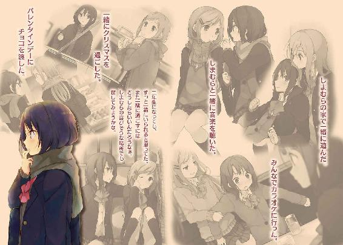

| 安達としまむら4 (電撃文庫) | |
| 入間 人間 | |
| (2015) | |


本書（電子版）に掲載されているコンテンツ（ソフトウェア／プログラム／データ／情報を含む）の著作権およびその他の権利は、すべて株式会社ＫＡＤＯＫＡＷＡおよび正当な権利を有する第三者に帰属しています。
法律の定めがある場合または権利者の明示的な承諾がある場合を除き、これらのコンテンツを複製・転載、改変・編集、翻案・翻訳、放送・出版、公衆送信（送信可能化を含む）・再配信、販売・頒布、貸与等に使用することはできません。
こっそり覗く桜さんの横顔は、みんなが言うように氷で築き上げられたようだった。
興味という熱のない瞳は、目の前の景色を映すばかりの鏡のようだった。
中学三年、春。進級してクラスが替わって自己主張を控えていたら、いつの間にか図書委員に割り当てられていた。正確には文化委員とか、そういう言い方だったけど内容が図書室の当番なのだから図書委員でいいかなと思う。そして早速、一回目の当番を命じられた。
カウンターには私と、そして桜さんが座っている。
正直、緊張していた。
桜さんとは一年生の時も同じクラスだったけど、話したことがない。でもどういう人かは遠くから見ていても分かっていた。愛想の欠片もなくて、冷淡で、口数が少なくて。
そして、その横顔は透き通るように綺麗だ。
だから、氷の彫像とでも評されるのだと思う。今、私もそれを実感してしまった。
とはいえいつまでも、その横顔に見惚れるように眺めているわけにもいかない。
深呼吸の後、意を決する。
「あのぅ......」
小声で控えめに呼びかける。輪郭を失うように判然としなかった桜さんの瞳が固まる。
「......なに？」
少し遅れて、桜さんがこちらに向く。興味の一片も抱いていない、つるつるとした瞳が間近で私を見つめた。本当に、周りのことなんてどうでもよさそうな雰囲気だ。当番に参加してくれたことが凄く貴重に感じる。そして、果たして二回目は出てきてくれるのだろうか。
今日みたいに昼休みならともかく、放課後には絶対出てきてくれない予感があった。
「いや仕事、当番......カード」
さっきから目の前に、本を借りようと女子が立っているのに。
いつまで経っても動こうとしないのでやむなく、声をかけて気づかせるしかなかった。
「あ、そう」
桜さんがようやく動く。前を向いていたはずなのに、まったく目に入っていなかったみたいだ。桜さんが特に慌てることなく、貸し出しカードの処理を始める。待たされている女子はなにか言いたげな顔つきで腰に手を当てているけど、桜さんがまったく意に介していないためか、どう出ればいいのかと手をこまねいているようだった。そうこうするうちに桜さんの作業が終わって貸し出しの準備が整う。待たされていた女子生徒は不承不承、カードに名前と日付を記入する。その前屈みとなった頭を見つめる桜さんが、ぼそぼそと口を動かす。
「......待たせてごめん」
最初、女子生徒も自分が言われたと分かっていないみたいだった。桜さんが目を逸らした後、ようやく女子生徒が顔を上げて反応する。女子生徒は「あ、うん」と曖昧に頷くしかなかった。
隣で聞く私もまた、大した言葉は出てこない。謝れるんだ、と驚いてしまった。もっと傍若無人な性格を想像していたので、その素直さに面食らってしまう。
でも桜さんは仕事に対する反省は特にないようで、またぼぅっとしている。
私もまたその横顔をひっそり見つめるのだった。
桜さんは教室でも似たような姿勢だった。誰かと話すこともなく、連れ合うこともなく一人で動く。孤立ではなく、孤高であり続けるようだった。その証拠に、桜さんは常に独りでありながら他の人に嫌がらせを受ける様子もない。手を出したら、冷徹に反撃してくる。そんなイメージが強いからかもしれない。だからかみんな、意図して桜さんを避けていた。
私もこれまではその仲間だった。けれど、間近で見る桜さんに、自然、目を引かれる。
『近づきがたいもの』をこんな近くで眺められる機会はそうそうない。
そう、見るだけでいいのだ。
桜さんは人目を惹く。男子にも人気がある。けれど誰も触れようとはしない。
氷は冷たく、鋭く、そして脆いものだから。
案の定、二回目から桜さんは当番に出てこなくなった。放課後の当番だから、予感的中である。嬉しくない。どうしようと、カウンターの椅子の上に中腰となって考える。座るか、出ていって探すか。まだ学校にいるのだろうか。迷い、うろうろ腰を揺らし、結局探しに行くことにした。すぐ帰ったとしてもまだ、下駄箱あたりにいるのでは、と思ったからだ。
カウンターを空っぽにする時間を短くするため、図書館を出てすぐに走る。階段を蹴飛ばすように降りる。こんな風にめいっぱい走るなんていつ以来だろう。少なくとも冬の間にこんなことはなかった。冬にはとても動き回る気になれない。春はこんなところにもやってきていた。
果たして急いだところ、桜さんは見つかった。
下駄箱で靴を出している桜さんが、飛び込んでくるこちらを向いた。
自分に用事があるとは考えなかったらしく、すぐに顔を戻す。
「ちょっとちょっと」
声をかけながら桜さんとの距離を詰める。少し、どきどきした。
桜さんが、やっぱり自分に用があるということになり、面倒そうにもう一度振り向く。
「図書当番。今日、なんだけど」
「あ......そんなのもあったか」
忘れていただけらしい。桜さんが私と下駄箱を交互にきょろきょろする。
そして一度頷くと、そろーっと、校舎の外に向かって歩き始めた。
「あ、こらこらこら、ダメだって」
少し腰が引けながらも桜さんの制服の袖を摘む。桜さんは振りほどきこそしなかったものの、億劫そうに振り向く。目と眉にやる気の欠片も載っていなかった。すっきりしたものである。
「あれ、二人いなくてもなんとかなるんじゃないの？」
言い逃れの割には案外、痛いところを突いていた。確かに長蛇の列ができるわけでもないし、一人でどうにでもさばけるのは事実だった。というか前回も桜さんはほとんど働いていない。
だけどそれでは、私が困る。桜さんがいないと、図書室に留まる意味も薄い。
「いやでも、当番だし」
気の利いたことが言えなくて無難に責任を語る。そう言われると桜さんも反論しづらいのか、渋々と言った様子で下駄箱に靴を戻した。この間、謝ったときといい桜さんには良識があるみたいだ。イメージと噛み合わなくて意外だけど、案外、普通の人なのかもしれない。
上履きを履き直した桜さんと一緒に歩きながらそっと、桜さんに触れた、正確には服だけどその手をジッと眺める。
そこには凍りついた指などなく、いつものようなうっすらとした赤さが芽生えるだけだった。
図書館へ桜さんを連れて戻る。桜さんも特に抵抗はせず受付の席に座り、それからは前回のようにぼぅっとするばかりだった。眠いのか、退屈の象徴なのかあくびも時々こぼす。
私のように、図書室の本を読んで時間を潰すようなこともない。
ジッと座ったまま、なにを考えているのだろう。早く終わらないかとか、そういうのかな。
興味が湧く。桜さんほど、よく分からないものはないからだ。
「本とか、読まないの？」
少しばかりの勇気を持って、話しかけてみる。桜さんは頬杖をつきながら答える。
「好きな本は読む」
どう取ればいいのか曖昧な答えだった。多分、桜さんが理解を求めていないからだ。
「よかったらなにか、面白いなーって本紹介しようか？」
私なりに、桜さんとの距離を縮められるかと期待して、なけなしの勇気を用いる。
でも。
「え、いや別に、いらない」
桜さんが手を小さく横に振る。それからすぐ、前に向き直ってしまった。
私は呆気にとられる。善意に対する多少の愛想とか、そういうものもなく。かといって煩わしく感じている様子もなくて、無味無臭な態度を一貫している。
本当に興味ないんだなぁと。むしろ、こっちは興味を湧かせてしまう。
一体、桜さんの気を引けるものってなにがあるのか。ちらりちらりと横顔を覗く。
図書委員が、こんなに刺激的なものになるとは思わなかった。
手にしていた本を目にしてページをめくっているはずだけど、なにも頭に入ってこない。
桜さんとのなにか、きっかけを探す。探す。けど、あるはずもない。
つるつると磨き抜かれた氷の表面は冷たいばかりで、なにも寄せ付けない。
相手からの接触なんて待っても百年やってきそうにない以上、こっちから動くしかない。
そして相手を知りたければ話すことだ。とにかく会話するしかなかった。
「桜さんって、えっと、休みの日になにしてるの？」
「別に、なんにも。寝たり、横になったり」
それ、同じじゃないのかな。そしてなにかごまかす様子もないから、本当にそうなのだろう。
桜さんが噓をつかないのは素晴らしいけど、これじゃあ、話にならない。
「あー、じゃあ......桜さんって成績いいの？」
「普通かな」
「あ、そっか......へぇ」
返事をしてくれるだけマシかもしれない。無視されるのが一番辛かった。
今はその次くらいに辛い時間だけど。
こんな探り方では、桜さんのつかみ所なんて見つかるはずもない。
もっと、踏み込まなければ。
それは桜さんの氷を割ることになるのだろうか。
それとも私が足を滑らせて、転ぶだけか。
悩んでいる間、目が遠くなる。端が真っ白に近づいていく。
大粒の涙をこぼすように、俯いた口から声が漏れた。
「桜さん、友達、いる？」
その問いかけへの返事に、間はなかった。
「いない」
断言する。真っ白なものが雪崩のように降り注ぐ。そんな、力強さを感じた。
本の角に添えていた指が、ゆるゆると震えた。
「そうなんだ」
「うん」
じゃあ、だったら。
喉が震える。
私と友達にならない？
そう言いたかった、言おうとした。でも、すぐに言葉は出てこなかった。
私は学校に、何人も友達がいる。だけど面と向かって友達になりませんか、なんてまるでお付き合いを申し込むようなことをして、友達を作ってきたわけではなかった。だから咄嗟に、羞恥や断られたときへの恐怖やらが押し寄せて、それをはね除けるのに時間が必要となる。
ここでそれが先に言えていれば、なにかが変わったのかもしれない。
けれど。
桜さんは真っ直ぐ前を向いたまま、独白のように言った。
「私は、それでいい」
氷には、ヒビの一つも入っていなかった。
澄まして滑らかに。冷たく、固い。
その横顔を見つめてしまえば、出かかっていたそれも逃げ出すしかなかった。
「......そうなんだ」
対する私の返事もまた、独白に等しかった。
だから今度こそ無視されて、そこで、あぁと、諦めを納得する。
それ以降、私は桜さんを見ているばかりになった。積極的に話しかけることはなく、桜さんが当番をうっかり忘れていても誘うこともなかった。でも大抵は当番に出てきてくれて、そうすると私は図書委員を務める間、本を読むフリをしながら桜さんの横顔を覗き見るのだ。
そこまでが、私に許されたことなのだとわきまえていた。
綺麗で薄い、桜色の唇を見る度に感じる。
私は多分、なにかを失敗した。そんな気がする。苛まれる。
でも失敗して尚、桜さんを見飽きることはなかった。
二学期になって所属する委員が変わり、私と桜さんの小さな接点はぷっつりと失われた。
教室は一緒だったけど話しかけるようなきっかけも見つからず、更に言うと桜さんは欠席の日数も段々と増えてきていた。面倒くさくなると学校に出てこなくなるみたいだった。
そうしてその後、私と桜さんとの間になにかあるわけでもなく、当たり前の流れに乗って卒業式を迎えた。桜さんは卒業式にも不参加なのではと危惧していたけど、一応出てきていた。でも多分、私のことは覚えていないだろう。退屈そうに俯いて身を固くしていた。
私はそんな桜さんを遠くから見つめる。
桜さんは列の先頭にいるけど、時々、頭が左右に揺れていた。
校長先生の長話が終われば、そうした桜さんの後ろ姿を追うこともできなくなる。
今だけは、いつも疎ましく感じるその舌が乾くことのないのを願った。
卒業式が終わり、解散して各々がグループを作るなり、体育館の外に出るなりと思い思いに動く。私はある種の予感を持って、友達の輪から離れて足早に外へ出た。
学校の中央通りに揃えて生える桜の木にはうっすらと、花びらの色が見え始めていた。
咲くにはまだ早く、春の芽吹きを待つ季節。遠くに映る微かな桜色を一望していると、その下を歩く見慣れた背中があった。見た瞬間、足が動く。肩が揺れる。走り出していた。
「桜さんっ」
名前を呼びながら詰め寄る。桜さんがゆっくりと振り返った。
訪れようとする小さな春の下でも、桜さんの氷は堅牢を保っている。
私のことを一応覚えていたのか、その目が微かに動いた。
「なに？」
誰とも名残を惜しむことなく、静かに去ろうとしていた桜さんだ。
私の知っている、いつも見てきた桜さんだった。
なんでか、その素っ気ない態度に触れて嬉しくなってしまう。
「その、元気で、じゃなくて......」
思ってもいない言葉を口にして、なんの意味があるのだろう。
これが最後だと思えば、自分を投げ捨てるような感覚で勇気が湧く。
捨て鉢？ 足の裏からひっくり返る？ 前のめり？
そんなイメージが、自分を鼓舞する。
伝わらないと分かっていても、伝えたいものがあった。
だから私は彼女に言う。
「ありがとう」
お礼の言葉を、だ。
なにが？ と聞きたそうに桜さんの目が細くなる。それは、桜さんという人間を無防備に観察できる時間を与えてくれての、極一時でも与えてくれた刺激へのありがとうなのだけど、きっと大まじめに語ったところで桜さんの心に響くものではないと思った。
細かく届けたいことでもなかった。
そういう理由があって、笑う。桜さんはしばらく訝しむように表情を硬くしていたけれど、やがて「よかったね」と短く、冷たく呟いた。興味の一片もない、形だけの返事。
届くと寒気を覚えるような、鋭利な冷たさが胸に染みる。
うん、よかったよ。
口の中でだけ返事をする。そして桜さんは別れを告げることなく離れていった。
そのまま私は、背中にたくさんの声の大賑わいを聞きながら桜さんを見送る。
ほどなくして。胸に届いていた氷の塊が、溶け始める。
それは不思議と、胸や脇のあたりへと温かさを伝えるのだった。
これから先、もし桜さんを町で見かけても話すことなんかないだろうけど。
だからこその、ありがとうだった。
花びらのようにゆらゆら、その背中が遠くなる。
桜さんはその名前に相応しい桜色の景色へ、振り返ることなく溶け込んでいった。
「へぇー、安達の名前って桜なの」
「うん」
始業式が終わって校舎から一緒に出たところで、安達がそんな話をしてきた。
満天の桜を見上げてではなく、散って地面にべたべた張りついたそれからの話なのでいまいち活気に欠ける気もした。その花びらを極力踏まないよう避けて歩くと、千鳥足のようだった。
「前も聞いたかな？」
「多分」
安達が小さく頷いた。最初に体育館の二階で会ったときだろうか、まったく覚えていない。
「へー、ほー......」
適当に頷いて間を取りながら、遠くの体育館に目をやる。
冬場は凍土みたいに冷たい床も、今日の始業式では少し和らいでいた。これから日差しが強まっていくにつれて、あの場所の居心地というものも改善されていく。修行場のように耐え抜くしかできないそこが、逃げ場となる。そこにもうわたしたちの足が向くことはない、のかなと安達を密かに横目で見る。大丈夫さ、とは言えそうもない横顔なのだった。
それにしても安達と出会ってからまだ、一年経っていないのか。少し意外だった。
安達との関係は思いを馳せると不思議なもので、十年来の友人のように、また明日からは顔も合わせなくなるような薄い繋がりにも感じるときがある。土台がしっかりとしていないから不安定なのかもしれない。それがどうすればしっくり来るのか、よく分からないけど。
ふむ。
「桜ちゃん」
戯れに名前で呼んでみる。最初、安達は無表情で特に反応を示さなかった。けれど自分が呼ばれたのだと気づいてか、目を丸くしてわたしを見る。少し照れつつも笑うと、安達は表情そのままに頬と耳、それに薄い首筋が桜色に染まった。お、名前負けしていない。
「それとも桜さん？」
からかいを重ねると、安達の髪がぱたぱたする。安達が小刻みに上下に揺れて、左右の髪が動物の耳みたいに跳ねていた。なんかかわいらしい感じもする。当の本人は忙しそうなので、歩きながら落ち着くのを待った。ぱたぱたという音が止むまで、真っ直ぐ前を見つめた。
その音が止まってふと横を見ると、「あら」にやーっとしていた。安達が、もう、にやーっと。
今にも『へへふしへへ』とでも笑い出しそうな、頬の緩んで溶けた表情を浮かべている。そういう顔もできるんだなぁと物珍しいものを眺めていると、安達がハッと、視線に気づいたように顔を上げる。崩れていた顔もすぐ引き締まり、頬の桜色が朱色へと移り変わる。
「な、なに？」
左右に目を泳がせて鞄を何度も握り直しながら、安達が聞いてくる。それでも比較的落ち着いてはいるみたいなので、自分が今、どんな顔をしていたかは自覚がないようだった。
指摘すればこの程度の反応では済まないと思う。言うか少し迷ったけど、内緒にしておいた。
恥ずかしがりやの安達が、走ってどこかへ逃げたら追いかけるの面倒だし。
「なんでもないよ。安達を見ただけ」
ごまかすと、安達がギョッと仰け反るようにしてから、目がぐるぐる動く。......なんで？
「え、そ、そぅ、私を、そうなんだ」
今度は口の端が引きつっていた。どうやら、意識して笑おうとすると上手くいかないみたいで目と口がそれぞれ、切り分けたリンゴみたいな形になっている。顔、疲れないのかな。
そんな安達と一緒に校門から出て畑の前の道を歩いていたところで、あれ、と後頭部を撫でるような違和感に気づいた。その正体はすぐに察する。歩いている安達がおかしいのだ。
「安達、なんでついてきてるの？」
聞いてみると、安達が固まる。そして、傷ついたように目尻を下げた、心細い目でわたしを見つめてくる。すがるような目を向けられて、え、なに、なにとこっちが驚いてしまう。
「自転車。乗ってきてないの？」
駐輪場は当たり前だけど学校の中にある。しかもわたしと安達の家は方角がまったく違うのに、一緒に歩いてきてどうするのか。安達はどこへ行こうというのか。
「あ、そっち......」
安達の顔を縛っていたものが解けたように、目もとや口が弛緩する。
そっちって、どっちがあるのだろう。よく分からないけど、安堵した顔になっている。
教室では無表情で一貫していたので、機嫌でも悪いかと思ったらそうでもないみたいだ。
二年生の教室ではあいうえお順に席に着いているので、わたしの席からは安達が左斜めの位置に見える。わたしは新しく顔合わせした同級生と簡単に話もしたけど、安達は誰とも言葉を交わす様子がなかった。時々わたしの方を見て、それから俯くように目を逸らしてしまう。
固く、冷たく。時間が終わるのをただ待っている。
で、終わったらわたしの側にやってきた。そういうところが実に、うちの妹と被る。
見ていて変わらないなぁと思うと同時に、大丈夫かなとも少々心配になってしまう。同級生に姉気取り、というのも若干おかしな話だけどついそういう視点となるのだった。
新しいクラスで、安達は上手くやっていけるのだろうか。
いやまぁ、去年も順調だったかと聞かれると、そんなことないのだけど。
安達はそういう子なんだろうと思う。......でも、一度気を許すと色々な顔を見せてくれる。
わたしはけっこう、安達に懐かれているみたいだし。
「しまむら？」
「安達って時々、犬っぽい顔になるよね」
しょぼくれた感じの、という部分は省いて指摘してみた。
「いや、全然」と安達が鼻や頬を撫でて否定する。犬嫌いなのだろうか。
わたしはけっこー、犬とか好きなのだけど。
ところで、安達はそろそろ引き返さなくていいのだろうか。
ずんずん歩いて、このままだとわたしの家に着いちゃうぞ。
もう一度言い出す機会を見失いながら、散った桜の描く春を一緒に歩く。
背中に当たる日差しの温かさにそっと、息を吐く。
おまけ「日野家来訪者その１」
金曜日の放課後、わたしの家に遊びに行くと言い出したので露骨に嫌そうな顔をしてやった。
「えー」
「二年ぶり、いやいや三年......三日前、の晩ご飯はなんだったかな？ うーん......」
見ろよ。自分の記憶力なんか今更疑ってないで、わたしを見ろ永藤。
念を送ってもまったく反応する気配がないままてくてく歩いているので、諦めた。
ということでその日、永藤も一緒にわたしの家へ来たのだった。
住宅地の隙間から入り込んで長い石畳の道を抜けた先にある家を眺めて、永藤が言う。
「別荘みたいでいいねぇ」
「そうかぁ？」
永藤の感想に首を傾げてしまう。わたしの中で別荘というと洋風建築を想像するので相容れない。緑が多くて庭は広くて木も生い茂って、勝手に亀が住み着き始める程度にはお屋敷やっているが、どこに別荘の要素があるのだろう。聞いてみると、あれこれと指差す。
「石畳の道とか、池とか、あと木の匂いがするとことか」
永藤の鼻がすんすんふがふがと匂いをかき集めるように動く。そこまでして吸わんでもいい。
まぁ確かに永藤の言うとおり、自然の匂いはする。住宅地の中では不自然なほどに緑に囲まれているし、屋敷は和風で、木がふんだんで、少しばかり古臭いからだ。何度か改築はしたけれど、奥の邸宅はくすんだ壁をそのままにしていた。祖父さまたちが住んでいる家で、茶会に使われる茶室も隣接している。たまにわたしも茶室に有無を言わさず押し込まれる。
よってあまり好きではない。
「相変わらずおっきい家だなー」
「平べったいだけだろ、多分」
その平たい屋敷の戸を開けると、靴を磨いていた女中さんが顔を上げて、笑顔を向けてくる。
「お帰りなさいませ」
「はーいー、ただいまー」
相手が永藤でも、同級生の前でこういうのはどうにも気恥ずかしいものがあった。
ちょっと浮き世離れしているというか、お嬢様しすぎというか......なんだろう。昔から友達を連れてくるのが嫌で胸に渦巻くものは一緒なのだけど、その正体をはっきりと口にできない。
「お邪魔するッス」
永藤がわたしの横に出て自己主張してくる。そのでかい胸も肘に当ててきて自己主張してくる。さすが『おにくのながふじ』である。どこで差がついた。
「お客様......あ、いえご学友ですね」
「友達だよ、ただの友達」
大層に語られるものではないし、仰々しくある必要もない。
永藤をわたしと同じ雛壇に載せてどうするのだ。
「すぐにお茶の用意をさせますので」
「あーいいよ、いらない」
永藤だし。
「買ってきてありますのでご安心を」
永藤が背負っている鞄から午後ティーのペットボトルを取り出す。それ、昼飯のときの飲みさしだぞ。生温そうである。ちゃぽちゃぽ揺れるそれを見て女中さんが苦笑を浮かべた。
「まぁこういうやつなので、気にしないでね」
永藤の背中を押して家に上がる。廊下の磨き抜かれた木製の床は油断するとすぐに足を取られて滑る。慣れていようとも関係ない。玄関からは大きく二手に分かれている。真っ直ぐ進むと屋内の各所に通じる道へ、右側へ進むと中庭を一望できる外側の通りに出る。ちなみにすぐ左側の部屋には祖母さまが暮らしている。祖父さまとは別居だと冗談で言っていた。
わたしの部屋へは外を通った方が早いので、右側へ向かった。
永藤は物珍しそうに天井や壁を眺めながら、わたしの後ろについてくるのだった。
それから廊下を少し歩いたところで、久しぶりにその顔を見てしまう。
「うぇ」
部屋から出てきた兄貴と鉢合わせてしまった。四男の郷四郎だ。相手もこっちに気づいて目を細める。
「ご挨拶だな、晶」
この兄貴は二年ぐらい前まで家にいたから、他の兄弟より顔を合わせる機会が多かった。郷四郎兄貴とは仲こそ悪くないけど、苦手としていた。細々と口うるさいやつなのだ。
「珍しいな、友達を連れてくるとは」
和装に着替えている兄貴が微かに笑う。
「勝手についてきただけって」
「こんにちはわ」
はとわのどっちかを省けよ。わたしの後ろから挨拶する永藤に「兄の郷四郎です」とバカ丁寧に深々、兄貴が頭を下げる。永藤とは会ったことなかっただろうか。対抗するように「おにくのながふじでございます」気取らなくていい。外見には知性が滲んでいるから、中身と似合わず礼儀正しく見える。
「今後とも晶へのご指導、ご鞭撻の程よろしくお願いいたします」
「はっ、もう鞭をビシビシと」
「.............................................」
永藤はともかく、郷四郎兄貴もこれで冗談じゃないのだから生真面目が過ぎる。
なんで同級生にご指導されないといけないのだ。
それから顔を上げて、わたしにはやや厳しい顔で注意を促す。
「奥にお客様が見えている。あまり騒がないように頼むぞ」
「分かった分かった、はい行ってらっしゃい」
適当に手を振って別れた。同じ家で育ってどうしてこうも性格がはっきり違うのか。
兄貴たちは竹筒の中にでも埋まって育ったんじゃないかというほど、はっきり堅物なのだ。
「日野にそっくりだな、今の人」
「いや似てないと思う」
兄貴たちはみんな背が高い。小さい頃のわたしからすると全員、父親に見えた。
中庭を一望できる通りを歩きながら、そうか客が来ているのかと今更頷いた。
後でお前も挨拶に来い、と呼ばれなければいいのだけど。
「そうそう、そうだった」
永藤の手が合わさる音を聞いて振り向く。
「なんじゃい」
「日野の名前はアキラだった」
こいつもこいつで今更なことを思い出したみたいだ。兄貴が呼んでいたからだろう。
アキラちゃんと呼んで追いかけ回していたくせに、よく忘れられるな。
こいつのお脳の具合は分かりづらい。これで学校の成績はいいのだから。
「お兄さんたちの名前なんだっけ？」
聞いてお前に覚えられるのか、と思ったけど一応答える。
「長男が階一郎で次男が徳二郎、三番目が又三郎で、さっきのが郷四郎」
数字が揃えてあるので分かりやすくはある。わたしが男だったら大五郎になっていたらしい。ただ父親は私が生まれて嬉しかったと聞いたことがある。子供が生まれる前に男女両方の名前を準備しておくのだけど、女の名前がようやくムダにならなかったから、だそうだ。
「ほぅほぅ」
永藤が頷く。覚えたか言ってみろと要求したら、絶対に言えない顔だった。
「日野だけ覚えてればいいや」
「そりゃそうだ」
永藤にしては賢い。どうせ顔を合わせる機会なんてないし、とかそれ以前に永藤が覚えようとしたところで二日もあれば全部忘れてしまうからだ。でもこの間、海外旅行で一週間以上離れていた後に会ってもわたしのことは覚えていたのでよしとする。うむ。
通りを回って端の部屋の戸を横に開く。そうしてわたしの部屋に入るとまず、永藤は眼鏡を外した。背負っていた鞄と一緒に机の上に置いて、それから畳に横になった。なにをするかと思ったら、そのままごろごろと左右に転がり始める。
「楽しいか？」
「畳の匂いがことのほか」
転がりながら鼻がふごふご動いている。
「日野の部屋だけで私の家より大きいなー」
「お前の家は縦に長細いからだろ」
二階も三階もある。わたしは高いところが好きだから羨ましい。
ごろごろ転がりながら永藤が感動？ する。わたしはそれよりそんな風に転がって胸がつっかえないのか痛くないのかおぅ、と聞いてやりたい。ちなみにわたしは痛くない。どういうことだ。
ごろごろ永藤が壁際で止まる。で、仰向けのまま両足で畳を蹴ってこっちにやってくる。尺取り虫みたいな動きでわたしの足の間に滑り込んできた。スカートの中でも覗きに来たのかと、思わず一歩退く。下着ぐらい今更見られても平気だけど、覗かれると少し引いてしまう。
永藤はそのままわたしを見上げて、首を傾げた。
「着替えないの？」
「あん？」
「お着物」
ひらひらー、とない袖を振るように永藤が身体を揺らす。揺れるのは胸だけだ。
ケッ。
「あれ、私服じゃねーっての」
家でいつもあんな格好をしているわけじゃないのは知っているだろうに。
「でも日野の服でしょ」
「いやまぁそうだけど」
ひらひら。永藤が催促するように腕を振る。胸も以下略。
永藤にしてはこだわる。そして同じ行動を繰り返す、こういうときは。
「......見たいの？」
「見たい見たい」
ラッコのように手を叩いて囃し立ててくる。黙っていたら、いつまでも手を叩いていた。
騒ぐなって兄貴が言いつけていたことを思い出す。
「めんどくせー」
そう口にしつつも、通りかかった女中さんに頼んで和服を用意してもらう。奥の部屋で着付けも手伝うと申し出てきたけど、一人で着られるので断った。女中さんと永藤がわたしの話題で盛り上がりそうなのが嫌だった。
家でのわたしがどーとか、学校でのわたしがどーとか。そういうのは苦手だ。
制服を脱ぐ。スカートを落としたところで振り向くと、寝転んだままの永藤が見つめていた。
「なに？」
永藤がわたしの視線を不思議がるように、輪郭を緩めた目を向けてくる。
「なにもなにも、尻ばっかり見られると気になる」
「仕方ないねー」
「明らかに適当に返事してるだろお前」
「日野しか見てないし」
「......えぇ、うん。ま、そうだろうけどさ」
こいつの場合、どういう意味でそれを言っているのか汲みづらい。
そのままなのか、それともなんか、日常的にいつもそうだよという広い意味なのか。
どっちも正解な気がした。しかし、わたしを見ているからって尻を凝視しなくてもいいだろ。
お尻を見つめてなにを思ったか、聞いてみたいようなそうでもないような。
長襦袢を着て、着物を羽織って、とやっていると永藤が話しかけてくる。
「手際いいよね」
「習わされたからな」
「デパートの包装紙みたいにテキパキしている」
褒めているのかよく分からない。読み解くのに苦労するやつだ。
着替えている最中、永藤の視線を絶えることなく感じる。人の着替えなんて見ていて楽しいか？ ......楽しいのか？
帯を結ぶ際に少し焦りながらも、急いで着替えた。
「ほれ満足か」
袖を永藤の顔の前でひらひらーっと振ってやる。ぱむ、と永藤が袖を掴もうとして空振りする。横着にもまだ寝転んでいたので袖をひらひらさせて誘導してみると、むくりと起きて追いかけてきた。面白いので誘導していると、永藤が唐突にわたしの肩に手を載せてきた。
なんだと目をやっている隙に正面へ回り込まれて、それから永藤がわたしのデコに唇を添えてきた。一瞬、視界が飛びそうになったがすぐ持ち直す。
「......お前な」
不意打ちではあったけど、あんまり驚かなかった。額が冷たい。
永藤はわたしの肩に手を載せたまま、平坦な顔つきのままに言う。
「日野かわいいな」
「......な、なんだいきなり」
こっちにはたじろぐ。飾り気のない褒め言葉には、わたしを押しのける質量があった。
「見ていてそう思った」
見つめて目を逸らさないまま、永藤が言葉を続ける。
いつの間にか大きくつけられた背丈の差を示すように、永藤の影がわたしを覆う。
「......お前ね」
こっちが目を逸らして言葉に詰まっていると、永藤が未練なく目の前から離れる。
吸いつきと離れの良さが同一で、調子を合わせるのが難しい。
まぁ無理に合わせなくてもいいんだけど。わたしはわたしのまま、永藤といればいいと思う。
その永藤がぐねぐねと左右に身を揺らしているので、なんだよと目で問う。
「私も着替えようかな、どうしようかな」
「あぁ？ 着替え？」
「今日は日野の家に泊まるつもりなのね」
「は？」
なにを他人事みたいに言い出したんだ、こいつは。
ここまで一度として聞いていない予定に面食らっていると、永藤が鞄を担いで持ってくる。
「家大きいし、私が紛れていても気づかないな、うむうむ」
永藤がなんでか勝ち誇る。それから鞄を開けると、着替えに洗面具と並べてくる。いつもより大きい鞄を背負っていたのはそういう理由らしい。だから聞いてないぞ。
「先に言っておけよなー、そういうのは」
「言ったら日野反対するし」
「......よく分かってんじゃないか」
流石に付き合いが長いと以心伝心だなー、ははは。
「だろー？」
永藤が眼鏡をかけ直して、口もとを引き締める。
眼鏡をくいくいあげて得意げにしているそいつを見ると、反対するのも馬鹿らしかった。
『今日の安達さん』
鏡の前を通るとギョッとする。自分がだらしなく笑っていた。
頬と口もとのにやにやを抑えられていない。慌てて指で押さえて修正する。
昼間のことをちょっと思い出しただけでこれだ。
危ない、危ない。
こんな顔をしまむらに見られたら、冗談にもならない。
夏は気怠くも眠く、秋は涼やかに眠く、冬は静かに眠い。
春なんて言わずもがなで、つまるところ年中瞼が重たいのだった。不思議である。
やっぱり趣味とかそういうものがないから、時間の穴埋めのために自然と働きかけているものがあるのだろうか。進級もしたし、ここでなにか始めてみようかとも少し考える。
二年生から部活というのも出遅れているし、ここは安達を見習ってアルバイトか。でもなぁ、と躊躇する。目標がないのだ。なにかを買うとか、習うとかそうした使い道を思いつかない以上、勤労への意欲は薄い。安達も大した目的はなさそうだけど、なぜ働いているのだろう。
そんなことを考えながら少し寝ようか迷っていたときだった。
「お弁当食べない？」と声をかけられたのは。
一学期が始まって、二日目の昼休みのことである。
相手は安達、ではなく近くに席を作っていた女子集団だった。
「しまむらさんだよね」と名前を確認してきたので、「うんそう」と取り敢えず頷く。
確認のはずなのに、ひらがなで呼ばれている雰囲気を感じ取ったのは自意識過剰だろうか。
「一緒にどう？」
用意された空席を軽く叩いて、真ん中の女子が誘ってきた。そこでなんとなく、教室の左斜めに座る安達を見る。安達もわたしを見ていたけど、目が合うとすぐに顔を逸らしてしまう。
安達は、驚いたような顔だった。
「約束とかある？」
隣の女子が曖昧な笑顔で窺ってきた。「それはないけど」と返事をしながら、なぁなぁとした空気に流されてその席に着く。「いやどうもどうも」と三人に挨拶すると、小さく拍手が起きた。
なにこれ。
その三人から自己紹介された。みんな早口だったので把握しきれていないけど、サンチョ、デロス、パンチョみたいな流れだったと思う。名前の似ているのが二人いてややこしい。
最初に声をかけてきたのはサンチョだ。眼鏡をかけている。デロスは顔つきが少しふっくらしていて、パンチョはわたしよりも色濃く髪を染めていた。
新しいクラスになって早速結成された女子グループに、わたしもお招きされたというわけらしい。わたしがそんなに社交的な人間に見えたのだろうか。染めていたはずの髪は手入れを怠って黒々とした本来の色を取り戻して、中途半端な色合いになっている。その髪を見て審査で弾かないあたり、着飾ることに執心するグループではないみたいだ。
「あ、わたしお弁当じゃないから。今ちょっと買ってくるね」
周りの三人が既に弁当箱を用意しているのを見て、席を立つ。それからクラスの入り口を見ると、安達がまた、首を縮めるようにしながらわたしを見つめていた。犬か猫が周囲の様子を恐る恐る観察しているみたいで、目をすぐに逸らすのも忍びないなにかがあった。
呼んでも嫌だろうし、来ないだろうなぁと思ったけど近寄ってみる。すると怯えたように肩を跳ねさせた後、そそくさと一人教室を出ていってしまった。去り際、目が回っていたように見えた。どうせわたしも購買にパンを買いに行くのだから一緒に行こうと思ったのに、追いかけようとした安達は別の方向へ逃げていってしまう。けっこう足早で、早歩きでも引き離される。走れば追いつけるだろうけど、どうしようかと教室のことを振り返りながら迷っている間に安達の背中が見えなくなった。教室で待っている相手がいないならそのまま安達を探せ、のノリでさまようのも悪くないけれどさすがに放っておくのも不義理だ。
また教室に帰ってきてから話しかければいいか、と今回は諦めることにした。
行き先を変えて、購買に向かう。安達はやっぱり、その途中で見かけなかった。
パンを買って教室に戻ると、席はまだ空いていた。
サンチョに手招きまでされては、笑顔でそこに収まるしかない。あはははと座る。
「三人は前から仲いいの？」
「ううん、二年生になってから」
パンチョが同意を求めるように目をやり、二人が応じて頷く。
「そっかぁ」
つまりわたしも席が近いから声をかけてみた、ぐらいの気安さだろう。
だから席替えすればきっと、この三人と一緒に食べることはなくなる。
積極的に名前を覚えようとしないのは、それが分かっているからだと思う。
「しまむらさんは部活とかやってるの？」
「んーん、まったくだよ」
パンチョに聞かれて首を横に振る。こういうときは、「そっちは？」と聞き返すものだ。
「わたしはねー、一応軽音楽部。参加率微妙だけど」
「へー、音楽。楽器」
なんだその中身のない返事、と自分で呆れながらも小さく笑う。
まぁ、そんな話が続いた。正直、思い返してもなにが楽しいのか分からない。
しっかり噛んで飲みこんだはずのパンの味もはっきりとしなかった。
昼休みぎりぎりに三人から解放されて......解放って表現も失礼な気がする。まるで無理に付き合わされたみたいで、そういうのはよくないなと反省する。ただ誤解を恐れず言うなら、わたしから入れてくださいと志願したわけじゃない。だから少しぐらい、感想の揺れ幅を認めてほしいものだ。
「.............................................」
案外、すぐだったなと感じる。
クラスが替わって日野と永藤もいなくなり、新しい友人モドキが生まれる。きっと明日も誘われて、少々喉の通りが悪くなるような愛想笑いを浮かべるのだろう。そうやって一日が回るようになっていくのだ。去年の焼き直しみたいだと、頬杖をついて実感する。
いや、日野と永藤は登場からしてもっと面白かったけど。
だけどクラスが替わったら、積極的に遊ぶほどの仲でもないと思う。
このまま、新しい人間関係に埋没していくのだろうか。
小学校を卒業して、中学校の友達ができて。
その中学校の友達も高校では会わなくなって。
こう振り返ってみると、わたしは継続しない。人間関係をほとんど、持ち越さない。
みんなそうなんだろうか。それともわたしが関係を希薄に捉えすぎているのか。
薄情なやつなのかもしれない。
けど、わたしはこう考える。
どこまでも共に流れていくほど、強い関係は滅多にない。
運命という川に長く浸れば、絆もふやけてちぎれていく。
安達が教室に姿を見せなくなったのは、休日明けの月曜日からだった。どういった心境の変化があったのか、分かるような、深くは追いきれないような。とにかく早々に、教室には空席ができた。非常に目立つ。あいうえお順だから、誰がいないかもすぐに分かるのだった。
その日は雨降りで、外を走り回る予定の体育は急遽、体育館でのバスケットボールに変更された。準備運動の途中、一階のバスケットコートから二階を見上げる。
二階に、安達がいるのだろうか。雨が降っているし、そもそも学校に来ていないこともあり得る。さすがに気配だけで安達が分かる、とかそんなことはできないので確証はなかった。
サボらなければ、いやサボりと決めつけるのもアレなんだけど安達がここにいたら、一緒にバスケットに参加していたのかな。ボールを受け取りながら想像する。卓球ならわたしより強かったけど、バスケットならさすがに安達に勝てるだろう。一応、わたしは経験者だし。
しかしサンチョとパスを交わして練習していても、ボールの扱い方がひと味違うとかそういう評価を頂戴することはないのだった。気づいてくれと念じてボールを投げてみるものの、緩い軌道でボールが返ってくるばかりだ。経験は風化して剥げてしまったのかもしれない。
そんな風にボールを受け渡ししながら、時々、体育館の二階を見る。
覗きに行ってみようか、迷っていた。
安達もひょっとしたらそれを待っているのかもしれない。
でも下手に見に行って教師に咎められると認識を変えてしまう。思考の抜け穴みたいに守られている体育館の二階という場所が、見回りの対象となってしまうことにはもったいなさと抵抗があった。
見つめていたら安達の頭がひょっこり出てこないかな、と上を向いていると。
「あ、しまーだ」
「しまー」
合同体育で別コートにいた日野と永藤が、わたしの前を走る。日野の背中を永藤が押して、汽車ごっこみたいに仲良く走り抜けていった。と思ったら大きく旋回して戻ってきた。
「よぅしまー」
「しままー」
「......お変わりないようで」
特に永藤。なんにも考えないで喋っているのが分かりやすくていい。
いつも難しい顔だったり困り顔だったりする安達もこいつくらい吹っ切れたらいっそ、すごく楽になれるのだと思う。ただし永藤は天然物なので、下手に真似すると酷いことになる。
「今日はあだっちー休みか？」
わたしの側に安達がいないからか、そんなことを聞いてくる。「多分ね」と短く答えた。
いつも一緒にいるわけじゃないよ、と反論しかけてどこかで聞いた台詞だと思い直す。
「そうかそうか。じゃあなー」
「ばいちゃ」
汽車ごっこが発車する。わたしは乗らずにやり過ごして、小さく笑う。
人間関係の一端を試された気分だ。そして今のわたしはそれを無難にやり過ごした。
それができなくて、流れに乗っかれないのが安達だ。
それはまぁ、多分、悪いことだ。
人と人との間で生きるしかないこの世界では、不都合をいっぱい生んでしまうだろう。わたしはそれなりにそういうものとやっていける方だけど、安達は本当に適応力がない。
そんな安達はこれからどうするのだろう。
適応しようと変化するのか、それとも。
「そういえばさー、しまむらさんって安達さんと仲いいの？」
近くに寄ってきていたサンチョにいきなり、そんなことを尋ねられる。内心でも読まれたのかと、表面に出さないよう努めながらも驚く。そしていつの間にか、サンチョ以外の二人組もボールを抱えたままこっちに集合していた。わたしが中心にいて三人が扇状に広がっているような構図なので、居心地悪い。
「うん。一応、友達だけど」
安達に言わせると一番の友達というやつらしいし、わたしも別に異論はないけどわざわざ口にしても微妙な雰囲気になりそうなので省いた。
「だよね。去年、結構話しているの見たし。今日は風邪なの？」
ああそういうと納得する。外で手を繋いで歩いているところでも見られたかと思った。
あそこまで来ると一応じゃない友達だよね、と密かに笑う。
「聞いてないなぁ。でも風邪気味かも」
ズル休みですと本人のいないところで言うのもなんなのでごまかしておいた。
「わたし安達さんと同中だったけど、なんか雰囲気変わったよね」
右端の女子こと、パンチョがそんなことを言う。わたしは少し興味を引かれて、顔を覗く。
「そうなの？」
「うん。教室で誰とも喋んないのは同じだけど、もっとこう、硬い感じだった」
小高い山でもイメージするように、パンチョが手を上下に動かす。
硬い感じと来る。確かに安達は動きが硬い、いやぎこちない。今と変わってないじゃないか。
「今も似たようなものだと思うよ」
「いやー、なんかちょっと違うかな。こう、もっと平和のインテリジェンスを感じないような」
「あんたなに言ってんの？」
サンチョがその表現に笑って、デロスも釣られるように口もとを手で覆う。
わたしも最初はなにを言っているのか分からなかったけど、ようするに刺々しくないということかな、と解釈する。それなら分かるところもあった。少なくともわたしの接するところの安達は滅多に棘を刺してくることはなく、肩を縮こまらせて困ったように見上げてくるのだ。
抗う棘もなく、ただ硬くなってうずくまる。
安達の拒絶は堅牢でもないのに、意固地だ。
結局、わたしは体育館の二階を確認はしなかった。流れから逸れていくことを良しとできず、踏み切ることができなかった。久しぶりのバスケットボールが案外、楽しかったのもある。
面倒くさがらなければ意外と楽しさはそこら中にある。
ようは本人の気の持ちようだということを、ボールを弾ませて思い出した。
授業が終わってからも、サンチョたちの流れに巻き込まれて一緒に教室へ向かう。
なにかが違うと感じながらも、わたしの足は周りに合わせて動く。
唇は周囲の反応を窺って曲がり、頬は半分ほど聞いていない話によって盛り上がる。
自分が最適化されていくのを冷たく感じた。
体育館を出て、背中側から雨を含んだ風が吹く。
強くもない風なのに、側を通るとその温度差に吹かれて身体が動く。
春だなぁと。そう呟くしかなかった。
家に帰って妹とヤシロが「うひょーひょー」とじゃれているのを眺めるのは、うるさいけれど見飽きない。特に妹は今月の初めに『もう子供じゃない感じかな』と進級して得意げになっていた姿と比較すると、なかなかに笑える。ヤシロといると幼くなるみたいだ。
そんな小動物みたいに絡んでいる二人の声より少し硬い電子音がわたしを呼ぶ。帰ってきてから机に置いたままの鞄の中でそれが鳴っている。安達かな、と予想しながら鞄を開けて電話を取り出すと、違った。こないだ教えたばかりのサンチョたちでもない。
最後に会ったのは二月だったか。受信した相手は『樽見』と出ていた。
正直、また電話がかかってくるのは意外だった。
部屋を出て、廊下で電話を取る。
「もしもし、えーっと......たるちゃん」
この呼び方も、最後の出番というやつが更新されたので使ってみる。
まだ少しぎこちない。舌の上を滑っていくことはなく、引っかかりがあった。
『おっす、しまちゃん』
樽見もまた微妙に、口の中で角が引っかかるような物言いだった。
「.............................................」
なにか用？ と聞くつもりだったけど、わたしはそればっかりだなと以前に誰かに指摘された覚えがあるので、黙ってしまった。なんと切り出せばいいのだろう、こんにちは？
悩んでいると、向こうから用件を言ってきてくれたので助かる。
『今度さ、会わない？』
「え」
あまり助からなかった。返事に戸惑う。
電話がかかってきたのもそうだけど、誘われるのも不意打ちだ。
前も誘われて、ぎくしゃくして、傷ついて。
最後に少しだけ救われたような気がする。
その安らぎのようなものを、また、期待しちゃっているのだろうか。
それはきっと難しいことだよ、たるちゃん。
『遊びに行かない？ えとさ、今度はがんばるよ！ なんか、なんだろ、前みたいなことにはならないようにさ』
樽見もそのあたりは理解しているようで、前のめりに聞こえる調子で意気込みを語ってくれる。がんばるってどうするのだろう。樽見が間を置かないぐらい喋り続けてくれるのだろうか。
それはそれで辛いものがありそうだった。
「がんばるというか......というか」
言葉が出てこない。昔の、それこそ、親友と呼んでもいい相手に。
そこまでして遊ばなくてもいいのでは、とも思う。
がんばって遊ぶ、がんばって楽しい。それは、なにかがおかしかった。
けれど、断るのもなぁという遠慮みたいなのもあった。
「うぅん、えぇと、うん。いいよ、遊びに行く、んだよね？」
『そう、今週の土曜日とかでどう？』
「学校終わってからじゃなくて......」時間が長くなるのか。「いいよ、用事ないし」
『うん。あーっと、そうだな......』
「なに？」
咳払いが聞こえた。少し大げさなその前置きに息を呑んで待っていると。
『うわーい！』
「......え」
『やったぜ、たぁのしみー！』
目の前がくらくらした。
弾むようにはしゃいでいるのは、先程までと同じ相手である。
電話の向こうで、樽見自身も困惑するような息づかいが聞こえた。
『みたいな』
「た、たるちゃんさん？」
『こ、こんな感じでいこうと思うから』
えぇ、と一歩引いてしまう。でも背中側が壁だったので、頭を打つだけだった。
「そんな感じで来るのか......」
ぐいぐい攻めてきそうだ。耐えられる自信がないよ、と苦笑する。
『もっと落ち着いた方が好みかな？』
好み？
『研究の余地があるな......』
そうした呟きを残して電話を切ってしまう。そういうところの思い切りはいいのだな。
こっちは侵略にも似た、一方的な攻撃に圧倒されるばかりだった。
電話を終えた後、壁に寄りかかりながら廊下に佇む。
忙しないというほどでもないけれど、変化に煽られて早歩きの毎日になる。
自分以外のなにかにペースを合わせ続けているからこその、多少の疲労感があった。
背中から壁を通して、妹の無邪気な声が聞こえてくる。妹は外ではいい格好したがるというか、外面を取り繕おうとする性格なので家族以外に自分をさらけ出すことは珍しい。
わたしも昔は、似たようなものだった。似たように、すばらしい友達もいた。
だけどいつの間にかこうなった。
今の自分が嫌いではないけど、けれど思うのだ。
妹には、その素直さをなくさないでほしいと。
「あんたそんなとこでなにやってんの」
母親が廊下を覗いてくる。「べつに」と答えると「あっそ」と返ってきた。
「あんた今日はなにが食べたい？」
「え？」
「ジャンルで言えよ、今日は外食だから」
わたしが決めていいのか。家から行くとして、あるのは回る寿司、焼肉、回らない寿司。
それから。
「じゃあ......」
安達のことを少し考える。
「中華」
そう言えばきっと、安達のバイト先であるあの店へ行くことになる。
選んだのはなにが食べたいかではなく、そんな理由だった。
電話やメールという手もある。だけどそれを望むなら、安達から試みてくる。そうでないというならきっと、顔を合わせて話した方がいい。わたしはそう思うのだけど、どうなのだろう。
そんなことを考えながら、予想通りに安達のバイト先へ家族で向かう。
ヤシロはいつの間にかどこかへ帰っていった。
「あんたの学校での話がまた聞けるわね」
母親も安達のことは覚えていたらしく、そんな意地悪を駐車場で言う。
今回は聞けないと思うけど、と口の中だけで反論した。
で。
入ってみたけど、いなかった。
代わりにペンギンみたいな歩き方をする女性が店員をやっている。
今日はバイトの日じゃないみたいだ。
そういうところも含めて、安達のことを案外知らないよなぁと感じる。
「残念ねぇ」
母親が、安達がいないことで軽くそう呟く。
まぁそうかなと、声に出さないまま横を向いて密かに同意した。
土曜日、空に雲が少なくて奥行きのない景色が続く日。待ち合わせ場所である、小学校の校門の前に立っていた。駅前とかじゃないんだなと思ったけど、樽見が行き先を決めてくれるみたいなので全部任せることにした。十一時の約束だったけど思いの外、早く着いて樽見を待つ。
通っていたときの感覚で家を出たから、時間が余ってしまったみたいだ。
足伸びたし。
ふっふ。
久しぶりに小学校のある方へ歩いてきて、校舎が増設されていたのを実際に見たときは驚いた。ここに通っている妹からは聞いていたけど、なんか増えてるー、と思わず立ち止まって見上げてしまった。だけど元からあった校舎の裏側に回ってみると在学時そのままに汚れている壁があって、樽見と走り回っているときのことを思い出した。
その樽見はまだ来ていない。携帯電話で時間を確かめると、そろそろいい時間だった。
また少し胃のあたりが萎縮する。
会ってどうなるのだろう、と後ろ向きな気持ちがあるのは確かだった。
安達と出かけるときはそんなこともないのに。
「色々あるんだろうなぁ......」
呟くことで、心の機微とか繊細なものを追いかけるのを放棄した。
その安達の声を最近聞いていない。教室で近寄ってこないからだ。
それどころか授業にも出てこなくなってしまって、なにをしているのか。
「ふーむ......」
わたしは暇なとき、案外、安達のことを考えているのだなと気づく。
友達が多くないのもあるけどなにしろ安達、挙動不審だもの。意識しなくても色々と記憶に残ってしまう。
始業式のときも変な顔になっていたなぁと思い返していると、「うわ、早い」と遠くで樽見の声が聞こえた。顔を上げると、私服の樽見が小走りで寄ってくるところだった。
グレーのカットソーに、薄緑のカーディガンとか、うん、普通という感じだ。チャイナドレスで馳せ参じるような知り合いはやっぱり安達ぐらいしかいない。似合ってはいるのだけど。
ランドセルを背負っていないわたしたちが、小学校の前に集合する。
「なに笑ってんの？ 格好おかしい？」
樽見が服の裾を弄る。笑っている？ と指摘されて頬に触れてみたけど分からない。
「どこもおかしくないけど、笑ってた？」
「んー......いや。思い出して笑っている感じだったかな」
「あぁ......」
それなら心当たりがあった。
「友達の変な顔を思い出しただけ」
「そっか。遅れてないよね、私」
樽見が小学校の校舎にくっついた時計を見上げる。白い丸時計は現役だった。
「わたしが早く来すぎただけ」
「しまちゃんって待ち合わせに遅刻する方じゃなかった？」
「学校とかは今もそうだよ」
はははー、と笑い話にならないところで取り繕うために笑う。
「んー......じゃあ、そのー......やるぞ」
「うん？」
樽見がなにかを溜めるように身体を捻る。やるってなにを、と首を傾げていると。
「やっほーい！ しーまちゃーん！」
「お、おぉっ」
こんなに近いのに、遠くに呼びかけるような調子で手を振ってきた。
「......じゃ、行こうか」
樽見が急に冷静になってわたしを先導する。持続することは難しいようだ。
となると充電期間を経て不意打ちが来るかもしれないので、意識しておこう。
そうして動き出す。始まりは思いの外、重苦しいものがなかった。
どんな理由でも笑顔であるというのは大事なことかもしれない。
歩きながら樽見を見る。緩くカールして首にかかる髪は前回と変わりなく、アッシュカラーも健在だ。わたしと違って手を入れているらしい。昔は前髪を切り揃えて艶々とした髪質だったけど、今はどこもかしこもふわふわだ。
樽見の足が学校から離れていくようなので密かに安堵する。電話をかけてきたときの豹変を意識して童心に返るべく、小学校で遊び回るんだと提案されるかと心配していた。さすがにそれは、今もここに通う妹がいる身としては厳しい。
身内だって学校側に知られたら、ねえちゃん妹に絶交されちゃうよ。
「どこ行くの？」
ついていきながら聞いてみる。樽見は「まだ秘密」と答えながら、振り向く。
「しまちゃん、髪戻したの？」
色、と前髪への指さしつきで尋ねられた。「戻った」と、髪を摘みながら言う。
「そっちの方が似合うよ」
「そうかな」
家族も含めてみんなそう言う。いいですねーと褒めてくれたのは床屋さんだけだ。
そうしていると樽見の手が伸びる。髪に近づいてきたので触るのかと思ったら、摘んでいる指の方に触れてきた。そのまま、手を取られる。樽見の指がわたしの指を梳くように絡む。
目を丸くしていると「おっと」そのまま引っ張られていく。早歩きで樽見の横に並んだ後も、握られた手は離れない。まるで安達みたいだ。いや、安達より淀みなかったかもしれない。安達の動きはなんでか、どれも直線的なのだ。
そしてなんでみんな、わたしと手を繋ぎたがるのだろう。犬のリードみたいに、繋いでおかないとふらふらどこかへ行ってしまうような人間だと思われているのだろうか。どちらかというと面倒くさがりの出不精なのに、とんだ誤解である。
しばらく歩いてから、樽見がこちらを向く。そして、にかーっと努めて明るく笑う。
「ど、どうだ？」
やっほーいとか騒がれるよりもある意味、強烈だった。
「なんか言ってくれよ」
「そうだなぁ、って思った」
「はぁ？」
わたしの感想に、樽見が笑ったまま眉を動かして困る。器用な顔をするものだ。
「よく分かんない」
「たるちゃん、そういう笑い方をする子だって思い出したよ」
そしてわたしも、周りの目を厭わず生きていられた頃があったのだと思い返す。
「懐かしい」
そう語るこのとき、わたしもまた少し笑っているのだと思う。
樽見がそんなわたしを、上下にゆっくりと眺め回してくる。
「ん？」
「なんかしまちゃん、色っぽく、いや違うな......あー言葉出てこない。頭悪いな私」
樽見が髪を横へ掻き分けるようにしながら言葉を探す。
「多分、大きくなったみたいなことが言いたいんだ」
「それはこっちの台詞ってやつだけど」
頭半分は大きい樽見の頭を見上げる。その間もずっと、樽見は快活に笑っていた。
言葉の抑揚等を無視しているので、正直不自然だ。
「無理はしなくてもいいと思うけど」
「いや別に大丈夫」
笑顔を維持したまま樽見が否定する。口の曲がり方までそのままで、どうやって喋った。
「半分ぐらいは演技じゃないし」
そう言って、樽見が前を向く。歩くのが少し、速まった気がした。
「.............................................」
じゅうじゅう言っていた。いや、よく聞くとジャーって音の方が近い。
どちらにしても、香ばしかった。
お好み焼きが目の前で焼けている。わたしはそれを、少し前屈みに見つめるだけだった。
「ふ、ふーんふん、ふーん」
向かいに座る樽見の、ちょっと無理をした鼻歌を聞いて曖昧に笑ってしまう。
樽見が昼ご飯食べようと案内してきたのは、お好み焼き屋だった。鉄板厨房だとかなんとかという店で、席にはそれぞれ鉄板が用意されている。つまり、焼けということである。
その焼き担当は樽見が全部請け負っていた。本人曰く、『得意だから』らしい。
そう言われたので食べる担当に落ち着いて見守っていると、確かに手際がいい。実際にいいかはさておき、しゃきしゃきと動いているのでそう見える。お好み焼きは案外、家で食べる機会もないので何年ぶりかなと、鉄板から漂う熱と匂いと共に身体を左右に揺らす。
店内は休日だからか親子連れがまばらに座っている。女同士という客層は、座りながら見える範囲にはわたしたちだけだった。女の子は普通、すぱげてーを食べたりするのだろうか。
ヤシロがこの間、すぱげてーすぱげてー言っていたので印象に残ってしまった。
目が合うと樽見はすぐ、ニカッと歯を見せる。反射的な笑顔もそれはそれで素敵だけど。
「顔疲れるよ、絶対」
「いやこういうのがさ、大事なんだよ。大事、じゃ、ないかな」
言い聞かせるようなそれを途中で疑いだしたのか、樽見が言葉尻を弱めて首を掻く。
悩みながらも行動に移せるあたりは見習うところかもしれない。
樽見にばかりがんばらせるのも居心地悪くなりそうなので、話を振ってみた。
「たるちゃんって不良らしいけどほんと？」
ヘラを握ったまま、樽見がお好み焼きからわたしへ視線を移す。
「いや単にサボりがちょっと激しいくらいだから、怠け者の方が正確かな」
「ふぅん、わたしと一緒か」
同級生や教師の中では学校に通うのが当たり前で、そこから外れたら立派な不良らしい。
「でもしまちゃん、最近はまじめなんだろ」
お好み焼きの焼け具合を確かめながら樽見が言う。なんで知っている、と目の動きで聞く。
樽見は垂れ下がる髪を撫でつけるようにしながら種明かしした。
「しまちゃんのお母さん、たまにうちの母親と電話しているんだ。そこ経由で聞いた」
「む......」
その繋がりは初耳だ。家でのことを子細に説明されていたら、恥ずかしいなんてものではない。釘を刺しておくか、いや言及したらむしろ面白がって話すのが母親の性格だ。
触れると盛り上がるし、放っておいても勝手に弾ける。どうしろと。
そしてまじめに通っていると思うなら、そろそろお弁当を持たせてほしい。
「といってもほんとにたまーにで、穴あきが酷くてさ。しまちゃん本人から今の話を聞きたいな。今日はそういうのも目当て、いや目的......いやもうちょっと柔らかい言い方ないかな」
樽見が腕を組んで考え込む。電話のときといい、言葉にこだわる傾向があるのかなと思った。
小学生の時代は細かいこともぽーんと放り投げてわーわーやっていた記憶しかない。
「まぁいいやとにかく聞かせてよ。学校の話とか聞いてみたいな」
本質は変わっていないのか、悩みを放り捨てて樽見が次の話を求めてきた。
「学校？ 学校ねー」
取り立てて話すようなことあるかな、と今度はわたしが腕を組む番だった。
「部活とかやってないの？」
「うん。バスケ部に入ろうかなとは思ったんだけどね」
部活の話か。最初にするなら無難なところかな。
無難ってなんだろう。そして、樽見との最初は今から始まっていいものか。
「中学校でもバスケやっていたとか？」
「そうだよ。あんまり出番はなかったけど。たるちゃんは？」
今のたるちゃんは、自然に言えたと感じる。いや意識すること自体、自然じゃないのかも。
「私は別に、ほら不良だし。部活で健全って似合わないじゃん」
樽見の冗談に小さく笑う。不良が前提なのか、と順番の入れ替わりに笑ってしまった。
お好み焼きの焼き加減を横から覗いて確認しながら、樽見が話を続ける。
「私だって最初はまじめに通っていたんだよ。まー別に、中学のときから筋金入りってわけでもなかったし、授業より優先するようなものが街にあるわけでもないしさ」
「うん」
「ただこのまま高校生やって、卒業して、その後どうするかなんて気の早いこと考え出すと、授業中にジッとしているのが不安になっちゃって。そういうの考える時間がほしかったんだ、だからちょっと外に出てみて、色々な人を見て回って......案外楽しいよ、街の人を見るの」
「うん」
「今目の前を通っているおばさん、なんの目的があって歩いているんだろうとか、どういう道をたどって来たんだろうとか。考え出すと街の根っこを引っ張っているような気分になる。他の人も関与して、また別の人が関わって......そんな風に、ドミノ倒しみたいだよなぁって」
「うん」
「そういうのにはまっちゃって、気づけば不良になっちゃいましたと」
そこまで話したところで樽見が我に返ったように気づいて、わたしの顔を窺う。少し気まずそうだ。
「なんか一方的に語っちゃったな」
「そだね。でもたるちゃんの考え方を聞くの、嫌いじゃないよ。そんなこと考えているんだなぁって、新鮮な感じ」
それにわたしの方から話すより、聞き役の方が楽だし。
そうなんだよな、と樽見が落ち込むように顔を沈ませて目を逸らす。
「しまちゃんの今を私は知らないし、逆も然りだ」
「うん......？」
「あれだよ、私は......しまちゃんのこと知りたいし、知ってほしいっていうのもあるんだな」
自称不良に似つかわしくないまじめそうな話だった。
そんな話の最中もお好み焼きをひっくり返すあたり、樽見の視野は広い。
これが安達だったら、恐らく裏面が焦げきっている。
「お互いの今を共有したいっていうか。だってみんな、今に生きているわけだから」
樽見の言葉は時折、感性を原石のまま晒してくるので理解が遠くなる。
だけど整っていないその言葉の感触はごつごつと異質で、故に印象に残る。
樽見が顔を上げた。
「ようするにさ、しまちゃん」
「うん」
「私は昔からの知り合い......知り合い？ で、それで今も目の前にいるよ、って言いたいわけ......だよな」
樽見が髪を掻きながら、もどかしさをそのまま外へはじき出すように吐露する。
つまり、と一拍置かないとなにが言いたいのか整理がつかなかった。
昔の友達、で関係性が終わるわけじゃなくてそこから続くものものある。
樽見はそう言いたいのだろう、と解釈していると。
「なに言ってんだ私」
本人が右の眉と目を寄せて自分の発言に困惑する。でも、とわたしは口を開く。
「なんとなく、言いたいこと分かる気がするよ」
「いやあんまり分かんなくていいよ、恥ずかしいから」
樽見が手とヘラを左右に振って否定してきた。確かに全部噛み砕いたら、青春真っ盛りになりそうでそれを直視できるか不安だった。細部をぼやかしておく方が賢明かもしれない。
「じゅー、じゅじゅーじゅー」
樽見が照れ隠しなのか、焼き音にあわせて歌う。聞いていて思わず、ふへへへ、とわたしの口から変な笑い声が漏れた。
早く焼き上がってほしい、とちょっと思った。
そうしてできあがったお好み焼きを切り分けて、皿によそってくれる。樽見は切り分けた自分の分に手をつけないで、わたしの反応を見守っている。わたしは視線の中で箸を動かし、端っこを切って口に運ぶ。熱い。でも見られているのでみっともない真似はできず、無理して平静を装ったまま、口の中を火傷させて飲みこんだ。目もとに涙は滲んでいないだろうか。
「どう？」
「うむ」
勿体ぶった後、不安そうな樽見に笑いかける。
「おいしい」
「でしょ？」
得意げな樽見の笑みを見ると、頬が緩んでしまう。
「しまちゃんこういうの好きだろ」
料理を自慢するときの母親みたいに、皿とわたしの顔を覗き込んでくる。
「こういうの？」
箸でお好み焼きを指すと、「子供会でさ」と樽見が記憶を促すように説明してくる。
その呼び水に導かれて、心当たりが浮上した。
「あ、そんなのあったね」
子供会のお昼ご飯に、みんなでお好み焼き屋へ行ったことがあった。
詳細は覚えていないけど、そのときに好きだと話した、のかもしれない。
チーズ味というところまでわたしの好みに応えていた。へぇぇ、と驚く。
「よく覚えているなぁ、そんなこと」
正直、わたしは樽見の好きだったものをほとんど覚えていない。
薄情なのか、わたし。
「そんなこともなにも、しまちゃんのことだしな」
樽見が頬を掻きながらも当たり前のように言う。
飲みかけたそれが少し喉に詰まりそうになった。
わたしが箸を動かす。樽見はそれを、微笑ましそうに見つめる。
「冷めるよ」
「うん」
樽見は箸を持ったまま、ずっとわたしを眺めていた。
それから食べ終えて、お茶を飲んで胃も落ち着いてからまた外を歩いた。自然と取られた手を解くことはなく、樽見に導かれて懐かしい道を歩く。小学生のとき、歩き回った通りだ。
その通りにはいつの間にかコンビニができて、交差点が増えて、スーパーも開店していた。その中でも濁ったビー玉みたいな目をした、大きな猫の看板はそのままで少し安堵する。
久しぶり、と歳を取ることのない猫に密かに挨拶した。
「あ、あんなところになにか店がある」
樽見が看板を指差す。その看板は古い漬け物みたいに皺だらけの木板だけど、店の外装は紫と黄色を基調としたファンシーな感じだった。店の入り口にリボンくっついてるよ。でも看板には小間物屋と書いてあるのだから、そうなのだろう。
「ちょっと入ってみようか」
「え、うん」
樽見に手を引かれて、そのまま小間物屋へと吸い込まれていく。
中を覗いてもいわゆる、ファンシーショップにしか見えなかった。そこかしこにコケティッシュな商品が飾られている。そして偶然見つけたという態度の割に、樽見の足には迷いがない。真っ直ぐ進んで、奥にあるストラップのコーナーまで一直線だ。そうしてから、棚を指差してわたしに提案してくる。
「同じやつ買わない？」
「え、うん」
携帯電話にぶら下げるには少し大きいストラップたちなので、鞄用か。
今の鞄にはなにもつけていないので、丁度いいかもしれない。でも同じやつということは樽見とわたしの感性が一致するような商品を選ばなければならないから、大変かもしれなかった。
「しまちゃんはどれがいい？」
これかあれかそれかと樽見が次々に指差す。カエル、牛、猫の順番だった。
「その中なら猫」
誰に言われたか忘れたけど、わたしは猫系だと評されたことがある。
こたつに入っているのが好きだからかな。それと安達は間違いなく犬系だと思う。
樽見は、どっちだろう。
「猫がいいならそうしよう」
樽見がすぐに猫のストラップを取ろうとする。いやいや待ったと声をかけた。
「たるちゃんの意見も聞かないと選べないでしょ」
「私はしまちゃんの好きなやつでいいよ」
樽見の目が泳ぐ。店内を一周してから、わたしを見て。
「好きなやつがいいんだ」
わざわざ言い直す。まるでわたしが好きだと言われているみたいで、少し気恥ずかしい。
樽見の視線には独特の熱があるように感じられて、気圧されてしまう。
早く決めようと、目についたそれを手に取る。
「じゃあ、このクマにしようかな」
緩そうな顔つき、体つきのかわいらしいやつだ。これなら鞄にぶら下げていてもいいと思う。
「あ、私もそれ好きなんだ。......だーいすきなんだぁーっ」
樽見が遅れてはしゃぐ。両手を広げて、大きいタコに張りつく忍者みたいなポーズだ。
「本当に好きなの？」
「うんまぁ、かわいいじゃんね」
素の反応を見て、それならいいのだけどと二人分のクマを取る。丁度、側にいて同じ商品を手に取った、魔女みたいなとんがり帽子をかぶった男も「いや、かわいいねぇ」と目を細めている。その隣にいた緑色の帽子の男は呆れたような表情で別の方向を向いていた。男同士でこんなお店に来るなんて珍しいのではないだろうか。
緑色の帽子の方はどこかで見た気もする。けど、思い出す前に樽見に手を取られた。
「しまちゃんの気が変わらないうちに買っちゃおうぜ」
そんな移り気な方でもないのに、急かされてレジに向かう。
で、二人分を割り勘で買って外に出たところで、樽見が笑う。
「しまちゃん、ちゃんと鞄につけるかなー」
笑い話をふるように装いながらも、本気で心配しているように聞こえた。
「つけるけど、そこって心配するところ？」
心配じゃないけど、と頭を振りながらも樽見は苦笑している。
「つけてもすぐになくしそうだなー」
「む、なんだねさっきから」
物を大事にしない人間だと言われているみたいじゃないか。
そんなことは、えぇと。
「だってさ。しまちゃん、物とか人に執着しないだろ？」
曖昧に目を伏せながら、樽見が言う。
それは指摘にも聞こえたし、端的に事実を述べられているだけにも思えた。
「そうかな」
「こだわりがないと言えばいいかな。そういうとこあるじゃん」
「それは、うん。うんうん」
何度も頷く。確かにそういう性格だ、と同意する。
一方の樽見は、頷くわたしになんでか目を伏せて浮かない調子だ。
......いやそうでもないのかな。頬がうっすらと赤くなり、血色はいいみたいだ。
「だから大事にしてくれるか、不安だよ」
その表情と言い方から、先程のやり取りの意味を察する。
わたしの好きなやつでいいと言ったのは、そこに絡んでいるのかもしれない。
好きなものなら、それなりに大事にするだろうから。
「よし、じゃあこれは大事にしよう」
袋を開けて取り出したクマに宣言する。クマは無表情にわたしを見つめていた。
「ほんとか？」
「信用ないなぁ」
「今のしまちゃんの表情は薄いから」
薄い？ 初めて聞く表現に戸惑う。自分の手で顔を撫でても、実感が湧かない。
「でもそういうしまちゃんのうっすい感じの横顔を見ているとさ、なに考えてんだろー、って思っちゃうわけ。そうなったら負け、いや勝ちなとこあるんだ......」
そこで樽見が我に返ったように表情を凍らせる。......うん？
「......というか、みたいな」
そしてすぐに目を逸らした。恥じるように、目が逃げる、逃げる。
そんなに恥ずかしいことを言ったのだろうか。
思い返そうにも早口だったし、仮にじっくり考えたところで理解が及ぶか怪しい。
「いや考えなくていいから。聞き流して、マジ」
ほらほらと肩を押される。無抵抗にしていると、頭が揺れすぎて気持ち悪くなってきた。
考えても分かりそうもないし、樽見の言うことを聞いておくのが賢明なのだけど。
ただ、別の方面で感じ入るものはあった。
その、『なにを言っているのか分からない』ところに感銘を受ける。
わたしは良くない癖というか、多分誰でも持っているであろう感覚......いやそう考えること自体がそこにはまっちゃっているのか。つまり、自分の考えがみんなの考え、みたいに捉えてしまうことが結構あって、それが恐らく周りの人に強く関心を持てない理由の一つかなと思う。
だって自分と似ている相手なんて、知ってどうするのだ。
だけどそれは大抵の場合に間違いで、こうして同じ時間を過ごした樽見はまったく別の感想を持って今ここにいる。他人はわたしと違うのだな、と間に引かれた線を意識する。
新鮮な感覚だ。それに気づかせてくれるのはやはり、他人しかないのだ。
小学生のときに仲がよくて、中学校では疎遠になって、また出会って。
同じ経緯のはずなのに、思うところは大きく違う。
不思議だなぁ、人間って。
ただ、その線を踏み越えて相手の素顔を覗くかどうかは、また別の問題だった。
その後も少しうろうろして、公園でブーメランについて語ってから三時前にはわたしの家へ戻ってきた。樽見はわたしの家の前まで一緒だった。そういうところも、昔に戻った気分だ。
「またどっか出かけるのは、アリ？」
別れる前に樽見が横を向きながら確認してくる。なんだろう、照れているのか。
「いいけど」
出会えて、目新しいものもあった。そしてなにより、友達だ。
否定する理由はないのだった。
そっぽを向くようにしていた樽見が、勢いよく前髪を振ってわたしに向き直る。その勢いを維持するように動き出すところは安達に似ているかも、と比較している間に手を取られた。
樽見の手の握り方は、またも指を梳くように絡め取ってきて手の甲がざわつく。
そうして握った手と共に、樽見が言った。
「もう一回友達になろう、しまちゃん」
その一言を受けて、樽見の手のひらから伝わってくるものを読み取る。
それが言いたくて、今日、わたしを誘ったのだなと熱の高まりから理解できた。
友達であることの更新。漫画みたいに、言葉少なくても、出会えなくてもいつまでも友達というわけにはいかない。わたしはまだ持っていないけど、自動車免許には更新が必要だ。
「うん」
樽見の熱い宣言に、そう応えた。
でも、とちらりと自分の手に目をやる。
繋いだ手を持ち上げながらこんなやり取りしていると、友達どころの話ではないように感じられてしまうのはわたしだけだろうか。樽見がなかなか放してくれないので、困惑しながらも振りほどくことができない。そのままの状態がしばし続いて、春に似つかわしくない手汗がお互いに滲み始めていた。なんだなんだと無言の時間に攻め立てられて、混乱していると。
「あ、しまむらさんがいました」
暢気な声が聞こえて、樽見が前屈みから一転、背筋を伸ばして手を放す。そんな風に手まで背中側に隠してしまう仕草を見せられると、いけない場面を見られた反応みたいでこっちまで俯きそうになってしまう。そんなわたしたちの間に空気を無視して入ってきたのはヤシロだった。妹と遊びに来たのか、ニコニコしながらわたしを見上げている。
樽見はその不可思議な子供の乱入にも動じず、注目せず、それはすごいことだぞと目を丸くしている間に「じゃあね」と早足で離れていってしまう。逃げるときの安達とその背中が重なった。樽見と安達は外見こそ似ていないけど、立ち居振る舞いに似通ったものを感じる。
だからどっちも、友達への接し方に力強さが含まれているのだろうか。
安達にしろ樽見にしろ、出会う度に強く肩を押されているみたいだ。
溜息を吐くと、腰回りにひっついているヤシロが首を傾げた。
「どーしました？」
「ちょっと、うん、疲れただけ」
樽見のはしゃぎ具合に、演技であっても付き合えば心がへばっていた。
だけど昔の樽見はああだったし、そのときのわたしもそれについていけた。
むしろ今のわたしの方が不自然なのかもしれない。
「......わたしってなんだろ」
自分探しの落とし穴に陥りそうになる。けれど目の前で飛び跳ねてしがみつこうとするヤシロが視界に入って、穴への落下を回避することができた。水色頭を眺めていれば、別の疑問がその穴をいともたやすく塞いでしまう。
わたしは、探さなければいけないほど深みのある人間か？
いいや、違う。ヤシロという不思議生物と比較して、自分の浅さに助けられる。
「たまには役立つじゃない」
「そうでしょうそうでしょう」
はっはっはとヤシロを抱っこして振り回した。軽すぎて、いくら振り回しても腕が疲れない。
「妹に会いに来たの？」
「しまむらさんにもですよ！」
「あらそー、ありがとー」
わたしとはなにか。今ここに立っている人間のことだ。
そう結論を出して、元気よく歩き出す。
ちなみにこの後、樽見から三通くらい今日はありがとうメールが来た。
やっぱり反応が安達に似ているのであった。
それから、一学期が始まって二週間。
未だ席替えは行われることなく（四月の終わりに行う予定らしい）、いつものように購買で昼ご飯を買ってきて、サンチョたちのグループに招かれる。その三人の間に挟まれることも慣れてきて、発言が頭を撫でるように上を飛び交うときも笑顔を維持するようになった。
進級してから生まれた、真っ新な二年生の生活。
馴染んでいくのも案外早いかも、と思いかけた。
だけどその、矢先。
その日の昼休みは、二度、声をかけられた。
「しまむら」と名前を呼ばれる。
サンチョ、たるちゃん、そして。
四月に入って、三度目の呼びかけ。
三度目の正直と言うべきか、なんというか。
呼ばれた方へと顔を上げる。
その相手は今度こそ、安達だった。
おまけ「ヤシロ来訪者その６」
「ヤシえもんになることにしました」
学校から帰る途中、当たり前のように出会ったヤチーがいきなりそんなことを言い出した。
「なに言ってんの？」
通りすぎていく同じ学校の子たちが、みんなヤチーに振り返る。
そりゃそうだ。こんな頭なんだもの。ふらふら動く度に、光が花びらみたいに舞う。
大きなチョウチョみたいに結んだ髪が、春に映える。
「わたしも地球とご町内になじむため、まずは人気者になろうと思ったのです」
「えー」
なんかちょっとおかしい。
「宇宙人だとバレてはなりませんからな」
そこできりっとした顔つきになる。最初に会ったとき、自分から言っていたような。
「ドーホーとは意識が違うのですよ、くっくっく」
「それよりヤチー、ほんとに学校行ってないの？」
回り込んでヤチーの背中を確かめる。ヤチーの薄い肩にランドセルはかかっていない。
近所に住んでいるなら同じ学校に通うと思うんだけど、学校では一度も見たことがない。
「不登校？」
うちのねーちゃんと同じかな。最近はそうでもないけど。
「ははは、なにを仰いますしょーさん。学校など既に卒業したと言ったでしょう」
「わたしよりちっちゃいのに？」
「いえわたしの方がおっきーですし」
ヤチーの足がぷるぷるする。見ると背伸びしていた。おのれひきょうな。
わたしも負けじと背伸びした。同じように足がぷるぷると震える。そのまましばらく競い合っていたけど、唐突にヤチーが「びょーん！」と飛び上がった。ヤチーの爪先がわたしの目の高さまで......え、あれ？ 見えたものを疑って目を擦っていると、ヤチーがなにごともないように着地する。
「これでわたしの勝ちですね」
「え、うん......」
それよりも、と今の出来事を振り返るようにゆっくり、頭を上下に振る。
「いまなんかすんげー飛ばなかった？」
「ふつーでしょう」
そっかー、ふつーか。一体、どこのふつーなんだろう。
ヤチーは見るからに外人さんだけど、その国ではみんなこれぐらい飛ぶのだろうか。
「では手始めにしょーさん、このポッケからなんでも出してあげましょう」
後からつけた感じの、お腹のポケットを強調してくる。
覗いてみるけど、なんにも入っている様子がない。
「なんでも？」
「なんでもです」
「じゃー、イチゴショート出してみて」
今食べたいものをパッと思いついたので言ってみる。さぁさぁ、と手を出してみた。
多分無理だろうなーと、あんまり期待はしていない。
「えちごしょーと？」
「ちょっと違う気が。ショートケーキだよー」
「けーき？」
ヤチーが首を傾げる。あら、とこっちにも意外な反応だった。
「けーきとはなんですか？」
「え、ケーキ知らないの？」
さっぱり、となんでかヤチーはちょっと偉そうに胸を張る。
「ケーキっていうのはこんな形で、甘くてー、甘くないのはあんまりなくて、わたしの好きなのは普通っていうかイチゴが入っていてクリームで......」
わたしの説明を受けているヤチーの目がころころ左右に転がる。
「うーむ、実物を見ないと分かりませんな」
「じつぶつ、ねー......あ、そこにあるかも」
少し行った先のコンビニを思い出す。コンビニならケーキぐらいあると思う。
でもー、と行く前にヤチーに確認してみた。
「ほんとにできる？」
「できますとも」
ポケットから出すんじゃなくて、まるでヤチーが作れるような言い方だった。
ということで帰る前にコンビニに寄り道してみる。本当は子供だけで入っちゃだめなんだけど、「わたし六百八十歳ですし」とヤチーが言うので、ならいっかとそのまま入った。
前と年齢が違う気もしたけど、正確な数字は忘れてしまった。
惣菜とかパンを売っているコーナーの隣の棚に、洋菓子がいっぱい並んでいる。プリンの類はいっぱいあったけど、ケーキはミルクレープとモンブランぐらいだった。
形がイチゴショートに近いミルクレープを取り、ヤチーに見せる。
「ケーキってこういうの。イチゴ入ってないけど」
「ふむふむ」
ヤチーがそれを取ってレジに持っていこうとする。
「買うの？」
「味も確かめないといけませんので」
「......ヤチー、お金持ってる？」
後ろにくっついていきながら聞いてみる。ちょっと不安だった。もちろん、わたしは持っていない。「おかね......」ヤチーの目が泳ぐ。「あぁあれですね」と続くのも曖昧な返事だった。
大丈夫かな。
ヤチーと一緒にレジの前に立つと、少し緊張する。いつもは買い物に来るとしてもねーちゃんかお母さんと一緒だから、今は大人との間に壁がない。自分で向き合わないといけない。
そうなるとレジに立つおばさんが、とても大きく、険しいものに見える。
そんなわたしと対照的にヤチーはまったく気後れしていない。「これくださいな」とおばさんにケーキを差し出して、ポケットをごそごそ漁る。おばさんがヤチーの髪に驚いている間にポケットから出てきたのは、くまさんのお座り型貯金箱だった。えぇ、と絶句する。
くまさん貯金箱はポケットの中に、明らかに収まりきらない大きさだ。ヤチーの大半はレジに隠れていておばさんからは見えなかったみたいだけど、横にいるわたしからは全部見えていた。手品みたいだ。そのくまさん貯金箱から小銭をちゃらちゃら出して、ヤチーがなにごともなくお金を用意する。五百円玉を、レジに次々と並べていった。
「どれくらいいりますか？」
ヤチーが変な質問をする。値段出ているのに、なんで見ないのだろう。おばさんが一枚でいいと若干ぎこちなく教えると、「そーですか」と残ったお金を貯金箱に引っ込める。それからその貯金箱も当たり前のようにポケットの中に消してしまった。ひぇぇ、と静かに悲鳴を上げる。
そのままお釣りを貰わないで出ていこうとするヤチーの代わりに、おばさんからお釣りを受け取った。受け取るとき、どきどきしてしまう。背伸びしている気分で、頬がむず痒い。
そのままヤチーを追ってコンビニの外に出ると、ヤチーがすぐにプラケースを開けてケーキを取り出していた。プラスチックのフォークで先端を切って、口に運ぶ。今まであまり注目していなかったけど、ヤチーは唇もうっすらとした水色に彩られている。どうなってるんだー、とますます目が離せない。お釣りを渡すのも忘れて、そのまま見つめてしまう。
......眉毛綺麗だなー。手入れとかしているのかな。髪もどうなんだろう。
触り続けたら、その水色の光が嫌がって逃げ出してしまいそうな気もする。
「これはよいものですな。あまいあまい」
ヤチーのやわらかいほっぺがほにょほにょ動きながら、ケーキを賞賛する。
「しょーさんもどうぞ」
ヤチーがフォークで切り分けて、突き刺したケーキをわたしの口もとに差し出してくる。
フォークを手に取ろうか迷って、でもその間にケーキが落ちてしまいそうなことに気づいて首を伸ばす。フォークの先端が舌に少し刺さったけど、プラスチックだから痛くはなかった。
ヤチーの言ったとおりにケーキは甘い。それに加えて、噛んでいるとまたどきどきする。
学校の帰り道に外でなにか食べているのもそうだし、ヤチーと向き合っているとそのあり得ないものの数々に落ち着いていられない。漫画にだって、こんな子は出てこない。
「もう一口いりますか？」
「え、それ、ヤチーが買ったやつだし」
いいよ、と断ったけど「まぁまぁ」とヤチーがまたフォークに刺さったケーキを差し出してくる。だからまた口を前に出して、ヤチーに食べさせてもらう。ねーちゃんとももうこんなことしないのに、ヤチーとのそれは断り切れなかった。されるまま、また甘さを味わう。
ヤチーの白い指先も、舐めるとおんなじ味がするんじゃないか。
近くでみてそのきめ細かさに目を引かれて、そんなことを想像してしまう。
食べ終わった後、ヤチーが唇にくっついていたケーキの端を食べて、何度も噛んでから。
「味と形が大体分かりました、これなら大丈夫でしょう」
暫しお待ちを、とヤチーがわたしに背中を向ける。ポケットを弄っているみたいで、まさかさっきの貯金箱と同じことが起こるのか。「なにしてんの？」と覗こうとしたら「見てはなりませぬ」とヤチーがてってこ走って逃げてしまう。絵本の鶴みたいだ。
そのヤチーがてってこ戻ってくる。その突き出た手に載っているものに、目を丸くした。
「はいどうぞ」
そう言ってヤチーが差し出してきたのは、確かにケーキだった。
手のひらに直接載っていて今にも崩れそうだけど。
「おぉ！ なんだこりゃー！」
「しょーさんのお願いしたえちごしょーとですが」
「むむ、なんか違うような」
でも本当にケーキが出てきた。ヤチーの手品だろうか。実はもう一個買ってあって隠しておいた......いやいや買うとこわたしも見たし。確かにケーキは一個しか買っていなかった。
ヤチーの手の上にあるのは新品そのものに見えるケーキで、欠けているところがない。
「むむむむむ」
分かんない。手品なのか、それとも本当にヤチーのポケットに魔法がかかっているのか。
「ふふふ、これでしょーさんの人気を独り占めですな」
ヤチーが得意げだけど、そもそも人気の意味をちょっと勘違いしているような気もする。
そのお腹にあるポケットを見つめていると、思わず眉間に皺が寄る。
怪しくなっただけじゃないかなー。
まぁでも。
そういう感想は、引っ込められないようにこのケーキを食べてから言おうと思った。
気を遣ってくる人もいたし、無視してくれる人もいた。
小学校の遠足の話だ。私は教室のみんなと離れて行動して、休憩のときも一人でお弁当を食べるのが常だった。そういうとき、気を遣って一緒に行動しようとする担任もいたし、特に気にかけようとしない担任もいた。私としては当然、自発的に一人でいるのだから側に寄ってきてくれない方が嬉しい。同級生ならともかく相手が大人だと逆らいづらくて、嫌々、一緒にお弁当を食べるときもあった。味もろくに分からなくて、顎が疲れるばかりだった。
私は別に一人でよかった。
相手の気持ちを推し量って動くほど、相手というものを大事に思えない。そんな風に相手を尊重できないやつは、誰かと付き合いを作らない方がいい。だって、お互いに傷つくだけだから。私はそのどちらも嫌だった。当たり障りなく毎日が過ぎていけばよかった。
それでも小学五年生のとき、自発的に友達を作ろうと動いてみたことがある。色々な情報が溢れて、友達は財産とか、友情の素晴らしさとか、そんなものを訴える環境に多少は影響された。極力笑顔を意識して、相手の話を聞くようにして。そうすると同じように友達作りを不得手とするような子が教室の中でどこにいるのか見えてきて、そういう相手を選べば案外、簡単に作ることができるのだった。
しかしそうして無理して得た友達というものが抑圧を生み、感情を淀ませて、顔の向きに矯正をかける。相手がなにか言えば相応の態度を持って答えなければいけないし、私からもまたなにかしら、言葉を弾ませての会話を試みないといけない。そこに私の本音というものはなく、どこかから拾ってきた言葉ばかりが跳ねて転がっていく。
繰り返す度、目が散る。友達が増える度、どこを向いても逃げ場がなくなっていた。
そして。
唐突に全部投げ出して一人で歩き出したとき、私は常に共にあった解放感を意識する。
一人で生きていくのが向いている人間なのだと悟るには、深呼吸の一つもあれば十分だった。
私はまた、体育館の二階に座っていた。
去年と違うのは夏のように気怠さのない、程良い暖かさに包まれていること。
そして、しまむらがいないことだった。
一人、膝を立てて座りながら窓を見つめる。凍りついていた床と、白い壁のように春の日差しの中へ溶けていけたら、と少し考える。自分の身体を重苦しく感じる、そんな時間がいつまで経っても過ぎていかない。目を瞑っても、私は自分を見失うことがなかった。
ここでの溜息は、何度目だろう。
なんで二年生になっちゃったかなと、今はそんな後悔に似た気持ちさえある。新しい環境の中で気づけばしまむらの周りには人が集っていた。それは壁だった。足もとから迫り上がる防護壁のように、私としまむらの間に立ち塞がる。だけどそれを壁と感じているのは私だけで、しまむらは、その壁と共存していた。
新学期。二年生に進級して、環境もがらりと変わる。
その中でしまむらは上手くいっていて、私は、いっていない。
簡単に言えばそれだけのことだった。
私としまむらは似ていない。しまむらは、周りの人との関係で手詰まりになることがない。一年生のあのとき、しまむらがここへやってきたのは本当にたまたま、漂流して流れ着いたようなものだったのだと思う。私は孤独である故に、そしてしまむらは退屈だから授業を、教室を抜け出した。そもそもの動機からして違うのだった。
人生に一区切りなんてない。喜びは短く、儚く、明日という日常に流されていく。
しまむらと同じクラスになれた喜びは、桜の花に遅れて遠くへ散りつつある。
たくさんの油断があった。クラスが一緒になって、冗談でも名前を呼ばれて。
鎖のように強い繋がりがあるなんて、慢心が綻びを生んでしまった。
教室でのしまむらの様子を思い出して、額を膝に当てるように俯く。しまむらが笑っている。きっと大して親しくもないし知りもしない相手に、いつもと変わらないように曖昧な、人当たりのいい笑顔を浮かべている。それが私に向けるものと差を見つけられなくて、周りの女子にも、そしてしまむらにも感じる理不尽な苛立ちに額を掻きむしりそうになる。
たったそれだけで私は疎外感を覚えて、閉塞感に胸が詰まる。泣きそうにもなる。私としまむらの間に、劇的ななにかとか、特別とか、そんなものは一片も生まれていなかったのだろうか。自分のこれまで築いたと思っていたものが、踏めば砂より脆く崩れていく。
それでもこの場所を選ぶあたり、私は。
都合のいいことを、期待しているみたいだった。
一階を覗こうか悩んで、身体が伸びたり縮んだりと忙しい。本当に少し覗いたところ、一階にはしまむらがいた。雨降りで変更でもあったのか、体育館で授業を行うみたいだ。
ボールの弾む音が聞こえる。しまむらがボールを弾ませているのだろうか。朝から教室に出なかった私をどう考えているだろうか。しまむらは、私がここにいると気づいているだろうか。
覗いて万が一にも目があったら、どうしていいのか分からない。それを恐れて迂闊に顔を出すことはできなくて、ただ、待っていた。雨の降る音が、背中の向こうに聞こえる。
顔を上げる。
足音だ。二階への階段を上ってくる音。口もとがだらしなくなるのを押さえられないまま、その相手を確かめようと入り口を凝視する。もし相手が教師で、咎められたら、なんて心配は微塵も浮かんでこなかった。目の前は光に満ちて、だけどその光がただ目に鋭く、顔を伏せたくなるものであるとすぐに知ることになる。
上がってきたのはしまむらじゃない、顔も知らない女子だった。相手もこちらに気づき、微妙な表情を浮かべる。それでも構わず入ってきた女子が、私の前を通りすぎて二階の隅に座り込む。
足を伸ばして組んだ女子が、携帯していた文庫本を開く。髪が一つの塊のように、均一に黒い。その長い髪に隠れて細長く映る横顔に、まったく興味はなくてすぐに溜息を吐く。
ここも私の居場所じゃなくなる。
しまむらと一緒にいられないならせめて一人に、と思ってここにいただけだから。
失望を引きずりながら退散することにした。鞄の紐を肩にかけて、二階を後にする。
このままどこへ行こうかと階段を降りると、上から足音が聞こえてくる。
「あーちょっときみきみ」
今の女子が私を追いかけてきた。踊り場の付近で手すりを掴んだまま、前屈みで私を見下ろしてくる。なにか用かと無言で見上げていると、女子がにこやかに手を振ってくる。
「悪かったね、場所を譲ってもらって」
「......別に」
相手の学年が分からないので、曖昧な態度に落ち着く。小さく頭を下げるようにしてから、さっさとその場を離れた。体育館の中にいる同級生たちに見つからないよう、そしてしまむらが他の誰かと話すところを見ないようにしながら、外へと逃げる。
体育館の外には教師の姿もなく、微かな雨が降る。
その雨を避けて歩いていたら、自然、校舎から離れていく。
肩紐の重さを感じてから、振り向くのも億劫になって引き返さずに進んだ。
どうせ朝から教室にも寄っていないので鞄はある。そのまま学校を出ることにした。
どこに向かっているのだろう、と自転車で走りながら周りを見る。
考えもなしに学校を出たら、家とは違う方向に進んでいた。帰ってこんな時間に母親と鉢合わせたら、さすがになにか言われそうだからだと遅れて気づく。
一人町中を走っていても、流れが速まることはない。一秒を明確に感じる苦痛のような時間が続くだけだった。春の生温さは雨と混じり、いつしか気怠さにも似た停滞となって私を包む。自動車学校の前を通って、紳士服販売店の駐車場を抜けて、行き着いた先はしまむらとも何度か来たことのあるショッピングモールだった。他に時間を潰すところもないので、妥当かもしれない。雨宿りもかねて、自転車を止めて一人、中へと入る。
施設内は去年あたりに改装して色々な店舗を入れて、歩いている最中の匂いが変わっていた。甘い香りがする。前に誰かが言っていたけど、外国のショッピングモールも同じ匂いがするらしい。
通りかかった電気店の側からは、どこかから漂ってくるメープルシロップの香りがした。
「.............................................」
しまむらが一緒に来て、喜んでくれる場所はどこだろう。そんなことを考えながら様々な店の前を歩く。予定はなくても、考えるのはそんなことばかりだ。しまむらの感性については正直、まだまだ理解が足りていない。なにをどうすれば、手放しに喜んでくれるのか。
しまむらは無趣味だ。それは本人も言っているし、私もそう感じる。
ので、手強い。
いくら店が色々と言っても、ブーメラン屋さんなんてあるわけもないし。
しまむらについて、知りたくないことなんてない。いや私が嫌いだとかそういうのは知りたくないなと思うけど、いやむしろそれならどうやって好きになってもらえるかを考えないといけないから、やっぱり知りたいのか。つまり全部だ。知らなくていいことなんて一つもない。
そのしまむらの声を、二年生になってからほとんど聞いていない。いや聞いているけど、それは私に向けたものではないから遠い。電話をすればいいとか、そういう問題じゃなくて。
どうすればいいのだろう、実際。
私はこれから、なにを望むのか。
しまむらの側にいたい。しまむらの声を聞きたい。しまむらに、私を見ていて欲しい。全部私の本音だ。その本心からは逃げていない、だけどそれは少なくとも、一人でこんな時間に歩き回っているだけではどうにもならない。
じゃあ今の私は、なんなのか。
一日が嫌になるほど長いのに、なにも思い返すことがない。
語ろうとしても、酷く短くなる。長いのに短いという矛盾が成立している。
広く浅く薄っぺらいだけの毎日だ。
つまらない、つまらない。しまむらといないと、なんてつまらないんだ私は。
そんなことを悩みながら端の通りを歩いていると、騒がしい声が聞こえてくる。人ではなく、動物の鳴き声だ。目だけを動かして確かめるとペットショップのようだった。最近できたばかりのそこは犬や猫だけじゃなくて、魚、それに今は羊もいるらしい。と、書いてある。
「......どうかな」
こういう店なら案外、しまむらも興味を持ってくれるかもしれない。
そうやって目をやると、店の前には既に女子高生がいた。まるで私と同じく、下見でもするように店の正面に立って眺めている。緩やかにカールした長髪を弄りながら、店先を覗いている。背は私より少し高く、大人びた、年上のような雰囲気があった。
私の視線でも気にするようにこちらを一瞥して、店の前から離れる。こちらへと身体を向けて、慌てて動いたからか、お互いの鞄をぶつけてしまった。
「ごめん」と短く、どちらかが謝った。
そうして鞄同士が引っかかったことで、それが床に落ちる。振り向き、足を止めて拾い上げるとクマのストラップだった。今の女子高生は落としたことに気づかないのか、そのまま行ってしまおうとする。
どうしようか少し迷ったけれど、気づいて無視するのもなんなので追いかけた。
「あの、ちょっと」
その背中に控えめに声をかける。女子高生が前髪を揺らしながら振り向いた。
「落としたけど、これ」
ストラップを差し出す。女子高生は手に載せてから、それを確かめる。
「お、ありがと。......あっ、これっ、うんほんとありがとっ」
女子高生がストラップを二度見して目の色を変える。よほど大事なものだったらしい。それなら少しは届けた甲斐があった。それにしてもこんな時間にこんな場所をうろついているのだから、相手も不良かなにかだろう。人のことは言えないけれど。
「弄りすぎて落ちたのか......あー気をつけよ、ほんと気をつけんと......」
女子高生がストラップを撫でながら去って行く。見た目の割に態度は柔らかかった。
よっぽど大事なものらしい。
私の鞄にはなにもぶら下がっていない。ああいうものに興味がなかった。
でもしまむらとお揃いなら、と想像する。
「......いいかも」
しまむらと私だけが、という部分に強く惹かれる。そこが大事、肝要、要。
そういうものが未だに一つもないから、より、固執してしまうのだろう。
どうせ前まで来たのならと、中も覗いてみることにした。私が選んだ入り口は店の奥に通じていたみたいで、熱帯魚のコーナーから始まった。蒸し暑い部屋の中を巡り、次の部屋に移る。昆虫と爬虫類がいっぱいだった。そこは流し見るだけで済ませて、次へ行く。
その後は鳥かごがいっぱい並んで、もっともうるさいコーナーだった。鳴き声が凄いし、檻の中で尾羽を曲げて窮屈そうなオウムにいたっては、クチバシを伸ばして檻の鍵を開けようと奮戦していた。しかももう少しで開けそうになる乱暴さだ。凄いな、と暫し見入る。
その細長い鳥コーナーから抜け出すと、店の表へ出る。そちらでは犬猫が、それぞれのガラスのショーケースに入れられていた。寝床も一つずつに作られている。四方を真っ白な壁に囲まれて、生活感がないことにまず、抵抗を抱いた。
そうして、その前を通りかかると。
寝ていた犬が起きて、ショーケースに張りつく。ギョッとしていると、犬が前足をケースに張りつけたまま舌を出して、尻尾を振る。まるであらかじめ躾けられているように、私に媚びを売ってきた。それを見た途端、哀切のようなものが胸を締め付ける。
予兆もなく、涙が滲んできそうだった。
かごに入れられた鳥を見ても悲しくならないのに、水槽の中で泳ぐ魚には悲観しないのに、なぜ、ガラスのケースは胸に来るのか。前へ出続ける白い犬と見つめ合い、察する。
鏡だった。
今の自分は、このショーケースにいる犬猫と同じだった。
いやそれどころか私は自分からこのケースに入ってしまったようなもので、より始末に悪い。
そして入って、媚びを売ることすらなく座り込んでいるだけなのが、私だ。
鏡のように見せつけられたその事実に心の深い部分を掴まれて、揺さぶられて。
悲しみの源泉は、自らへの哀れみにあった。
「......ここは、だめだ」
ここは、しまむらと来るのは止めておこう。
堪えていた涙を流れ落ちる前に拭いながら、私は、鏡の前から逃げ出す。
そのままもうモールから出ようと、手近な入り口の方へと向かう。一度、外に出てから自転車置き場まで歩いていこうと思った。そうして歩き続けて見えてきた入り口の手前に、ふと視線が向かう。壁際で出し物を構えている人がいた。
長机を置いて、『金談、縁談、恋愛相談手相なんでもござれ』という垂れ幕をかけている。易者というやつだろうか。座っているのは二十代後半といった年上の女性で、紫色のベールをかぶっている。ふんわりとしていかにもという演出だ。肌は石膏のように白く、頬の赤さが際立つ。化粧気はなく、朴訥とした雰囲気があった。
机や周りは易者だけど、本人は占い師みたいだった。
「いらっしゃい、さぁどうぞ」
目もあっていないのに、向かい側の席を勧めてくる。私が言われたわけじゃない、ということにして気づかないフリのまま通りすぎようとしたら「悩みを抱えたまま家に帰っても、素敵な明日は見えてこないわよ」なんて言われてしまう。思わず、振り向かないにしても足を止めてしまった。「いらっしゃーい」と、机を叩く音が聞こえる。私はきっと、嫌な顔をしてそちらへ振り向いた。易者？ は声こそ営業用に丸いものだったけど、表情は生真面目なままだった。
「早くおいで」と手招きされる。その動きに合わせて揺れた垂れ幕の『恋愛相談』に目が行く。
いや私のこれは、そういうのではない気もするけど。するのだけど。
考え込むと人前でも赤面してしまいそうなので、おずおず、近寄る。騙されていないだろうかと疑問が湧く。だけど心の隙間が多すぎて弱っているのも事実だった。誘い込まれて、座る寸前に占い師を見る。硬い表情はそのままで少なくとも以前に観ていたあの変な占い番組の、髪を振り回していた人よりは信用できそうだった。
「易者、ですか？」
机の上と本人を見比べながら聞いてみた。
「そうですね、エキシャーマンといったところですか」
「......はぁ」
聞いたこともない職業だし、そもそも今思いついて言ってみたというのがありありと伝わる。
あと机の上に置いてある水晶玉は、よく見ると少しヒビが入っていた。
「なんでも占いますよ。そうですね、たとえば......その涙の流れる行き先も」
目もとを指差してくる。私が背中を伸ばして反応したのを見て、エキシャーマンが更に踏み込んできた。手のひらに載せて掲げた水晶玉を透かして、私を捉えながら。
「ズヴァリ、恋わずらいですね」
そこでびくりと肩が跳ねてしまった時点で、私は敗北していたのだと思う。
「答え合わせが簡単で、よいカモ......そう、それはとてもいいかも」
げふんげふんとごまかすように咳する。しかし動揺が勝り、あまり聞いていなかった。
まだ手相どころかなにも見ていないのにどうして分かるのだろう。
いやでもえぇと、しまむらに恋とか、それはすごくアレなのだけど。
「ふ」
エキシャーマンが口だけ笑う。そして、手のひらを柔らかく差し出してきた。
「千円」
「え？」
「普通は最低三千円くらい取りますが、学生にそれをやると逃げ......もとい学割利きますので」
顔つきは硬いのに、口はいやに柔らかく動く。そう、余計なことを漏らしそうなほど。
「千円ですか」
「大変お値打ちですよ」
さぁ、と手が伸びてくる。お値打ちなんて言われると、かえって信用が遠退く。
無料で開いているわけもないのだけれど、硬貨でなく札を出すとなるとためらうのは人の性だろうか。でも座った以上、払わなかったら返さないという雰囲気が見て取れた。
わきわきと、指先が動く。
私はバイト先のことを考えて、ランチ二人前か、と勘定しながら千円札を財布より抜き出す。差し出すと掃除機のように取り込み、「どうも」と千円札を懐にしまってしまう。占い道具よりもお金の扱い方に上達していそうで、一抹の不安を覚えた。
あの占い番組といい、この占い師といい。私はこういうものに弱い性格なのだろうか。
騙されないよう気をつけた方がいいかもしれないと戒める。遅い気もした。
それから掲げるのが疲れたのか水晶玉を下ろして、エキシャーマンが私を眺め回してくる。指でそこら中を摘まれるように、視線がこそばゆい。制服もじろじろと見られて、逃げたい、すぐに帰りたい。早速、後悔が押し寄せる。あと数秒続けば鞄を持って逃げるというところで、まるでそれを見透かしたようにエキシャーマンが口を開く。
「一つだけ伺いますが、そのお相手はあなたより髪が長いですか？」
「その、お相手？」
「愛しいお相手です」
言い方を変えられて、しまむらを連想して、目の下が熱くなる。
愛しい。愛。口に出すのも辛い言葉で、けれど恋よりは的確に思えた。
しまむらの髪。直に比べたことがないけれど、どちらが長いのだろう。今まで様々な角度から見てきたしまむらを思い返す。どのしまむらもいいけれど、横顔が多くて、正面から向き合っているものが少ないのはもの悲しい。特に最近は一つも思い浮かばなかった。
それでも正面から見るときのしまむらは、困ったようにしながらも私に微笑んでくれて。
「ほぅ、業が深い」
「......は？」
まだなにも答えていないのに、エキシャーマンがほくそ笑む。
「そこで悩むのなら、お相手のことは大体分かりました」
「......そう、なんですか」
信じられない。でも本当に見抜かれていたら、と頭が赤くなったり青くなったり忙しい。
その混乱に乗じるように、エキシャーマンが断言する。
「ズヴァリ、あなたに足りないものは思い切りです」
「.............................................」
「周りの目を気にして逃げてきたあなたに欠けているものなど、一目瞭然」
状況をそのまま言い当てられて困惑する。見ただけでそこまで分かるものなのか。本当に心の中でも読んでいるのかと疑いたくなるほどだけど、それって占い師の領分だろうか。すごいけどなにかが違う、と違和感を覚えていると。
「その思い切りを得るために、簡単な方法を伝授します。そこでちょっと叫びなさい」
「はぁ？」
エキシャーマンの指したそことは、モール内の通路だった。つまり目と鼻の先だ。
あまり人通りの多くない通りとはいえ、私とエキシャーマンの二人だけということもない。こんなところで叫んだらどうなるのか想像は難くない。できるはずない、とその顔を窺う。
エキシャーマンは、余裕綽々とばかりに水晶玉を掲げて笑った。
「やらないなら千円を損するだけです。ま、それがあなたの望みなら結構」
先払いしたことを後悔する。
「後悔したくないならやっておきなさい」
胸中を見透かされたような発言にたじろぐ。椅子の背もたれが鳴った。
「.............................................」
小さく、時々、思うことはある。
中学生のとき、図書当番みたいな仕事をやっているときのこと。
顔も正直ほとんど覚えていないし、名前も知らないけれどこんなことを聞かれた。
友達がいるかと。
私はそれにいないと答えて、必要もないと否定した。
あのときどうしてそんなことを聞いてきたのか。後になって考える。
あれはもしかすると、友達になってくれって、意味だったのだろうかと。
仮にそうだとしても私の答えは変わらなかった。いらないと答える。
だけどその結論はもっとちゃんと話し合って導き出すべきで、それこそが人に言葉なんてものが生まれた理由だと思い、だから、初めから全部、叩き折るように否定してしまったことを悔やむ自分がいた。
それを踏まえて、私は思う。
後悔は、しないに限る。
たとえそれが、別の後悔へ繋がるとしても目の前のそれを放っておくことはできない。
立ち上がる。動く。目を瞑ったように、前が暗くなっていく。
「腕を振り上げて、宣言しなさい。心を握りしめて硬くするには、それしかない」
言われたとおりに腕を小さく上げながら、疑問がよぎる。
これって自己啓発で、占いとまったく別物なのでは。
「や、やるぞ......」
周りを何度も見回しながら、小さく声をあげる。ほとんど声が出ない。
「声が小さいですし、台詞もイマイチ。腕も振り上げていませんよ、どうしました」
机に頬杖をついたエキシャーマンが駄目出ししてくる。
そんな「そんな度胸があるなら悩んでいない、という顔ですね」
言い当てられて、びくりと腕が怯える。「ふ」と、またその口もとだけが笑った。
「逆に言えば、度胸があれば全部解決してしまう類の問題なのです。さぁもう一度」
心を、その手に誘導される。言葉に流されて、背伸びする。
「がんばる、ぞー」
「がんばってませんよ、もう一度」
「えぇ、えっと」
なにを叫べばいいのか思いつかない。わたわたと腕を伸び縮みさせてしまう。
助け船を求めてエキシャーマンに目をやると、「逃げない」と一言、注意される。
逃げない。
逃げ出さない。
「......逃げないぞ」
「うん？」
に。
に。
に。
にげ。
にげ、ない、ぞ。
さん、にぃ、いち！
「逃げないぞー！」
気づけば叫ぶのと同時に、腕を振り上げていた。
頭がすぐに真っ白になって、目の前も白む。
「おぉ、素晴らしいもう一度」
横から聞こえる拍手に合わせて、声を張り上げた。
「にーげーなーいーぞー！」
叫びきる。なにかが切れたように、ぶわぁっと、目の中で広がるものがあった。
足の裏から上ってきたものが、頭へと駆け上がって突き抜けていく。耳鳴りが押し寄せ、それが過ぎ去った後に残るのは立ち眩みに似た陶酔だった。よろめきながら椅子に座り込むと、頬杖をついたままのエキシャーマンが「素晴らしい」ともう一度、褒めたたえてくる。
「まさか本当にやるとは思わなかった」
「はぁ......」
「人に必要なのは未来を知ることじゃない。未来を強く望むことよ」
占い師の仮面を外したように、言葉を崩してくる。
それは今までと異なって机を挟んでいない、心からの忠告に思えた。
「あの......」
「......おやおやおや」
そのエキシャーマンの目が右に向いた。言いかけたものを飲みこみ、釣られて振り向く。
誰かがこちらへ走ってきていた。渋い青色の制服が、こちらへ......モール内の警備員が走ってきているのだと気づいて、目を丸くする。どう見ても私たちの方を目指していた。
血の気が引く。
「騒がせすぎたか」とエキシャーマンが舌打ちをこぼす。そして直後、垂れ幕を引っ張って手際よく机の上の荷物を包むと、そのまま椅子を蹴るようにして立ち上がった。その忙しなさについていけないでいると、エキシャーマンがやっぱり口もとだけを微笑ませる。
「それではこれで。どうか、未来をお大事に」
そう言い残して、撤収、と荷物を担いで鮮やかに走り去っていった。
あんな運び方するから、水晶玉が傷ついていたのか。
警備員は私を放って、占い師を追いかけていった。助かったという気もするけれど、動揺も収まらない。ひょっとして無許可のインチキ占い師だったのか。信用できそう、なんて思ってしまった自分の見る目のなさを恥じる。いやでも、無許可とインチキはイコールじゃないのか。
もしかすると、無許可だけど本物だったのかもしれない。
制服を見て学校から逃げてきたとか、私の態度とか。
ちょっと見て分かる範囲のことしか言っていない気もするけれど、それでも。
少なくとも、得たものすべてが偽りであるとは思えなかった。
私の中に静かに生まれたそれが、無益でなかったと千円札の喪失を乗り越える。
鼓動は静かに、発芽の時を待つ。
翌日の学校でも、朝から体育館に身を潜めて静かに息を吐いていた。
無趣味の私は空虚で、気づいてみれば指先からお腹の底まで、しまむらがどうとかしまむらがどうとかそういうことでしか満たされていなかった。それがなくなってしまえばどうなるのかというと、今こういう風に、一人目の焦点を外しながら座り込んでいることしかできない。
昼前の授業中、一階では一年生の体育が行われているらしく賑やかなことになっている。二階にも足音が届き、微かに床を揺らすようだった。その音が天井まで飛んでいくような錯覚に囚われて、ぼぅっと、顔を上下に動かす。無益以外のなにものでもなかった。
昨日芽生えたものはまだ、決定的なものとならないで燻っている。
そうして頭を動かしていると、ふとそれが目に留まる。誰も使うことのない卓球台に、いつもはないものが載っていた。微かな変化にも引き寄せられるほど停滞していた私は、見つからないように中腰で移動する。卓球台を覗くと、置いてあるのは本だった。
栞を挟んだ文庫本が卓球台の角に沿って置かれている。昨日の女子が読んでいたものだろうか。忘れ物にしては丁寧な置き方なので、意図したものかもしれない。この場所を予約している、そんな意味かもしれなかった。
なんの気なしに本を手に取り、表紙を見る。カバーは外れていたけどタイトルと著者名が載っている。本はあまり読まないので詳しくないけど、橘川英次という作家の本らしい。
栞の挟まったページを開いてみる。途中から読んだって話が分かるわけもないけれど、なんとなく目で追っていくと自然に視線がそこへ引っかかり、止まる場所があった。
こんなことが書いてある。
『なぜ俺が走り続けるかといえば怖いからに決まっていた。尻込みしている間に、自分にとっての明日が世界の昨日になっていたらと日々恐れている。自分の知らない場所で起きた大きな変化に取り残されるぐらいなら、先頭を走って自分からなにかを変えていく道を選ぶ』
抽象的で、よく分からない表現だった。この作品の主人公がなにを目指しているのかも、そこだけ読めば分かるはずもない。だけど、取り残される、という表現に目眩のようなものを覚えた。何度もそこだけを読み返してから本を置いて、その場に座り込む。
自分の抜け出そうに不安な魂を見つめるように、天井の照明を見つめ続けた。
もしかすると無名の作家が書いたかもしれないその文章は、私の中に芽生えていた具体的な焦りというものを焚きつけるには適切な表現を選んでいた。私は、二年生じゃない。
同じ門をくぐり、同じ教室に通いながら。
しまむらだけが高校二年生として機能していた。
ぐらぐらする。ぐらぐら揺れている。自分の目玉がころころと転がるこの感じ、不安だ。
そういうときにも、ふと、しまむらのことを思い浮かべると安定する。
安定して、心が揺れる。
結局、今の私はしまむらなんだよなと結論が出る。判断基準の根底にしまむらがあった。
そのしまむらのことを考えて、私が次に取るべき行動は。
授業の終わるチャイムが鳴る。この後は昼休みだ。
しまむらの周りに人が集まる時間。
しまむらは教室にいる。
教室で昼ご飯を食べる。
ここにはやってこない。
ここには、来るはずが、ない。ないに決まっていた。
それに気づけと二の腕を強く摘む。
そういう考えを捨てろと、惚けて半開きだった口を強く噤む。
ここで拗ねていればいつかはしまむらがやってきてくれるかも、なんて期待していつまで時間をムダにしているつもりなのか。手遅れになるぞ、となにかが発破をかけてくる。
手遅れ。ふと浮かんだその言葉は、今まで鈍化していた恐怖を表へと引きずり出す。
本当にこのまま、しまむらとの繋がりが終わってしまったら。
そしてそれが、ここにただ座っているだけでは現実に起こり得るとするなら。
見開いた目がまばたきを忘れる。乾いていく瞳を補おうと、温度のない涙が溢れる。
拭い取れば次の浮かんでこない、薄情な涙だ。まだ、悲しみを必要としない体液だ。
今なら間に合うと、またなにかがささやいた。
間に合うというのは、どういうことか。
たとえばしまむらが同級生に囲まれて談笑している中に、私が入っていったら。
自分を客観的に評価すれば、そりゃあもう、酷い空気になるだろう。分かりきっていた。
もしかすると、私がしまむらの周囲含めてみんなと打ち解ける、そんな未来がどこかにあるのかもしれない。選択があるのかもしれない。気づけていないだけかもしれない。
だけどその道を選べたとき、私は私でなくなるのだと思う。
私は自分がそんなに完璧な人間ではないし、未来を知ることもできないと知っていた。
じゃあ、自分はどんな人間なのかと己に問う。
今の私は、がら空きで、そして安定している。
頭を抱えたくなるような焦燥と裏腹に、心のどこかが平穏を感じている。
孤独であることに満たされている。
私はやっぱり、一人で生きる方が向いている人間なのだと思う。
だけど適性と望むものが一致するとは限らない。自分にできることをやっていこうというのはある種の正論を含んでいるけど、ともすればそれは成長の放棄にもなりかねない。
できることだけをやっていても、緩やかに衰退していくだけだ。
私は自分自身のために、できないことをやらなければいけなかった。
立ち上がる。立ち上がって、歩く。曲がりそうな背中を強く伸ばして、前を向く。
そもそも、誰かになにかを期待すること自体が間違っている。いや期待するのはいいけど、自分の問題や悩みを解決してもらう、と甘えるのは意味がない。結局、自分なのだ。他人の気持ちがどうやっても体感できないように、自分の苦しみが身体の『どこ』にあるかは苦しむ本人にしか分からない。つまりやっぱり、自分でなんとかするしかなかった。
無趣味の私は空虚で、気づいてみれば指先からお腹の底まで、しまむらがどうとかしまむらがどうとかそういうことでしか満たされていなかった。それがなくなってしまえばどうなるのかというとこうなってしまうのだから、答えは、簡単なことだ。
階段を降りる途中、昨日のやり取りを思い出す。
「やるぞ、やるぞ、やるぞ......」
助走をつけて、胸を震わせる。そして前を向き、腕を振り上げた。
「逃げないぞー！」
自分の中にあるスイッチを入れる。勿論その後、体育館からはすぐに逃げた。
逃げ足まで占い師から学ぶことになるなんて。
購買に寄ってめぼしいパンをまとめて買ってから、教室に向かう。
お昼休みのしまむらの周りには、今日も人が集っていた。
しまむらの控えめな笑顔、私を見ていない目。その一つ一つに俯きそうになる。
私の求める居場所に隙間はない。
でも、ないのなら作るまでだった。
周りに誰がいても今度こそ引くことはなく、「しまむら」と声をかける。
それが私の二年生の始まりだった。
おまけ「日野家来訪者その２」
「アキラ、ちょっといい？」
日野の部屋に道具が一式揃っているので将棋に興じていたら、日野のお母さんが入ってきた。小学校の参観日にも和服で来て目立っていたから覚えている。首から上はやや忘れていたけど。
「あら、えぇと。たえちゃん、だったわよね」
日野のお母さんが窺うように私を呼ぶ。あまり自信がないみたいだけど、大体合っている。
日野が昔そうやって呼んでいたからだろう。本当は妙子なのだけど「そうですそうです」と頷いた。「そうよね」と頷いたお母さんはすぐ、日野の方に目を戻した。
日野が私の香車を握りながら、目を細めるようにして振り向く。
めんどくさがっているときの顔だ。
「なに？」
「着替えているなら丁度いいわ。あなたもお客様に挨拶に来て頂戴」
「えぇー......わたし関係あるの？」
「あなたもこの家の子供でしょう」
「あ、そ。今行く、ちょっと待って」
握っていた持ち駒を置いてから、日野が私に言う。
「すぐ済ませてくるから、勝負は中断な」
「うん？ うん」
しっかり頷いた私の眉間を、日野が念を押すように指差す。
「大人しくしているように」
「まかせとけ、いかにも私の得意そうなやつじゃないか」
「噓をつけ、噓を。その胸のどこが大人しい」
人の胸を掴もうとしてきた日野の手をきぇぇと手刀で払う。最近は雰囲気を読み取って察知することまでできるようになってきた。勝ち誇っていると日野が苦笑しながら立ち上がる。
立ってから身体を前へ向ける寸前、覗いた日野の顔に笑みはなかった。
「こういうのがあるから早く帰りたくないんだよなー......」
ぼやきを残して日野とお母さんが部屋を出て行った。私は部屋に一人残される。
将棋盤を見下ろして、裏切っても問題なさそうな駒を自陣に招いた後、「さて」と室内を見回す。やることがもうなくなった。日野の部屋を今更調べても、面白いものは出てこないだろうし。漫画もなぁ、と本棚の前に屈む。日野に貸してもらって読んだやつばかりだ。
本棚の半分を占める釣りの本には興味ない。日野はいつまで魚釣りに夢中なのか。既に時代はブーメランへ移りつつあるのに、多分。本棚の前から離れて、室内をさまよう。
結局この部屋のすべてに飽きた頃にも日野は帰ってこないので、庭を散歩することにした。
「大人しくジッとしながら歩けばいいのだな」
うむ。日野の言いつけを守るのは少々難しいけど、やってやれないこともない。気がした。
歩きながらジッとできるのは肩と首回りぐらいか。窮屈な姿勢で外側の通路へと出る。その時点で予想より肩への負担が大きい。これは明日、肩凝り必至と見た。
通路から覗ける、日当たりの良い中庭を眺めていると吹き抜ける風に木々共々煽られる。
今日は陽気だけど風が強い。流れの速い雲と高い塀の隙間に浮かぶ、色濃い青空を見上げて深呼吸した。日野の家は武家屋敷とか旅館とか別館とか、とにかく私の家とは隔絶するような空気を感じることができてそれが楽しい。人里から離れているように静かであるのもいい。
庭に下りてみようと思ったけれど、靴を履いていないことに気づく。少し考えて、裸足でいいかと靴下を脱いで玉砂利に降り立つ。夏場のように足の裏は焼けないし、冬場のように氷の上に立つ感覚もない。足の裏を石でマッサージするようなものに感じながら、庭を歩く。
日野はどうしているだろう。偉い人の前でシャキシャキ行儀良くしているのか。見てみたいけれど、覗きに行くのはさすがに難しそうだ。なにしろ日野は私を見つけるのが上手だし。
「......む？」
拾った葉っぱで草笛の練習をしていると、奥の方から、庭へやってくる子がいた。
小さくて和装なので、日野かなと目を凝らす。眼鏡越しに睨みつけるように確かめると、どうも違うみたいだ。日野よりも小さな女の子だ。朱色の浴衣を着て、緑の帯をしている。長い黒髪に鈴のついた髪飾りを揺らして、脇には工事現場でかぶるような黄色いヘルメットを抱えていた。
その子も散歩なのか、庭の池を覗いたり足もとの丸石を拾ったりと行動に一貫性がない。はて日野に妹でもいたのかと観察していると、女の子もこちらに気づく。あ、こっちに走ってきた。裸足に草履で、足も短いのにやたらに速い。その勢いで私の前へと滑り込んできた。
「デカイのもいるじゃん」
私を見上げて女の子がにやっとする。む、この気配と察して仰け反ると、胸もとへ伸びてきた腕を見事に回避することができた。日野と同じ気配を発したので身を引いたが正解だったようだ。
「お、やるじゃないの」
腕を引っ込めた女の子が私を上から下まで眺める。見られるのはあまり好きじゃない。
でも肩から上を大人しくさせているので、あまり大げさに動いて嫌がることもできない。
「ここの家の娘じゃなさそうだな」
「肉屋の娘でございます」
よしなに、とくねくねする。女の子も倣うようにくねくねしてくれた。
悪い子ではなさそうだ。でも態度がまるで年上で、つい雰囲気に飲まれてしまう。
「肉屋の娘かぁ。肉は食べ放題なのか？」
「微妙なところです」
「微妙かー」
女の子が残念そうに首を捻る。売り物に勝手に手をつけると耳の穴が塞がるほど長いお説教だよ。それから逃げ出して日野の家に泊めてもらったのが、最初にこの家へ来たときだと思う。
そのときの日野は私が家へ遊びに来たと、万歳して喜んでくれた。
「ん、なんで裸足なんだ」
女の子が私の足もとに注目する。
「靴が玄関にあるもので」
持ち上げて、足の指を広げながら説明した。
「靴下は履いていたんですよほら」
スカートと服の間にねじこんでおいた靴下を引っ張って、庭を裸足で駆け巡るような野蛮な人ではないと証明する。それを受けて女の子はなぜか、口を大きく開いて仰け反るように笑う。
「どこに来ても変なやつはいるもんだな」
なぜか変人として誤解されてしまう。日野にも変だと時々言われるけど、どこがだろう。
「さてと。茶菓子も食べたし、飽きたから帰るとするか」
この家で出てくるおやつは甘くないものばかりなので、良い印象がない。
この子は上等なお菓子とか食べたのだろうか。そもそもこの子はどこの子だ？
「大きいのを嫌がるやつもいて、小さいのを嫌がるやつもいる。面白いなぁ、地球人」
去り際の女の子が、ゲッゲッゲと笑う。
なんか自分が地球人じゃないような言い方だった。こっちの方が明らかに変な人だぞ。
女の子は工事現場用のヘルメットを被り、裏に停めていた原チャリに乗って去って行った。免許を持っているならひょっとして、年下じゃなかったのかもしれない。
「人は見かけによらないな」
日野も小さい割に案外、大人びたとこあるし。
それからまた草笛の練習を始める。だけど、良い音が鳴る前にそれは終わった。
「あ、なんでこんなとこに」
日野が私を見つけて走ってきた。日野もさっきの子に負けじと速い。そのまま膝を立てながら緩く飛びかかってくる。ので受け止めて抱きしめたら「おい下ろせ」と暴れてきた。
「下ろした」
途端、日野が腰に手を当てて私を睨めつけてくる。
「おまえなー」
「なに？」
「大人しくしていろと言ったじゃねーかよー」
「してたよ、だから肩が凝った」
日野も帰ってきたしもういいだろと、強ばらせていた肩を下ろす。解放された首の側面が重い。肩をぐるぐる回すと、日野が溜息をついた。でも、上げた顔は笑っていたので私は嬉しい。
「日野は用事終わったの？」
「お客さんの一人が逃げたから、わたしも便乗して逃げてきた。部屋戻ろうぜ」
日野が来た方向を気にしながら私の背中を押す。お客さんって、さっきの子かな。
それならありがたい。日野を早く返してくれたから。
部屋に戻って、日野が「悪戯はしていないな」と見回す。
「失礼な」
「お前はよく分かんないとこあるからな」
そう言ってから日野が将棋盤の前に座る。で、盤面を眺めて、表情が固まる。
「おいなんだこの裏切りは」
「日野が給料払わないから」
「王将までそっち行ってるじゃねーか」
「あれ」
ちょっとやり過ぎたかもしれない。
「......しゃーない、そのままやってみるか」
日野が駒を戻すのを面倒くさがって、そのまま勝負を再開する。そういうところで手間を惜しんでは勝てないぞ、ともはや勝った気で意気揚々と駒を動かす。動かす。動かす。
......はて、これはどうやって勝てばいいのだろう。
なんだか難易度が上がってしまったような気がした。
「日野のお母さんとか追いかけてこないね」
「んー。わたしは良い意味で期待されてないからな」
「ふーん」
まぁいいや、それより。
「この家はお風呂大きいから楽しみだな」
「そうかい」
「一緒に入ろうそうしよう」
「あぁ？」
日野が放っていた将棋の駒を取り損ねる。落ちたのは銀だった。
うちでは狭くてとても無理だけど、日野の家なら昔みたいに一緒に入れる。
「いいこといっぱいじゃないか」
そうだろう、と日野に問う。
日野は落とした駒を指の先で摘みながら、「歳は」と呟き、けれどそこで頭を掻く。
「お前、あれだ。それ目当てで来たんだろ？」
「当たり」
さすが日野、私のことがよく分かっている。
そして私も日野のことが分かっているから、この後、日野が笑うことを予感していた。
どれくらいぶりに安達の声を聞いただろう。
二年生の教室で聞くのはこれが初めてなんじゃないかと思う。
「しまむら」と呼ばれて顔を上げると、安達が側に立っていた。唇と鼻の周りが引き締まって硬そうだ。動きはいつもみたいに、油の切れた機械みたいにぎこちない。骨と骨が擦れ合って軋みを上げているのでは、と思う程度に違和感いっぱいだ。
学校、来ていたんだ。やっぱり体育館にいたのかな。
周りのサンチョたちも箸を止めて、突如現れた安達に面食らっている。
「隣、座っていい？」
安達がわたしに尋ねてくる。わたしは構わないけれど、みんなはどうなのか。
反応を窺っても瞳が鈍く、不安定に揺れるばかりで誰もなにか言おうとしない。
「どうぞ」
わたしが聞かれたのだから、自分で答えるべきだろうと安達を歓迎する。と言っても余分な椅子なんて用意されていない。余っている椅子はないかと首を捻っていると、安達はわたしの隣に屈んで、それで解決としてしまった。持っていた購買部の袋を机に載せる。
その袋が重い音を立てたので見て、驚く。
「量、多くない？」
パンが三つも四つもある。ヤシロじゃあるまいし、安達一人で食べられるのだろうか。
「しまむらが欲しいの、あったらあげる」
袋をこちらに向けてくる。自分の分は今食べているのだけど、くれるならと覗いてみた。出会って間もない頃はお昼ご飯を買いに行くときも面倒くさがってお金を渡さなかった安達が、太っ腹になったものだなぁ。パンを見比べて、ジャムパンが美味しそうに見えた。
でも手を伸ばすか、一考してしまう。
「うーん......」
自分の腹部を覗き込む。さすがにみんなの前で脇腹を摘んで確認するのはためらわれる。とはいえこんな数を安達一人で食べられるはずもないので、結局、ジャムパンを譲ってもらった。
「もう一個いる？」
「ううん、そんなに食べられないし。ありがと」
礼を言うと、硬かった安達の表情がほころぶ。口もとに微かな笑みも浮かんでいた。
その鼻の上はさっきまで顔を固めていたからか、うっすらと赤くなっていた。
安達がパンの封を開けたのを契機に、わたしたちもそれぞれのお昼ご飯に手を付け直す。だけどわたしたちの視線は尚も安達に向けられて、そして安達は、わたしだけを見つめていた。
他の三人に挨拶することもなく、まったく眼中にないみたいだ。
三人も黙々と食べて、安達を気にして、誰も口を開こうとしない。わたしたちの間にあった、気怠くも生温いドーム状の空気が安達という隕石に引き裂かれたようだ。大きな穴が開いて、空気が漏れて。それは決して塞がることがないように思えた。
わたしはわたしで、忠犬のように脇で屈んでいる安達を見ると落ち着かない。あるかな、と首を振って使っていない椅子を見つける。席を立って回収に向かった。周りにいた人に断りを入れながら椅子を借りてきて、安達に提供する。安達は「ありがとう」と小さくお礼を言って、座り直す。
これで解決だ、と満足してわたしも座る。
「.............................................」
それでもやっぱり、わたしだけを見ていた。じー、とか音が聞こえてきそうだ。
もそもそと、味にはなんの興味もないように小口でパンをかじる安達と目が合う。いつものように少し上目遣いで、感情に濡れた瞳がわたしを捉えている。授業中の乾いた表情と異なるそれがなにかを訴えかけてくるようで、読み取ろうと、こちらも見つめ続ける。
そうしたわたしたちに向けられるサンチョたちの奇異を含む視線も、あまり気にならない。薄い付き合いの間に安達が戻ってきたことは、幸運だったのかもしれない。
そのまま無言の時間が続く。安達が姿勢を崩さない限り、このままだろう。
だからきっと、この時間がずっと続くのだ。
安達はみんなの輪に入ろうなんて、微塵も考えていない。
わたしの隣に座るために教室に来た。本当に、それだけみたいだ。
安達はどうするのだろうと考えていたら、こうすると決めたみたいだ。
周りとの同調なんて知ったことか、というその姿勢に極端だと感じるのと同時に、安達だなぁとも納得してしまうあたり、わたしも少し感覚が麻痺しているようだった。
どういう心境の移り変わりでここへやってきたのかは分からない。だけど安達なりの勇気や決意がそこにあることは間違いなく、わたしはそれをその人となりとあわせて理解している。
それが、サンチョたちとの反応の違いに繋がるのだろうと思った。
春の空気の代わりに、安達の持ち込んだそれは冷ややかなものだ。気まずさすら振りまく。周りの視線とか痛くならないのかな。わたしなら、そもそも割り込むことも難しい。
そうした安達の選択を否定する気はない。便利で卑怯な言葉を使うなら、人それぞれだ。
友達百人いても物足りない人もいれば、友達一人でも満足する人だっている。ようするに、本人の抱えた器が満たされることが肝要なのだ。安達は、まぁ、少し照れくさいのだけれどわたしだけで十分だと判断したのだろう。それならそれで、一つの答えになる。
わたしはどうなのだろう。一人でも必要なのだろうかと悩むときもあり、答えは未だ出ない。
分かっていることは、抜け出てしまった空気の行き先。
席替えを待たずして、サンチョたちとの関係は途切れるだろうということだ。
放課後になると、昼休みの焼き直しみたいに安達がやってきた。
他の誰にも負けないよう、一番乗りという風情で滑り込んでくる。
「一緒に、帰ろう」
無言で見上げる。一拍置いて安達が不安そうに眉を下ろしたところで、笑う。
「いいよ」
少し意地悪をしてみると、意図に気づいてか安達が少し膨れた。
「今の意地悪？」
「そんなことないとも」
ごまかして鞄を取り、席を立つ。誰かの視線を感じたけど、振り向いたり見回したりと確認するのは止めておいた。したところで、なにかできるわけでもない。
だけど帰るといっても家の方向が違うから、校門を出たところで別れることになる。
始業式の日みたいに、家の前までついてきてから走って帰ることは二度ないだろう。
多分。
教室を出る。安達の横顔を覗くと、やっぱり目もとが安定していない。安達はいつも泣きそうというか、ふるふると目が揺れ動いている。古い少女漫画の乙女みたいだ。
階段を降りている最中、安達の目が、わたしの鞄のクマストラップを注視する。動きに合わせて目が左右に動く。興味あるのかと思って手のひらに載せて見せてみると、安達がもごもごと口を開いた。
「それ、流行ってるの？」
「はやり？ 安定して人気はあると思うよ」
売り場でもアンパンマンと並んで、すっかりお馴染みのキャラクターとして認知されていると感じる。それに男同士で買いに来るお客さんがいるあたり、ファンの幅も広いのだろう。
「なかなかどうしてかわいくない？」
樽見と約束したとおり、鞄につけて大事に扱っているつもりだ。それからあの後、妹も実物を見て羨ましくなったのかヤシロと一緒に買いに行く約束をしていた。ヤシロの方は興味深そうにクマの顔を見つめて、『チキューにはこんな生き物がいるのですね』とか言っていた。
いたらいいのにね。
「これ、どこで買ったの？」
「ほしいの？」
「う、うん。私もつけようかな、って」
「ふぅん」
色々な場所で買えると思うけど、安達も案外こういうキャラ物好きなのかな。
と思っていると。
「お、お揃い、だ、ねぇ......」
へへはは、と安達の口だけが笑う。飛ぼうとした飛行機が失敗したような調子だった。
お揃いのものがほしいのか。理由は分からないけど、なんとなく安達っぽいとは思う。
クマを買ったら、樽見とわたしと安達でお揃いになるわけか。
揃っていないな、多分。
校舎の外に出てから自転車置き場のあたりまで付き合おうと一緒に歩いていると、安達がわたしの人差し指を摘んでくる。安達は俯きながらもこちらを見ていた。
「に、握って、いい？」
そう確認を取る間にも、人差し指を手のひらでくるんできた。こうなると返事もなにもない。
「はいどうぞ」と委ねると、ばくんと、安達の手にわたしが食べられてしまう。
樽見はわたしの左手を取ったけど、安達は右手だった。
そういえば、安達は樽見のことを知らないのだ。接点がないから当たり前なのだけど、知ったらなんとなく、ややこしいことになる予感がした。気に入った玩具を人に使わせるのが嫌な性格だろうなぁと思う、安達は。
安達はわたしの手を取ったまま、片手で自転車の鍵を外して操作する。自転車を置き場から出した後に手を握れば効率いいと思うのだけど、安達からしてみればそっちの方が遠回りなのだろう。自転車と一緒に、安達に引かれて校門まで歩く。一緒に帰るのはそこまでだった。
「それじゃあ、安達」
「うん」
別れの挨拶をすると、安達が名残惜しそうに瞳を揺らす。
「明日も会えるじゃん」
「うん」
「学校来るでしょ？」
「うん......」
返事の後になにかぼそぼそと付け足していた。小声で聞き取れなかったけど、わたしの名前もそこに混じっていたような気がする。わたしに会いに来るとか、そんな理由だろうか。
それは本当なら、さすがにちょっと恥ずかしいぞ。
で。
「......あの安達さん」
「はい」
「手を放してくれないと、帰れないのだけど」
これねこれ、と握りしめられた手を持ち上げる。自転車の分もあるので、引っ張り合いでは分が悪い。安達は「あ、」と口を大きく開いて慌てて放そうとして、でも動きが止まる。
そして安達が頬と鼻の上を紅潮させながら、唇の端をひくつかせる。
「か、帰さないぞ」
「は？」
安達がますます赤面する。下唇がわなわな震えて、いっぱいいっぱいに見えた。
「帰さないぞー！」
「うんそれは聞いた」
「ぞー、ぞー......ぞー......」
安達が萎む。どうも、おどけようとして失敗したみたいだ。
いつか指摘した、しょぼくれた犬みたいな顔になった安達がうつむく。垂れた一房の髪がそのまま犬の耳のようだ。ふざけるよりも、そっちの安達の方が失礼ながら面白い。
そのまま眺めて楽しんでいると、安達が赤いまま顔を上げた。
「ちょ、ちょっと来て」
「え？」
引っ張られる。やはり引っ張り合いでは敵わなくて、ずるずる引きずられてわたしの家と反対の方向へ向かうことになる。あまり遠くまで連れて行かれると困るなぁと思いつつも成り行きに流されていると、学校の角を曲がったところで安達が止まったので安心した。
畑に面した校舎裏まで連れられて、そういえば安達は不良だったなと思い出す。遂に本領発揮か、と冗談を考えていると安達が不意に距離を詰める。そしてそのまま、
「お、おぉ？」
安達が抱きついてきた。首の後ろと背中に手を回して、その細い身体を押しつけてくる。
「わ、わたしはー！」
しかも突然叫ぶ。これまた不意打ちとなって、思わず顔が逃げそうになるほど耳に来た。
耳元で怒鳴るな、というのはこういうときに使えばいいのかな。
「し、しまむらが、いいと、思う......」
勢いが続かず、鎮火してしまうのがなんとも安達らしい。わたしがいいらしいけど、過程が安達の中でしか展開されていないから、どこへと繋がる『いい』なのかが分からない。照れればいいのか、喜べばいいのかも判別つかなかった。
安達からの説明はそれ以上なくて、わたしに抱きついたまま胴を左右にもぞもぞと揺するばかりだ。肩に載るような位置にある安達の頭が熱くなっているのは伝わってくる。少し待てば、頭から煙でも上がってきそうな調子だ。激しく火が噴き上がり、一瞬で燃え尽きる。ワラのような安達である。ところで、そろそろ理由を聞いてみてもいいのだろうか。
「なんで急に、えー、ハグしてきたの？」
抱きついてきたの、と聞くのは自分が機械的に思えたので言葉を変える。安達はわたしを抱きしめたままなので、表情を確かめることができない。息づかいが肩をくすぐるばかりだ。
「ずっと、なんにも、なかったから」
「なんにも？」
「だってしまむら、他の子と、いたから」
ぎゅぅっと、背中に指を引っかけるように掴まれた。
要領を得ない安達の返事。でもおどおどした調子の中に、小さな棘が混じっているように聞こえた。耳の奥で微かに刺し込むそれが、わたしに閃きを与える。揺れ動く安達の背中を軽く叩きながら、
「あー、」
朧気ではあるけど、合点がいく。
「やきもち、ってやつ？」
安達の頭がびくりと反応する。それが答えになっていて、苦笑してしまう。
「困った子だな」
軽く息を吐くと、安達の耳にかかる髪が揺れた。それを見て、頭を撫でる。安達はわたしに、姉どころかお母さん役でも求めているみたいだ。一度だけ会った安達の母親と、その会話を思い返す。飢えていそうだな、と納得はした。でもさすがに同級生の母親代わりは、と目を逸らして顔が引きつる。この状況を同級生、サンチョたちにでも見られたらすごい誤解を招きそうだ。教室内であっという間に噂の種になりそう。そういうの、安達は分かっているのだろうか。
分かっていても安達なら、あまり気にしないのかもしれない。
なんだかなーと。思いながらもその背中をあやし続けた。
「......もうそろそろいい？」
頃合いを見て、安達に聞いてみる。安達がそっと、無重力を漂うようにゆっくりと離れた。
冬の空気にあかぎれでも起こしたように、安達の顔は紅潮しきっていた。そういう反応を見ると、ああ、安達だなと過去に巻き戻ったような気さえした。
二年生という土壌に建てた薄っぺらい藁の家は燃え尽きて、残るは、草原。
その家に火を放った安達は、今も熱を帯びるようだった。
「じゃあお家帰らないといけないからね、桜ちゃんもね」
言いつけるようにして頭を撫でると、「なんで、子供扱い？」と安達が耳まで赤くしながら上目遣いで抗議してくる。そういう反論は自分の振る舞いを省みてからするように。
「とにかく、そろそろ手は放してね」
そろそろ手汗も酷いことになっていた。安達が目を細めて肩を震わせながら手を放す。
糸でも間に引きそうなくらいだった。
わたしたち、なにやっているんだろうなーと。解放されても熱さの残る手のひらを見つめてふと思ってしまう。
「後で、電話していい？」
手を放す代わり、とばかりに安達が尋ねてきた。甘えるような調子はまだ続く。
「電話？ そりゃあ、いいけど」
そんなに話すことあるかな、と疑問が浮かぶ。いつものように無言が続きそうで、ああいう時間がただでさえ苦痛なのに安達が相手だとわたしから払拭するよう話を振らないといけないので、正直苦手だった。その無言の時間すら楽しめるほど悟れるのは、いつになるのやら。
とりあえず、今、目の前の安達がわたしの返事に目尻を緩めたのは悪くないものだ。
「七時くらいに電話する、から」
そう言い残して安達が自転車に飛び乗り、慌てたように走り去っていく。
七時って。
「ご飯、食べている時間なんだけどー」
聞こえていないよね、と独り納得する。訂正は諦めて、まずは帰ることにした。
抱きつかれて乱れた制服を直してから、むず痒くなって首筋を掻く。
午後六時過ぎから七時あたりに夕ご飯というのは一般的だと思うのだけれど、安達にはそういう感覚がないみたいだ。規則正しく食事を取る安達を想像できないのも確かだった。
育った家、育てた人、見てきたもの、染みついたもの。
同じ歳の高校生でも、環境に応じて感覚の行き着く先が異なる。
そういうところ、面白いなぁと思った。
「少し早めにご飯にして。お腹すいた」
一から理由を説明するのも面倒なので台所の母親に噓をつくと、「あー？」と億劫そうに振り向かれた。「今作ってんだよ」とすげなく返される。微妙に答えになっていない。
「たまごボーロ食べますか？」
ササッと、ヤシロがお菓子の袋を出してくる。最近、我が家に常駐しつつあるような。
でも一つ貰った。覚えている味と一致して、ホッとした。
「あんただけ先に食べる？」
一応、娘の言い分を適当に聞き流したわけではないみたいだ。
「じゃあ、そうする」と席に着く。妹が後でなにか言ってきそうだな、と思った。
「ところで今日のご飯なに？」
「買ってきた焼き鳥」
なにざくざく切ってんの、おかーちゃん。
「楽しみですねー」
そしてなぜ隣に座る、青い子。視線の意味をどう受け取ったのか、お菓子の袋を掲げる。
「ボーロ追加ですか？」
違うってば。
そんなこんな、なんやかんやがあって先に晩ご飯を済ませてから部屋で待機する。安達のことだから待ちきれないで三十分ぐらいは早めてくるかと予想していたけど、六時半を過ぎても電話は鳴っていない。テレビを観ながら、電話を側に置いてそのときを待つ。
こうしてみると今日の後半は安達尽くしだ。今まで溜め込んだ分が一斉に流れてきて、わたしの足もとを掬うようである。新学期が始まってからの二週間はその流れに消え去り、これからはまったく別の毎日が始まることだろう。少し慌ただしい、と思う。
安達も七時になるのを電話の向こうで待っているのかな。電話を前にして、ベッドの上で正座していそうだった。真似してわたしも正座してみる。電話を覗き込もうとすると少し前屈み、猫背になってこういう姿勢こそ安達だなと、正解に辿り着いた気がした。
それから「ねーちゃんだけずるいー」とぶーたれた妹の相手をしたり、たまごボーロお届け人になっているヤシロの相手をしたりして時間を潰していると七時丁度に電話が鳴った。
時刻は正確で、鳩時計のように安達が飛び出してくるみたいだった。
テレビを消音にしてから、電話に出る。
『......しまむら？』
もしもしではなく、相手の確認から入ってきた。電話してきたのはそっちからなのに。
「はいはいそうですよ。こんばんは」
『こ、こんばんは』
「足痺れてない？」
『え？ え、なに、なんで分かるの？』
図星だったみたいで、思わず噴き出してしまう。笑い声が漏れると、安達の動揺が深まるのを感じる。覗かれていると心配してきょろきょろしているのか、声が左右に散っていた。
「適当に言ってみただけ。......はい、それで？」
『それで？』
「なにか話でもあるのかなと」
あんまり期待していないけど促してみる。案の定、安達は『いや、べつに......』と口ごもる。
『ただ、しまむらと最近、電話していないから』
最近もなにも、安達とはあまり電話で話さない。そう、話すことがあまりないのだ。
お互いに無趣味だから、会話が弾まなくて当然である。共通の趣味、もしくは同じ部活に属して活動しているとか、そういう会話のとっかかりがないから盛り上がりようがなかった。
そんな相手と、よく半年も交流が続いているものだ。
わたしと安達、どっちも不思議なものである。
「安達は友達欲しいとか、思わないの？」
いつものように結局、わたしから話題を振る。昼休みのことを思い返して、聞いてみた。
『え......うん。べつに、興味ない』
淡泊に肯定してくる。電話だとほんと、消極的な性格だよなぁと思う。
その内向的な安達がわたしの手を握ったり抱きついたりしてくるのはどういう加減だろう。
『し、』
「し？」
安達が前へつんのめるように話し始める。でもすぐにつまづいて、止まって、そして。
『しまむらが、いるし』
急になんだろう、と面食らう。それが友達のいらない理由か、と繋がりにやや遅れて気づく。
その二つをくっつけても、わたしの想像した返事と少し違っていた。しまむらが友達だから、と言うと思っていた。結果として同じことを言っているのかもしれないけど、どうも今日の安達は、わたしの経験に収まらないみたいだ。長期戦になるかも、と座る場所を変える。
畳んである敷き布団をクッションにして、足を伸ばす。そうして、安達の声が聞こえる。
『しまむらは、他の人と電話ってする？』
今までと会話が地続きのような、微妙に外してくるような。意味を解しづらい問いかけだ。
「そりゃあ、たまにはするよ」
樽見を思い出す。たるちゃん、しまちゃんと来れば、あだちゃん？ 変だ。
『するんだ』
四つの文字ががちがちに固まって、すとんと落ちてくるような一言だった。
失意のような、或いは冷淡に事実に触れるような。とにかく、前向きさは感じない。
「それ残念なところ？」
『だって、電話するの私だけとか、そういうの......私は、しまむらだけで......』
「もしもーし？ 聞こえないよー」
聞かせるつもりもない独り言なら構わないけど、これは電話だ。微妙に聞こえてしまう。
『......なんでもない』
なくもなさそうなのだけど、しつこく聞くのも嫌かと思って早々に引く。
「ならいいけど」
『......うん......』
そしてまた黙る。時計を確かめると、まだ五分も経っていなかった。
足の親指を擦り合わせて暇を潰しながら、どうしたものかなと考える。今は安達から話を振ったのだから、次はわたしの番か。そんな気がする。なんでかわりばんこにする義務感めいたものに駆られているか分からないけど、そっちの方が平等な感じはした。
「そうだ。お昼、パンありがとね」
微妙な空気が続いていたので言いそびれたお礼を、遅れて述べておく。
『あ......うん、うん』
話が広がるわけないよねぇ、と密かに笑っていると意外にも安達の言葉に続きがあった。
『しまむらって、甘いもの好き？』
なんだかすごく普通の話題だぞ、と逆に珍しがってしまった。
そんな話もしたことなかっただろうか、と体育館での時間を振り返る。
なかったかもしれない。あの頃の時間はただ流れて、なんの積み重ねも生まれなかった。
「嫌いな人いるのかな。けっこう好きだよ」
妹ほどじゃないけど。あいつはお菓子の国の住人かと思うほど食べる。
『じゃあ今度、一緒に食べに、』
「うん？ いいよ」
ドーナツか、オムスフレか。今度はクレープなんかいいかもしれない。
『や、やったね』
そんな肩が凝ったような言い方で喜びを表現されても、違和感しかない。
無言の谷に落ちる。這い上がってくるのが一々大変だ。タウリンが足りない。
「電話、そろそろ終わる？」
『えっ』
声が二重にずれて聞こえるほど、動揺が感じ取れた。
「電話料金かかるし」
『あ、大丈夫、私、貯金あるから』
「でも喋らないままお金だけ使うと勿体なくない？」
安達が額に汗してチャイナドレス着て稼いだお金だろうし。
どうでもいいけどあのドレス、わたしが着ても似合わないだろうなと常々感じる。
安達的なびしょうじょにこそ似合うのだ。
『ぜんぜん、だって、えぇと、しまむらの』
「わたしの？」
とんとんとんとんと、床を指で叩くような音が聞こえてきた。飴を食べていなくていらついている人みたいである。そのとんとんが途切れた後、また少しの間があって、それから。
『電話してる間は、しまむらの、時間を独り占め、できる、し』
たどたどしく何度も詰まりながら、安達がそんなことを言う。
少しの間、言葉を失ってしまった。
「.............................................」
独り占め、と来たか。どうにも、重い表現に感じられる。
だけど安達とのこれまでを振り返ってみれば、驚くには値しなかった。
「......安達ってさ」
『......え？』
「独占欲みたいなの強い方だよね」
友達も独り占めしたい、と考えていそうだ。昼間のことを思い出せばそうも感じる。
『ふ、ふつう』
「いやいやー、それはどうかなー」
『ふつうだってば、ふ、ふつう』
指摘されて切羽詰まっているのか、同じ言葉を繰り返す。
目をぐるぐると回していそうな安達を想像すると、つい、口が開いた。
「まー、なに。どんな形でも誰かに大事に思われるのは悪い気しないよ」
さらりとそんなことを言ってしまって、密かに照れる。
あははと笑ってごまかしたけど、ごまかしたことが伝わったら一層恥ずかしい。
大丈夫かなと電話の向こうの様子を探ると、なにも聞こえなかった。無言に混じる安達の息づかいも途切れている。だけど電話はまだ繋がっていた。あれどうしたと身構えると、いきなり『ぶぇへっ！』安達が噎せた。吐息が破裂するように、何度も聞こえてきた。
どうも息を止めていて、止まっていて？ それが限界に達したみたいで噎せたらしい。すべて文字にすると安達の名誉を傷つけるぐらいの噎せ具合だったので、割愛。そんなこんな、派手なことになった安達がその後、自己嫌悪とか涙声とか色々混ぜてあれやこれやとなったわけでその慰めというかフォローにかかりきりとなっていたら案外、時間が経つのであった。
多少変則的ではあるけれど、安達に救われる形となった、のかな。
そろそろ電話を終える頃合いとなり、時計を見ると、経過していたのは三十分かそこらだった。実際に話した時間は短いけれど、保った方だと思う。
「明日、また学校でね。サボるなよー」
『し、』
「し？」
さっきもこんなやり取りなかったか、と首を捻る。
『しまむらも、サボるなよ、おー』
中途半端に飛び跳ねたような安達の声に、一拍遅れて笑ってしまう。
樽見といい、どうしても明朗快活な路線は捨てきれないみたいだ。
それもわたしが相手では、どちらもムダに終わっている。......あれ、わたしのせい？
それからも安達はなかなか電話を切ろうとしないので、わたしがさん、にぃ、いちとカウントつきで切った。安達が相手だとどうにも、わたしが率先してやらないといけない場面が多くて正直、溜息が漏れる。向いていないのだ、そういうのは。
電話が終わってから、伸ばしていた足を引き寄せて抱えるように座り直す。
膝をすり合わせながら、唸るような声が喉の奥から生まれた。
「んー......」
明日もこんな風になっちゃうのだろうか。それとも今日は安達が全開だったように思うし、少し落ち着くのかな。いや落ち着いたとしても、似たような景色が展開されるのは間違いない。
安達は近寄り、他は引く。安達とわたしだけの時間が生まれる。
そうなってしまうのだ。
安達と一緒にいると、わたしの可能性というものは固定されていく。共に歩く相手を限定すれば自然、選択は淘汰されていく。良し悪しではなくそうした現実を見つめて、わたしは、思考する。当たり前だけど、わたしはわたしにとっての最良を選ぼうとするべきだ。
安達は他人のいらない道を選ぶことを決意した。
決意と言うと大げさだけど、高校生にとってその選択は大きな意味を持つ。
「わたしは、」
その言葉の続きをいつか見つけられるだろうかと、緩く、目をつむる。
おまけ「ヤシロ来訪者その７」
「むぅ......」
宿題をするのがフリになってしまっていることに気づいてから、横目で見る。
ねーちゃんとヤチーがテレビを観ていた。ヤチーはねーちゃんの足の間に座っている。寄りかかって、ヤチーの髪から溢れた光の粒がねーちゃんの顎や首の周りを漂っていた。
学校から帰ってきて制服のままのねーちゃんは目が半開きで、舟をこいでいる。春のねーちゃんはいつも眠そうだ。ヤチーはにこにこしている。そして時々たまごボーロを食べる。その二つの顔を見比べて、勉強机の前に座っているわたしの手が動かなくなる。
ヤチーを支えているねーちゃん、ねーちゃんにべったりしているヤチー。
わたしは、どっちにもやもやしたものを感じているのだろう。
はっきりとしない、すっきりとしないものが自分の身体の中心に留まっている。
「んー？」
眠たげなねーちゃんがわたしに気づいて、ぼぅっと、見つめてくる。
目があって、なんでか気まずさみたいなものを感じてしまった。
「うるさい？ 音小さくしようか？」
こいつも含めて、と騒いでいるヤチーの頭に手を置く。ヤチーは頭を押さえられたままでも笑顔で、「しょーさんも一緒に見ましょー」と誘ってくる。
「い、いーよ。わたしはべつに、べつに、っていうか宿題だし」
ヤチーの無邪気なお誘いに、つい、意地を張る。
「えらいねぇー」
「えらいですねー」
すごく適当に褒められた。あーもう、と頭をかいてから宿題に取りかかる。
だけど一つか二つ、問題を解いたところですぐに手が止まってしまう。
ちらりと、また横目で見る。
やっぱりねーちゃんは舟をこいで、ヤチーはにこにこしていた。
「......むぅぅ」
もう一回誘えよー、と自分の意地っ張りなところを含めて色んなものをうらんだ。
「あ、あのさ。ヤチー、ちょっと来てよ」
あのねーちゃんは呼んでも動かないと知っているので、ヤチーに声をかける。「はーいー？」とヤチーがのんびりこっちを向いてきた。
「宿題、ちょっと手伝ってもらおっかなーって」
本当は自分で解けるのに、そんなことを言ってしまう。
でもヤチーはそれを疑うことなく、むしろ得意げに唇を吊り上げる。
「くっくっく、わたしに頼るとはしょーさんもお目が高い」
そう言って、ヤチーがこっちへ走ってきて、ホッとしたような。少し、嫌な子になった気分があるような。その二つの気持ちが、どろどろと、自分の中心にあるものの側を流れる。
「なにしろわたしはヤシえもんですからね」
あ、まだそれやっていたんだ。それとその後ろで、ねーちゃんは大の字になって寝転ぶ。
「それでこれはなんですか」
机の上の教科書を覗き込みながら、ヤチーが尋ねてくる。
「え。算数、だけど」
見ればすぐに分かりそうな、＋とかとか並んでいるのにヤチーはさっぱり分からないという顔をしていた。この間のケーキといい、ヤチーはちょっと知らないことが多すぎると思う。
学校を卒業したって言うけど、どこの学校ならそんな穴抜け知識になるのかな。
「うーむ」
「.............................................」
「ほーう」
「.............................................」
黙って待っているけど、ヤチーはなにか考えているのかもよく分からない。
唸ったり、教科書を見つめたり。と思ったらその教科書を閉じてしまう。
それからわたしを見つめて、小さな口を開いた。
「##$%」
「え？」
「りぴーと、##$%」
なにを言っているのか、すごく聞き取りづらい。
「お、おらーは」
それっぽく聞こえたものを真似する。
「そうですそうです」
ヤチーが満足そうに頷く。腕まで組んでちょっと偉そうだぞ。
「なに今の」
「宇宙語ですよ」
「う、うちゅー」
「まーこれちょっと前の常用語なのですが、わたしも生まれる前なのでよく知りません」
知らないのになんでそんなに自信満々なのだろう。
「わたしはしょーさんに宇宙のことを教えてあげましょう」
「......う、うちゅーっすか」
「まずわたしの一族は寿命が平均で八億年ほどある、比較的長命な......」
ヤチーが噓かどうかも分からない話を嬉々として始める。
聞くとも言っていないのにわたしはいつの間にか聞き役となって、その話に耳を傾ける。
ヤチーの話には、算数の教科書に出てこないような大きな数字が、右へ左へと好き放題に飛び交う。その自由な数字に翻弄されて、わたしは嵐の中にでもいるような気分にすらなった。
一方でその後ろには、寝返りを打つねーちゃんもいて。
巻き込まれているのはわたしだけだった。
その最中、ヤチーが閉じてしまった教科書にちらりと目をやる。
算数解けないのごまかしてないかな、と密かに思ったのは内緒だ。
『今日の安達さん』
もしもしまむらが猫だったら。
『しまー』
もしも私が猫だったら。
『しまー』
なんで鳴き声が一緒になってしまうのだろう。
私はごく普通の人間だ。
性格とか行動とか色々疑問はあるのかもしれないけれど、そういうところではなくて枠組みについての話で、ようするに、特になにか際立っているわけでもない人間の一人ということだ。
見えないものに触れるような力はない。
目の前で起きていないことに関与はできない。
そんな私が怖いのは、しまむらが、私といない間に『知らないもの』に変わっていくこと。
怖い。怖い。怖い。
だからこれからの私は片時も、しまむらから目を離さないでいようと決意する。
した。
「あのー、安達」
しまむらが困ったように笑いながら、私を呼ぶ。
なに、と目で問う。その動きに合わせて肩が当たる。
少し距離が近すぎただろうか。しまむらは目を左右に泳がせた後、軽く息を吐く。
「ま、いいや」
話していると、しまむらはそうやって受け流すことが多い。
そうやって区切って、受け入れる。
私がなにかを言い淀むときと異なるのは、その歯切れの良さだった。
その日は朝、一時間目から体育だった。一年生の頃は着替えるのが面倒で逃げ出していることが常だった授業だけど、しまむらを見逃したくないのでこれからは出ると決めた。
授業内容は外での体力測定。他のクラスとの合同授業で、いくつかのグループに分けられてトラックに沿って走っている。私たちはそれぞれの出番まで、一緒に座っていた。
しまむらは走る集団を目で追っているけど、私はそんなしまむらを観賞する。ジャージ姿のしまむらを見るのは初めてだけど、なにを着てもしまむらの独特な雰囲気に変わりはないことを知る。その雰囲気をどう言い表したものかと言葉を探していると、正面から影が差した。
「お、あだちっちーがいるぞ」
「ちっちー」
日野と永藤が私たちの前に走ってきた。電車ごっこみたいに日野が永藤の背中を押している。「今日は逆なのか」と、しまむらが小さく呟いた。なにが逆なのだろう。
「なんかてかてかしているね、永藤」
しまむらが指摘する。言われてみると、永藤の髪は濡れているようだった。
永藤は得意げに、そこまで長くない髪を掻き上げる。
「朝風呂入ってきたからな」
「ほんとに時間ギリギリまでな。お陰でこっちも髪が半乾きだ」
日野が苦い顔で補足する。見ると永藤の髪から散った水滴が日野の額に降りかかっていた。
「日野の家のお風呂は大きいのさー」
いいだろー、と言葉が続くように永藤が自慢してくる。日野の家の風呂？
「なんでわざわざ人の家で風呂？」
しまむらが同じ疑問を発した。それに対して、「あぁ昨日泊まったから」と永藤がこともなげに返す。えぇぇ、と内心で驚愕する。泊まってお風呂に入ってそのまま学校へ来たのか。
しかも今の日野の言い方だと、一緒に風呂へ入っていたのか。
えぇぇ。
しまむらは「へー」と大して反応していないけど、日野が慌てたように永藤の背中を押す。
「そういう話は今度でいいんだよ。ほら行くぞ」
日野が永藤を力強く押して退場していった。元のクラスの方へと走っていく。
「忙しいやつらだな」
そう言って二人を見送ったしまむらは正面のグラウンドに向き直る。私はグラウンドも、そしてしまむらを眺めることすら一時中断して考え込む。永藤と日野の発言から受けた衝撃を処理すべく、頭が回り続けていた。
相手の家に泊まる。
そんな大それた！ とも思うし同時に、それだ！ とも閃きが走った。
ぼけーっとグラウンドを眺めているしまむらの顔を覗くと、目がこちらを向いた。
「わ、私も行っていい？」
「はぁ？」
しまむらが目を丸くする。でも構わずそのまま続けた。
「泊まりに、」
「......うん？ 日野の家に？」
違う違う違う、と頭を何度も横に振る。
「し、しまむらの家！」
しまむらの表情が固まる。そんなに意外でおかしな話だっただろうか。
目が回りそうになりながらも返事を待っていると、しまむらが首を傾げる。
「なんで？」
なんでって。
「うちの風呂狭いよ」
「別に、お風呂はどうでも、」
どうでもいいか？ いやよくない気もする。よくないよな、お風呂。
でも今はそこにこだわっているときじゃない、それはまだ早い。
「どうでも、いいけど。でも泊まりたい」
「んー」
しまむらが目を瞑って、額に指を添える。
「どうして？」
聞き方を柔らかくしたけれど、質問の内容は一緒だった。
確かにいきなり泊まりたいと言い出したら困惑するのは分かる。返事が色よくないのも理解できる。でも一度言い出した以上、ここで引くと次の機会を待つことは厳しくなる。
機会は水面に浮かぶようなものだ。増やそうとすれば水を足して、薄めるしかない。
回数をいくら増やそうと、可能性が分散されていくだけだった。
「し、しまむらと、仲良くなりたいから」
正直に明かす。思いつきに近い提案だから他に本当に理由はなく、お腹の底まで空っぽとなる。しまむらへの期待や願いを外へ吐き出すと、あぁ、やっぱり私は空洞になってしまうのだ。
「仲悪いの？」
そいつは知らなかったぜ、としまむらが目を丸くしてじろじろ、私を眺めてくる。
「い、いいよっ。いい、と思うけどもっと、なりたい」
目を伏せてまともに喋れない。頭の上半分に覆いでもあるように視界が狭まる。
というか最近の私はしまむらの前だと大概、平静でいられない。
前からそうだけど、ここ数日は本当に悪化している。
大体、もっと仲良くなるってなんだろう。自分で言い出しておいて具体的には思いつかない。
「泊まると仲良く、なる、のかなぁ」
しまむらが懐疑的に首を捻る。その疑問を勢いでごまかそうにも、私の言葉も重苦しい。
確かにそんな段階制があるとは、私も思っていないけど。
「んー......」
しまむらが考え込みながら前を向いてしまった。日野たちならともかく、私にはまだ早かっただろうか。それこそもっと仲良くなってから、積み重ねてから、というけれど仲の良さって経験値みたいに扱うものではないだろうとも思う。具体的になにをすれば仲良し度が上がっていくよ、なんて仕組みなら誰も人間関係で苦労しない。かといって大した時間も置かないで一番の仲良しになった、というのも確かに噓くささがあるのは事実だった。
結局、どうすればいいのだろう。
抱きしめていたら愛が生まれるような世界であってくれたら、いっそ、楽なのに。
「ていうか影響受けまくりだよね、日野たちの」
唐突にしまむらが向き直って指摘してくる。まったくその通りなので、大いに恥じる。
立てた膝に口もとを埋めながら、しまむらを窺った。
「だめ？」
「分かりやすい」
返事がどこか曖昧だった。私は肩を狭めたまま、来ないのだろうかと不安に曇る。
あれはまだかな、まだかなと。そわそわしながら、じっと待つ。
そして。
「ま、いいか」
魔法の言葉が、私の不安をすくい取る。
それを聞けたことで安心して、顔を膝頭に突っ伏した。
......それから、少し時間が飛んでその日の放課後。
「じゃあ......今度の土日のどっちかにうちに来るとか？」
携帯電話のカレンダーで日付を確認しながら、しまむらが提案してくる。
私はその話を聞くやいなや、うんうんと頷いていた。
しまむら家に泊まることへの相談という名目で、放課後にしまむらとお茶も飲めるという副次的効果があった。すごい、お泊まりすごい。
「連休......れ、連泊？」
「そんなに長々と泊まりたいの？ 言っておくけどうち、旅館じゃないよ」
モール内のドーナツ屋、窓側の一席に腰かけるしまむらが笑う。
「日野の家じゃないんだからさ」
「......日野の家って、大きいの？」
まさかしまむらも泊まったことあるのだろうか。
「永藤の話ではお屋敷らしいよ。実物は見たことないけどね」
ないんだ、とホッとする。なら別にいいのだ、日野の家には正直興味がない。
家がいくら広くても、そこにしまむらはいない。
「ほら、私どうせ家にいてもやることないし、休み、泊まっても、大丈夫みたいな」
「バイトは？」
「バイトは行く。えと、しまむらの家から」
私がそう言うと、なにがおかしいのかしまむらが肩を揺すった。
変なことを言っただろうか、と不安になるのでちゃんと説明してほしい。
「ふむ、ふむ......」
携帯電話を置いてから、しまむらがドーナツをかじる。私も倣うように自分の分をかじった。
しまむらは他にも持ち帰りとして、ドーナツを三つ買っていた。妹の分らしい。
一人分にしては多くないかな、と不思議に思っていると。
「ま、帰ったらもう一人いそうだし......」
はははは、としまむらが呆れた調子に目を細めて笑う。もう一人？
「なんだろうねー、最近、妹が二人にも三人にもなった感じだよ」
砂糖のついた指を拭きながら、しまむらが遠くを見るように顔を上げる。
その目が私を含んでいることに気づいて、まばたきした。
まさかと思いつつ、自分の顔を指差す。
「私も？」
「ははは」
笑われた！
分かっているじゃないの、とばかりに良い笑顔だった。しまむらの笑顔は普段、なにかを受け流すために軽く構えるような雰囲気があるのだけど、今は目もとまで崩していた。
それはとても素敵なことだけど、私が笑われてしまったことに変わりない。
俯いてテーブルを睨みながら考える。
妹か。......妹かぁ。
しまむらさくら。..................韻でも踏んでいるみたいだ。
友達よりはずっと距離が近くて、それはいいのだけど。
近くなりすぎて、見てもらえないところが増えてしまいそうだった。
まずなにを用意するか、と部屋の真ん中で正座しながら見回す。準備を早めに済ませるのに越したことはない。足りないものが見つかって大慌て、とならないように万全を期す。当たり前のことだ。当然、至極。うん。
本当はそわそわするのをごまかしているだけだった。
着替えの服は必須だ。着替える回数を指折り数えて、折った指を見下ろして苦い顔になる。家で着ている服なんて休日用に二、三枚しか持っていないし、しかも同じ服の色違いという有様だ。一応、他の服はあるのだけど。しまむらとのクリスマスのために買った服がほとんど着ないまま肥やしになっている。だけど冬用の服ばかりなので春に着るのは少し厳しい。これはまた、買ってこないといけないみたいだ。
買うもの、服、と手元のメモ用紙に書く。
次は洗面用具、下着の替え、靴下、財布に一応電話。布団は持っていった方がいいだろうか。しまむらの家に余分にあるか分からないけど最悪、なくても暖かい季節なので寝られないこともない。かさばるし布団は省く、と横線で消す。用意するのはこれくらいだろうか。
続けて書いていくと修学旅行のしおりみたいだった。メモ用紙を見つめて、これでいいのだろうかと唸る。どうにも荷物に余裕を感じさせない。入院する際の用意と大差なかった。
腕を組んで考える。
ただ泊まるだけでは意味がない。いやしまむらの普段の姿が見られるだけで私は嬉しいけれど、しまむらに退屈を感じさせるのは愉快じゃなかった。なにかやることを見つけておかないと電話のときみたいに無言ばかりが続いてしまいかねない。
しまむらと遊ぶために、なにか用意していくのはどうだろう。
トランプとか？ なんだかますます修学旅行みたいだ。トランプを二人でやってもという気はする。それなら二人で遊ぶのに適したもの、将棋、オセロ？ 将棋はルールを知らないけど、オセロならいいかもしれない。候補としてメモの隅っこにオセロと書いておく。
それから顔を上げて、飾ってあるブーメランを一瞥する。あれはないとしても卓球といい、しまむらは屋内で遊ぶよりも身体を動かす方が好みかもしれない。そういえばボウリングにも行ったことがあった。今度はあの小さい変な子も除いて、二人で行ってみたい。
でも外に出かけるなら、しまむらの家に泊まる意味あるのだろうか。
「......いや」
一緒に出かけて、一緒に帰る。しまむらと帰り道が同じなんて、素敵に思えた。
ボウリング、とメモしておく。
だけど、次に、と前屈みのまま考えてそこで動きが止まった。
世間の友達というものはどうやって遊んで盛り上がっているのだろう。
日野たちに聞いてみようかと少し考える。でもあの二人もまた普通とは言いがたいところがあって、参考にならない気がした。特に永藤に聞いても、わけの分からない答えが返ってきそうだ。難しいなぁ、とペンを置く。腕を組む。禅問答と向き合う人みたいだ。
しまむらは別に、なにも悩んでいないのだろう。その温度差に少し身体が震える。
しまむら。
しまむらの家。
しまむらと。
「.............................................」
どうしてもやることがなかったら、一緒にテレビでも観ればいいのか。
前みたいに、しまむらの足の間に座らせてもらって。もらって、ちょっと振り向いて。
思わず腕組みを解いて床に手を突く。俯いて、駆け巡る熱が冷めるのを待った。
落ち着いてからまた腕を組んで、目を瞑る。自分に問う。
同じことになって、今度は逃げないでいられるだろうか。見つめ合えるだろうか。
そうだ、逃げてはいけないと答えが返ってくる。他人事みたいに簡単に言ってくれるけど、逃げてはいけないと意識すると頭がまた熱くなり、なにかが躍動していくのを感じる。
「逃げないぞー！」
家に自分しかいない時間だと、案外抵抗なく叫べるものだった。
叫び続けたとき、頭のどこかが切れてしまったのかもしれない。顎の動きが軽かった。
いつまでも同じ自分であってはならない。
私はもっと、しまむらに積極的な自分であろうとしているのだから。
用意するものはある程度検討がついて、さて、と時計を見上げる。
連休どころか、今日もまだまだ終わりそうにない。
一人で過ごしていたときのように、時間の流れが遅い。
だけど一つ違うのは、その時間の先に希望を見ていることだった。
まだかな、と右足が上下する。
早く、と時計の針に念じる。
「.............................................」
服を買いに行こうと、立ち上がった。
「荷物多くない？」
私を出迎えたしまむらの第一声はそれだった。
右の肩に紐が一つ。左の肩にも紐が一つ。ついでに背中に一つ背負う。
鞄三つにまとめてきたので、さして多くはない......と思ったのだけど。
「引っ越しみたいになってない？」
大げさだな、としまむらに笑われる。そんなになに入っているの、という反応だ。
あれから色々と考えてなんでも頼るのはよくないかなと思ってシャンプー等々も持ってきて、ご飯も自分で用意した方が手間かからないだろうと四日分買い込んで、やっぱり毛布ぐらいは持っていこうか、という調子で心配事の穴を埋めていったら鞄が二つ増えてしまった。
日曜日も泊まって月曜日にしまむらと一緒に学校へ行くつもりだから、制服や教科書も入れてある。それが三つ目の鞄の大半を占めていた。
「あと早くない？」
しまむらが入り込む朝日に目を擦る。照らされる顔には、欠伸の涙の跡が浮かぶ。
現在の時刻は、午前八時だ。
「ごめん、寝てた？」
寝付けなくて目が冴えて、ジッとしていられなくて気づけばしまむらの家の前だった。
「んむ、起こされた。あ、別にいいよ。安達って時間厳守なとこあるよね、偉いね」
「え、うん」
本当は七時前に来ていたけど、あまりに早すぎると思って一時間くらい自転車でうろうろしていた。外で惚けていても震えないので、暖かい季節で良かった。そして登校する小学生等に奇異な目で見られないから、休日で良かったと心から思う。
しまむらがぼさぼさの前髪を掻き上げた後、「うん」と目をぱっちり開く。
「不思議なところはそれぐらいかな。じゃ、改めて。いらっしゃい、安達」
笑って出迎えてくれる。私は飼い主に導かれるように、しまむら家へと招かれた。
靴を脱いで廊下へ上がるとすぐ、奥から出てきたしまむら妹と目が合った。びくっとする。こっちもびくっとなる。
「姉ちゃんの友達。覚えてるでしょ？」
しまむらが私を紹介する。
「お、お邪魔します」
頭を下げると、「どうも」と小さい声で返事があった。しまむらが前に言っていたと思うけど、人見知りする方らしい。私と一緒だ。ちょっと親近感が湧く。そしてハッとなる。
こういう共通点が、妹扱いされる要因なのか。
しまむら妹はすぐにどこかの部屋へ消えていく。台所だろうか。
「む、いい子仮面をかぶっているな」
しまむらが妹を見送って笑う。それからすぐ私に振り向いた。
「二階の部屋でいい？ というかそこしか空いてないんだけど」
廊下の脇にある階段を指す。頷きかけて、気づく。
しまむらの部屋は一階だったはずだ。
そうした態度が表に出ていたのか、しまむらが首を傾げた。
「あれ、二階嫌い？」
「そうじゃ、ないけど」
言っていいのかどうするどうする、と目と心臓を右往左往させながらも結局言ってしまう。
「しまむらと同じ部屋、じゃ、ないんだなって」
あのいやほら私夜とか一人だと結構苦手で。
自分の家庭環境を振り返ると、無理のある噓だった。しまむらにもすぐ見抜かれるだろう。
「一緒の部屋がいいの？」
しまむらがまったく回り道することなく、直接的に意見を窺ってくる。
本音としては、いい。すごくいいむしろそうしてほしい。どうかな、ダメかなと目で訴える。
でもしまむらは困ったように目尻を下げて、曖昧に口もとを緩める。
「わたしはいいけど、多分、妹が嫌がると思うから」
ごめんね、と断られる。そうだよねえへ、へ、と大きかった期待を表情の裏に隠す。
なにもかも思い通りにいくわけないと、何度現実にぶつかって学習しても多少なりとも落ち込むのは避けられないものだった。「ううん大丈夫べつに」と、つい、早口になってしまう。
荷物を置くために二階へ上がり、案内されたのは前にしまむらの使っていた勉強部屋だった。季節が巡ってこたつは片づけられて、代わりに布団が一組用意されていた。
鞄を置いて、部屋の中央で体育座りしながら先程の言葉を反芻する。
わたしはいいけど。
「いいのか」
目の前がちょっと明るくなった。
ひょっとすると私は案外、めでたい性格なのかもしれない。上向きになった鼻と口で部屋の空気を吸い込む。前回同様に埃の混じったそれが、顔の奥まで乾かせてきた。
閉じきっているカーテンを開けに行くか、中腰になったり座ったりしながら悩む。そうしていると、扉が開く。空いた隙間から、しまむらが頭だけ覗かせる。
「朝ご飯どうする？ 食べてきた？」
「あ、大丈夫。用意してきたから」
青色の鞄を漁る。上に入れておいたのであまり潰れていない。よしよしと、スティックパンのたくさん入った袋を取り出した。「これあるし」と面倒をかけないことを主張する。
「ふぅん」
「うん......」
返事をしながら、なんだろう、この間はと訝しむ。
見つめながらパンの袋を開こうとすると、しまむらが目を丸くした。
「なに、ここで食べるの？」
「え？」
「一緒に食べないのかなと思って、台所。わたし今からご飯」
そういうことか、とやっと理解した。次いでそれもそうだと納得する。
「あ、ううん食べる、行く」
袋を手にして急いで立ち上がる。仕草が一々野暮ったい私に、しまむらはまた笑った。
しまむらに連れられて一階の台所へ向かう。台所の席にはしまむら妹だけでなく、しまむら母も座っていた。
「いらっしゃい」
私を迎えるそれはしまむらと同じ言葉で、声も似ていた。
「そこ座って」
促された席に着く。しまむらとしまむら妹が並んで座り、私は別の面に一人腰かける。
位置と顔ぶれから考えるに、本来はしまむら父の席だろうか。
「うちに泊まりに来る子なんて初めてよ」
しまむら母が興味深そうに私を見る。視線には萎縮するものの、初めてであるということに胸が高鳴った。そうだよね、そうだよねとじわじわ喜びが染み出てくる。
「でも勉強会じゃないのよね？ ああ残念」
残念といいつつ、期待はしていなかったのかへらーっと笑っている。
確かに同級生が泊まりに来る理由としては、そういう学校絡みが妥当かもしれない。
なにをしに来たかと聞かれると困るけれど、続かないようなので助かる。
ふと見ると、しまむら妹は居心地悪そうに卵焼きをつついていた。
その肩を縮めている原因は勿論、私なのだ。
こっちも俯きながら、パンの袋を開く。
「あら、安達ちゃんの分も用意したのに」
ヘーイとしまむら母が陽気に皿を突き出す。パンとスクランブルエッグが載っていた。
「私の飯は食べられませんと？」
「あ、いえ......いただきます、ありがとうございます」
持参した袋を引っ込めて皿を受け取る。優しく脅されるのは、新鮮だった。
もそもそとパンをかじる。一瞥すると、しまむら妹も同じような食べ方だった。
途中で目が合ってしまい、気まずくなって俯く。しまむら母とは違い、しまむら妹は別段、私を歓迎していないみたいだ。気持ちはよく分かる。だって、似ているから。
私に似ているということは、しまむら妹はお姉ちゃんを独り占めしたい性格なのだ。
「安達ちゃんはうちのと違って、まじめに学校通っているんでしょう？」
しまむら母に話を振られる。しまむらの顔を窺いながら、返事に窮する。
「いえ、あの」
「安達も似た感じだよ」
しまむらが補足する。そうそう、しまむらと同じ。一緒。いやむしろ私の方が酷い。
「そうなの？ 大人しそうでいい子に見えるけどね、うちの不良娘よりは」
「うるさいな」としまむらが煙たい顔になる。食べるのを早めて、早々にここから離れたいという態度が露骨だった。しまむら母はそれを見透かしながら、意に介していないようである。
そのしまむら母に、娘への過小評価を指摘する。
「しまむらは私よりも、ずっと、すっごくいい、子です」
いいやつと呼ぶのも変だし、いい人ですというのももっとおかしい。
だからといって、子も大概どうなのという話だった。
「いい子？ あはは、なるほど。安達ちゃんの方がお姉さんなわけか」
しまむら母が手を叩いて喝采するように、大きく誤解する。
「それはない」としまむらが強く否定するのも聞き取れないくらい、しまむら母が笑う。
フォローしたつもりだったけど、火に油を注ぐことになってしまった。
しまむらが、残っているパンを一気に口に放り込む。頬をまん丸とさせて、「ごひひょさま」と出て行ってしまった。怒ってしまったのだろうか。責任の一端を感じて、私も残っていたパンを全部口に入れる。顎を大きく動かして、多少無理して飲みこんだ。
「ごちそうさま、でした」
普段口にしない挨拶をぎこちなくすると、「仲良いじゃない」としまむら母がまた手を叩いた。
使った皿を洗うために流しへ持っていくと、「あぁいいわよ」としまむら母が横に来る。
「こういうところをうちのアホ娘にも見習ってほしいものだ」
しまむら母の溜息に、曖昧に頷くことしかできなかった。
頭を下げて台所を後にして、しまむらの背中に追いつく。
「怒った？」
「ん？ なにが？」
振り向いたしまむらの頬はもう膨らんでいなかった。声の調子もいつも通りだ。
「ああさっきの？ うちの母親、いつもあんな感じだし。怒るだけムダ」
しまむらが笑って手を振る。その言葉に嫌みはなかった。
そういう人間関係なんだ、と小難しく感じ入る。
体験したことがないもので、実感は一切湧かないけれど。
「それより安達」
しまむらが私を正面から見つめる。
右腕を抱き寄せるようにしながら、薄く微笑んだ。
「さて、なにをしようね」
問いかけと同時に、始まりを告げるようなしまむらの声が耳をくすぐる。
希望と焦燥の混じったものが、私の背中に強く押しつけられる。
休日が特別なものに感じられたのは、いつの日以来だろうか。
「.............................................」
あれ？ と冴えてきた目で天井を見つめながらふと疑問を覚える。
今日一日、なにをしてきただろうという話だ。
語るようなことはあまりなかった。いつものようにしまむらにぴったりくっつくようにして過ごして、それが一日中に広がっただけだ。持ってきたオセロで遊んで、二人並んで（なぜか正座して）テレビを観て、私の鞄の中身にしまむらが呆れながら笑って。
鼻息荒く意気込んでいるのは私ばかりで、しまむらはいつも通り、流れる時間に身を委ねていた。ふとしたときに顔を覗くと、ぼぅっと、眠そうな目でどこかを見ている。そして私と目が合うと、ゆっくりと笑う。そうしたしまむらの少し遅れたような反応を見る度、私の中で締め付けられるものがあった。その正体がなにかは判明しないままに、私を濁らせるようにすら感じた。
そんな、ありふれた一日だった。
特別なことが起きなくてただ一緒にいただけ、というのはある種私の理想かもしれないけれど、同時に劇的ななにかを期待していた自分もいてその差を埋めるのにまだ少し時間が必要だ。
「.............................................」
本当になにもなく、一人横になる長い夜を迎えてしまったのか。
いや。
敢えて語るなら、こんなことがあった。
「食べ終わったらさっさと風呂入りなさいよ。あんたお腹膨れるとすぐ寝るから」
「はいはい、そーですね」
夕飯時、しまむら母の小言をしまむらが適当に流す。そうしたやり取りを聞かれるのが恥ずかしいのか私の方をちらりと見ていて、なんだか立場が反対になったみたいで嬉しかった。
それから、ご飯が普通に私の分まであって当たり前のように出てくることに驚いた。
あとしまむら父にはそこで初めて顔を合わせたけど、「若い子が食卓にいると華やかなものだね」と爽やかに笑っていただいた。同い年のしまむらの顔が引きつっていたけど、もしかしたらお父さん流の冗談だったのかもしれない。もしくはしまむらに時々表れる天然部分は、このお父さん譲りなのかもしれなかった。
そうして夕飯が終わった後、私たちは二階の部屋に上がった。しまむらの部屋は一階にあるのに、自然に私の部屋へ来てくれたのがなんだか無性に嬉しい。誰にかは知らないけれど優越感すらあった。なんなのだろう、この全能に似た充ち満ちたる感情は。
だからこのときは少し大胆になって、こんなことを聞いてしまった。
「足の間、その、座っていい？」
前はどんな風に聞いただろう。あのときより少しは堂々としているだろうか。
思い出せなくて比較できないけど、進歩なさそうだった。
しまむらが少し意地悪に、口の端を曲げる。
「走って逃げ出さないならね」
あう、となった。首を引っ込めたままおずおずと、しまむらの広げた足の間に失礼する。八の字に開いた足と、腿を吸い込まれるように見つめる。しまむらの足は本当に綺麗だ。きっと私よりもチャイナドレスが似合うだろう、一度着た姿を見てみたい。
「寄りかかってこないの？」
私の肩を触りながらしまむらが尋ねてくる。前と同じ展開になってきた。「じゃあ、失礼して、」と少々遠慮しながらしまむらに寄りかかる。はっ。ふわっ。うぃっ。目を一人白黒させる。
......このとき、私は。すごく、馬鹿らしいというか、変というか、アレなんだけど。
当たっている、と感じて一人赤面してしまった。なにがって、しまむらの、胸が。
制服と違って薄いシャツ一枚だったから、背中に触れている膨らみを感じてしまう。背中を丸めて張ったような姿勢となると、余計にぴったりする。動揺が口から漏れないかと心配になるほど目が回り、動悸が激しくなる。なぜだなんでだどうしてだ、と理解が追いつかない。
しまむらは女の子で、私も女だ。そして、しまむらの胸が当たっている。
どこにここまであたふたする理由があるのだろう。
体育座りして立つ膝の上を、手がしっちゃかめっちゃか動いていた。
そんな風に盛り上がって必死に耐えて無言でいたら、いつの間にかしまむらの吐息が小さく、そして安定していた。寝ているのかな、と感じた。振り向いて確かめようにも、動いて起こしたら悪いしと躊躇する。余計に身を固くして、息を潜める。
しまむらの休日は言葉通り休んでばかりらしい。
そのままぱたりと、しまむらが後ろへ寝転んでしまうのを感じた。あぁ、と離れていくものに空気が抜けるような気持ちを感じた。......いや、さっきまでの私はちょっとおかしかった。
これでいいんだ、と無理にでも納得することにした。
足を開けたまま寝転ぶしまむらの間で、体育座りをする私。少々、シュールだ。
しまむら母が台所で言っていたことを思い出して、少し笑ってしまう。
母親はよく知っているものだ。私の母親もきっと例外じゃない。
あの人はきっと、私をよく分からないものと、知っているのだろう。
そんなことを、しまむらの足を見つめながら考えていたときだった。
扉が開いて、小さな顔が部屋の中を覗いてくる。その気配に、しまむらも起きたみたいだった。足がびくりと跳ねて、それを私に伝えてくる。
やってきたのはしまむら妹だった。私たちを見て、目を細める。小さな手には寝間着と思しき着替えがあった。しまむらは寝転んだまま、その妹の様子を見てお風呂と判断したらしい。
「あんた先に入りたいの？ 珍しいね」
しまむら妹はそれに応えないで部屋に入ってくる。そして、横を向きながら言った。
「姉ちゃん、一緒にはいろ」
「はぁ？」
妹の提案に、しまむらが起き上がる。私も出し抜けだったので、驚くばかりだ。
「なに急に。前は恥ずかしがっていたじゃん」
「たまには、いいじゃん。ほら行こ」
しまむら妹が姉の手を引く。なんだかんだとしまむらが立ち上がり、中腰でそのまま引っ張られていく。しまむらが私を一瞥して、「ちょっと、えぇと、行ってくる？」と今ひとつ納得していないまま部屋を出て行った。支えを失った私は足を抱えたまま、ダルマのように転がる。
部屋を出る直前、しまむら妹も振り返って私を見ていた。
むーっと眉が寄り、口がへの字に曲がっていた。
その口を曲げるものがなにか、私は知っていた。
出所も、理由も全部理解していた。
だから、止めることも追いかけることもできず。鏡のように映るそれに、惚けていた。
そんなことがあった。
似たもの同士というのは、尖っている位置も同じように存在するわけで。
触れあう面を調整せずぶつかり合えば、噛み合わないのは当たり前だった。
しまむら妹とも仲良くはしていきたい。けれどそれで私がしまむらに関する様々なものを諦めなければいけないというなら、それは不正解だった。正解以外を自分から選ぶ気はない。
ただでさえ、最善を求めてあがいても後悔ばかりなのに。
「......しまむらとお風呂で、同じ部屋で寝て......布団は違うのかな」
しまむら妹に憧憬のようなものを抱いてしまう。
私よりも甘え度が高くても許されるあたり、やっぱり本物の妹は強い。不動の関係である。
いつまでも意識がはっきりとしたまま、暗闇を見つめる。
いつもみたいにうっすら、眠気の幕が下りてくることもない。そうなると夜は本当に長い。
「.............................................」
そうして、ただ横になっていると今更ながら意識することがあった。
一日の半分以上を夜が占めている、ということだ。
その大半の時間をこうやって一人で過ごすのはおかしい。しまむらを求める的におかしい。
日本語もおかしいけどそっちは特に気にしない。
なにが言いたいかというと、しまむらと一緒にいるために泊まったのに一日の半分をしまむらと離れて過ごしていては、泊まる意味を半減させているのではないか。
一日が終わろうとすることでやっと気づいたのだ。
その時どうすればいいかなんて後にならないと云々のアレが身に染みて分かる。
だからこそ私もまた、間に合う内に行動するべきだ。
私にはまだ明日がある。
改善するべきはここだ。
ここだ、ここで変えるんだ。
「.............................................うぅ」
そうやって決意していたら、いつまでも目が冴えて眠れそうになかった。
明日起きてから決意すればよかったと、また、後悔する。
翌日の昼前からはバイトが入っていた。
雇われている身なので、休日来られません、とは強く言えない。
しまむらの家でしまむらと一緒にいられる時間が引き算される。
だけど、悪いことばかりでもなかった。
「行ってらっしゃい」
寝癖が残ったままのしまむらが手を振って見送ってくれる。すると、いつもは開けて閉じるだけでしかない扉に力が宿る。声を受けて歩き出せる力強さと、扉を閉じることへの名残惜しさが同居して生温い液体が胃の底へ流れていくようだった。
「いって、きます」
温かい。背中に温かいものが降りかかり、優しく濡れるようだった。
「が、がんばるぞー」
ガッツポーズを取ってみる。目を丸くした後、しまむらが口もとを手で覆いながら笑ってくれた。おどけてそこそこ上手くいくのは珍しくて、今日はいい日なのかもしれない。
そのままいい気分を鼻の下に引っかけて外に出ると、雲一つない空が出迎えてくれた。
やっぱり、いい日だ。
勢いよく歩きながら、その勢いを生むものを考える。
私はなぜこのやり取りを未知のもののように受け取り、驚きと喜びに溢れているのか。
考えるまでもなく、家族と上手くいっていないからだった。
私から歩み寄れば、少しは変わっていくのだろうか。
今更と思う反面、仲の良いしまむら一家を見ていると思うところもあった。
そうこうしてバイト先に着く。春になっても働く人の顔ぶれは変わらないし私の格好も依然、チャイナドレスだ。でもしまむらがこの格好を褒めてくれて以来、着るのはさして苦にならない。裾を引っ張りながら客を待つ。苦にならなくても、足が露出するのは落ち着かない。
スカートを穿いているときの方が足も堂々と出ているのに、この差はなんなのだろう。
開店してから十五分、一組目の客がやってくる。それに続くように、一人で入ってくる客もいた。意識しなくても接客のために手足が動く。おしぼり用意して、飲み水汲んで、と慣れたそれは作業に等しい。続ける動機もなければ止めるきっかけもなく、長続きするものだ。
一人で座る女子のテーブルに水の入ったコップを置く。
「ご注文決まりましたらお呼び下さい」と定型句を残して去ろうとすると。
「ん？」
メニューを見ていた女子が急にこっちを見上げてくる。注文の雰囲気ではない。
なんだろうと困惑していると、「やっぱり」と女子が微かに笑う。
「あんたあれじゃん、こないだこれ拾ってくれた子だ」
女子が鞄を持ち上げて、ひっくり返す。その鞄にぶら下がるクマには見覚えがあった。私がモールで拾ったやつであり、しまむらの鞄にくっついているそれと同じだ。
そこで完全に思い出す。ペットショップの前にいた女子高生だ。
「あのときはありがとね」
「あぁ、うん」
ついでに、しまむらとなにかお揃いのものを持とうと決めたことも思い出していた。
帰ってから一緒に買いに行くのもいいかもしれない。
今日はいいことばかり思いつき、感じ取ることができる。
しまむら家の恩恵を受け取っているお陰だろうか。そうに違いない、と前向きに決めつける。
「うわ、すげー顔」
「え？」
指摘されて我に返る。私の顔を見て、女子高生があんぐりと口を開けていた。
慌てて顔を撫でて整える。一体、どんな顔になっていたのかと動転して目が回った。
「愛想ないかと思ったら、顔柔らかいじゃん」
へらへらと、女子高生が便乗するように笑う。
聞くのが怖いけど、悶々と悩むのはもっと恐ろしい。
「ど、どんな顔だった？」
「んー......歯が抜けたような顔、かなぁ」
「は」
「どろーんでろーんとしていた」
こうねこう、と女子高生が自分の顔を下側に引っ張る。
口の付近が特にだらしなく、どろーん、でろーんだった。
「......そう」
「うん」
「ご注文決まりましたらお呼び下さい」
喉以外の場所から、営業用の声を絞り出す。
言い残してそそくさとその場から逃げた。耳鳴りに苛まれながら、お盆を手に取る。
磨き抜かれたお盆は鏡のように、真っ赤に恥じる私を映し出していた。
なんと言って入ればいいのだろう、とバイトから帰って少々迷う。
しまむらの家へ帰ってきて、ただいまというのもおかしな話だった。ここは私の家じゃない。
私の家に帰るときは、無言だ。そういう時間帯、家には誰もいないからだ。
もう一度言うのもおかしいけれど、無難なことを言っておこうと決めて扉を開く。
「おじゃまします......」
「あらおかえり」
すぐに挨拶が帰ってきて面食らう。
しまむら母が玄関の床を掃除していた。おかえりと言われて思わず、喉が詰まる。
不審な顔をされてからようやく、閉じこもっていた声が出た。
「た、ただいま、帰りました」
中途半端にかしこまってしまう。しまむら母は挙動不審な私にも大して反応しない。
「抱月は出かけてるわよ。買い物とか言っていたわ」
「あ、そうですか......」
抱月さんとはどちら様だろうと最初、考えてしまった。しまむらのことだ。
改めて思い浮かべるとすごい名前かもしれない。
気高さすらあった。抱月ちゃん、とは呼びづらい。......ほーちゃん？
「すぐ帰ってくるわよ。あれ面倒くさがりだもの」
「はい......」
「ねぼすけなのは子供の頃からだけど。ほんと、コアラみたいによく寝る子だったわ」
しまむら母がしみじみ言う。なんとなくその話に付き合っているけれど、しまむらと一緒じゃないと、自分の家ではないから居場所を見失ったように感じる。
心許ないので本当に早く帰ってきてほしい。
「うちの子、学校ではどう？」
しまむら母にまた話しかけられる。うちの子、つまりしまむら。
「どうって、」
「ちゃんと授業出てる？」
手を動かしながらも、しまむら母が私に向いた。
「はい」
「ならいいけどね」
その言い回しに、しまむらを感じる。さっぱりと、声に未練がない。
「あの子さっきも言ったけど面倒くさがりだし、引っ張っていくの大変でしょう？」
えっ。
「いやぜんぜん、あの、逆です」
「逆？」
「私がいつも、リード、リード？ されています」
表現が微妙かと思ったけど、他に思いつかなかった。
それを受けて、しまむら母が冗談を聞いたように肩を揺らす。
「あら意外」
その口もとがしまむらによく似ていた。
そうして、噂をすれば影といったところで扉が開く。
「ただいまー......あ、安達おかえり」
挨拶を途中で切り替えて、しまむらが帰ってきた。手には小さな紙袋があった。
「ただいま」
「おけーり」
挨拶が重なると、しまむらがしまむら母に気づく。私としまむら母を見比べてから、確認してくる。
「変なこと話さなかった？」
「ケケケ」
しまむら母の不気味な笑い声に、しまむらが目を細めた。でもそれ以上はなにも言わないで靴を脱ぐ。「んー」と廊下の奥と階段を交互に見て、「二階でいいか」と階段を上りだした。
当然、私はその後ろにいそいそと続く。こうしてみると、リードという表現は正しかったかもしれない。私はまるで、しまむらの飼い犬みたいにその背中を追うばかりだからだ。
二階の勉強部屋に入ってから、「まったく」としまむらが髪を弄る。
「あ、そうそう」
髪に触れたことで思い出したように、しまむらが振り向き。にかっと笑う。
「安達、ちょっと屈んで」
「......？ うん......」
言われたとおりに膝を下ろす。するとしまむらが手を伸ばして、私の髪に触れてきた。なになにと腕から伸びた影に目もとを浸して驚いていると、「こうして」と頭を弄ってくる。紙袋から出したなにかを頭につけているみたいだった。それが終わって一歩下がり、私を観察する。
「うむ、わたしと同じ髪型だ」
「え？」
しまむらが手鏡を見つけて、私の顔をそこに映す。そこには私が少し赤い顔になっていて、それはいつもかもしれないけど違うのは花を模したヘアピンで、右の前髪を纏めていたことだ。言うとおり、しまむらと同じ髪型だった。紙袋の中身は、この髪留めだったみたいだ。
「髪の色が似てきたから、ちょっと試してみたくなった。うーん、意外と似ないね」
まじまじ顔を覗き込んでくるので、照れて俯きそうになる。それから、理由がよく分からない。しまむらは時々そういうところがあって、やっぱりお父さん似なのだなと確認する。
でもしまむらが、動機はどうあれ私のためになにかを買ってきてくれるのは嬉しかった。
ちょっとだけ面倒くさがりのしまむらが、私のために動いてくれること。
それは、もう、何物にも代えがたい結果の一つなのだ。
それを形とした髪留めに触れていると、しまむらが「あ、そうだ」と前置きして。
「そのヘアピンはあげる。同じやつ持っているから」
「......え？」
しまむらが買ってくれた、同じ種類の髪留め。
それは、お揃いってことじゃないか。
しまむらはそういうのを意識したのだろうか。いや本人の反応を見るに、大して考えてはいないみたいだ。もしかしたら、そういう話をしたこと自体忘れているかもしれない。
それでも。
それだけで、たくさんのものが自分の中で弾ける。泡が四方に散って、その奥に光るものが流れていく。それは耳鳴りと目眩を引き連れながら、言い知れない高揚を私に与えてくる。
腕が震えた。ぶるぶると、内向きに震えて。
「わ、わたしはー！」
「ぐぇっ」
いきなり抱きついてしまむらの首でも取るような勢いになってしまった。
でも止まれない。
「し、しまむらがー！」
「あれデジャビュ」
「しゅ、しゅてきだー！」
思いの丈を込めたら、舌噛んだ。
「しゅてきっすか」
おいしそうな響き、なんて言われてしまう。舌の上に広がる血の味は、まずい。
「......素敵、です、はい」
少し冷静になってから言い直す。大事な場面で働かない舌である。
「あと、こういうの前やったよ」
「......うん」
最後にぎゅっと、腕に力を込めてから離れる。しまむらは穏やかに、でもない。
笑うのを堪えるような顔で、あまり穏やかではなかった。
「うーん、面白い」
しまむらが顎に手をやる。私をまじまじと見つめてくる。え？
「顔」
なぜか微妙な時間差で指摘してきた。どんな顔、と表情で質問していたのか答えてくれる。
「にょーんって顔」
まったく連想できない。どっち向きににょーんしているのだろうか。
最近、顔の不備？ を指摘されることが多い。
もしかして私は常日頃から、変な顔を周りに見せているのだろうか。
まったく自覚なんてなかったけど、そう、なのかな。
でも自分の顔なんてすぐに確かめる方法もない。いや、確かめているのか。
しまむらが、それを教えてくれるのだ。
「......それはいいとして」
「いいのかな」
首を捻っているしまむらの肩を掴んで座らせる。私も正面に座る。
髪に触れるそれを意識すると、また、しまむら曰く『面白い顔』になるのではと嬉しくも不安だ。今からお願いすることはもっと、真摯な顔つきで頼まないといけないのに。
「.............................................」
「安達？」
今日という日のこれからをもっとも占めるのはなんだろう。
夜である。昼も暮れ始めて、この後は夜が一番長い。当然である。
その夜をどう過ごすかが一番肝心だと昨日の晩に悟った。
だから。
「しまむら」
「ん？」
「今日は、一緒に、寝てみませんか」
歯の奥がずきずきと痛む。目が下側に引っ張られて、乾く、そして痛い。
「のだけど」
咎められた子供みたいに首を引っ込めて、おどおど、しまむらの反応を待つ。
いつだって、断られたらどうしようと、それでも言わなきゃ伝わらないという思いに葛藤する。正負の感情が押し合いへし合いして、だけど大抵は前向きな気持ちが勝る。
私が自分の弱さに勝ったのではない。しまむらが勝つ、ただそれだけだ。
「うん、別にいいけど」
そのしまむらがあっさりと頷いてしまって、思わず夢ではないかと疑いそうになる。
だけど頭が揺れると、しまむらからの贈り物を髪の動きと共に感じる。
しまむらの肯定に溜めがなかったからか、未だ衝撃と達成感はやってこない。
むしろ、それなら。
こんなことなら。
「き、」
「き？」
昨日も提案しておけばよかった。激しい後悔の嵐が吹き荒れていた。
こんな簡単に受け入れてくれると、思わなかったのだ。
足の間に座ったときといい、しまむらは変なところで抵抗がない。
むしろ普段からか。掴み所が少ない。
だから私は苦労して、苦労して、滑って。
ふとしたときに手が引っかかって重なって、この上ない至福を得るのだ。
その晩の風呂は別人になる気かと疑うほど丹念に身体を洗った。
てかてかを通り越してかさついてしまった。
「......いつもなにか、失敗している気がする」
部屋に敷いた布団の上で、体育座りで反省と自己嫌悪と火照りに苛まれていると、しまむらが自分の分の布団を運んできた。......あれ？
「あれ？」
口にまで出てしまった。
「どうかした？」
不思議そうにしまむらが布団を敷く。隣り合っているのは旅行にでも来たみたいで風情があるけど、その。同じ布団で寝るのでは、と言い出せなくて「なんでもない」と頭を振った。
高望みしすぎた。足を抱えて一人恥じる。
しまむらが布団の上に、大の字に寝転んだ。見るとしまむらも肌がうっすらと色づいている。もうお風呂に入ってきたらしい。
今日も、妹と一緒に入ったのかな。少し敗北感に似たものがあった。
いつか、お風呂も一緒に入るような間柄になれるだろうか。それぐらいしまむらが気を許してくれるまで、一体どれくらいかかるのか。道は遠く長く、険しく細く。
......いや別にしまむらの裸が見たいわけじゃない。わけじゃない。
私は変じゃない。
でもそのへんは難しいところで、しまむらに抱きしめられたいと思うのは精神的充足を求める願いでありながら、肉体が必須なわけで......なにを考えているのか、よく分からない。
「でもあの、大丈夫かな」
しまむらを横目で見る。寝転んだまま、しまむらの目が動いた。
「なにが？」
「しまむらの妹とか、一人で寝るのとか」
姉を取り上げてしまったみたいで、バツが悪い。
「あー大丈夫、あっちも今日は泊まる友達がいるから」
あははは、としまむらがなにかを思い出すように笑う。あの水色の女の子かな。
平然と家の中にいるけれど、あの子は一体何者なのか。この家の人はあまり不思議がらないし誰も聞かないので見ないフリをしていたけど、あんな髪の色、あり得ない。
そういう子と仲良しなあたり、しまむら妹もちょっと変わった子なのかもしれない。
姉同様に。ちらりと、無防備に寝転ぶしまむらを見る。
私が言うのもなんだけど、しまむらはちょっとずれたところがある。
しまむら妹と同じ部屋で過ごしているのが、その感性の出所かもしれない。
その流れで、私も妹扱いか。
本当に本当に本当の特別であるなら、それも歓迎できた。
だけどしまむらには本物の妹がいる。その路線で敵うはずがなかった。
いつまでも甘んじているわけにはいかない。
でもその恩恵には今夜、めいっぱいすがる。
「あ、しまむら、そ、そろそろ......寝ようか」
体育座りのまま時間も見ないで提案してみる。しまむらが「えぇっ」と驚いていた。
「まだ八時なんだけど」
「え、あ、ほんと......」
指摘されて時間を確かめると、七時五十分だった。私の中ではもう真夜中なのに。
早々に寝ないといけないのに。
「私、バイトで疲れているから、欠伸とかいっぱい出ているし、だからかな眠いって感じになって寝ないとって気分に、なった、あぁ明日学校あるし遅刻はまずいよね、みたいな」
もっともらしい理由を述べようと躍起になって、多分、大失敗している。
「元気いっぱいじゃないか」
しまむらが呆れたように目を落とす。まさにその通りで、また体育座りに落ち込む。
心は慌ただしくて、本当に疲れてきていた。
「寝られないことはないけどねぇ」
布団の上で転がるしまむらは眩しそうに目を瞑り、表情も和らいでいる。
しまむらが『好きなもの』を、初めて見たのかもしれない。
寝るのが好きなのだ、しまむらは。......知って嬉しくはあるけれど、参考にしづらい情報だ。
「じゃあ寝ちゃうか」
ま、いいかの代わりと思しき発言に反応して振り向く。しまむらが身体を伸ばしていた。
「やることもそうないし」
そう言って、立ち上がったしまむらが電灯の紐を掴む。
「電気消すけどいい？ トイレは？」
「う、うん......大丈夫」
「はいよー。それじゃ、おやすみー」
消灯して、しまむらが布団に潜り込む。おやすみ、とこちらも呟いたけど聞こえただろうか。
すぐにそのまま、お互いの声が消える。本当に寝るのか、と後になってゆっくり驚く。
私は首から上だけがいやにはっきりと感じられて、まるで生首にでもなった気分だった。
「.............................................」
このまま横に、ごろごろごろっと。
寝相がすごく悪いという言い訳で押し切ることはできるだろうか、と真剣に考えてしまう。無理があるか、うん無理が、ある。いっぱいある。これがいっぱいいっぱいだろうか。
一緒に横になれただけで、満足するべきだろうか。
急にすべての溝が埋まるわけでもない。現実的とか、そういう表現が思い浮かぶ。
......いや、と頭を静かに横に振った。
現実を見るというのは間違いではないけれど、だけど現実というものにこだわりすぎて、理想をないがしろにすることは間違っている。
理想を持たずに動いて、なんの意味があるというのか。
それは行動じゃない、意志じゃない。惰性と呼ぶのだ。
少し身体を起こして、しまむらの様子を窺う。
しまむらは目を瞑って、呼吸も安定していた。......もう寝ているのかな。
どうだろう、どうだろうとこっそり布団から出て動く。四つん這いで距離を詰めて、その顔を覗いてみる。静かで、綺麗で、彫像みたいなしまむらの寝顔を、目を凝らして確かめる。
つい唇に注目してしまって、目の下が熱くなった。
一緒に寝ないとか、言われてみたいと切に思う。
勿論、当たり前だけど、なにもする気はない。ただ見ているだけだ。昔見た夢が頭を掠めて、心臓が跳ね上がりそうになるけど、誰もなにもなんの保証もないのに迂闊なことはできない。
ほらすぐ目が開いた。......開いた？
開いた。間近で、目が合ってしまった。
「どうかした？」
私の身体の影が動いて、起こしてしまったらしい。しまむらが不思議そうにしている。
落ち着いて答えればいい。まだなにもしていないし、これからもそんな予定はなかった。
やましいところなんかないんだ。
「ほんとに寝ているのかな、と思って」
「そりゃあ寝るでしょ、布団入ったから」
おかしなことを聞く、としまむらが笑う。そうだね、うん、とそそくさ身体を引こうとする。
だけど四つん這いになっている膝と手が、床から離れない。
「......安達？」
できないと、ワガママを言っている。
手足が拒んでいる。
頭だけがいやに明確に感じるそのイメージをまだ引きずっているせいか。
この距離を広げることは、とてもできそうになかった。
さん、にぃ、いち。
行けと、勇気が命じる。勇気が率先して出るのではなく、お尻を蹴飛ばす。
なんて無責任なやつだ。
首をぐいっと伸ばすイメージで、前へ進んだ。
ぼて、と顔からしまむらの布団に着地する。潰れた鼻に乾いた痛みが走った。
「羽虫みたいな落ち方だ」
しまむらの感想を後頭部で聞く。意を決して顔を上げると、案外、近かった。
「一緒に、寝て、いい？」
回り道をせず、舌を震わせながらおねだりする。
今は自分で動くときだ。待っていても得られるものはない。
しまむらは無表情のまま、「なるほど」と一言呟く。なにを理解されたのかと困惑していると、布団をめくってくれた。入っていいの、と目で問うとしまむらが寝返りを打って身体を私に向かせる。そして、おいで、と私を手招きしてきた。鼻の痛みが、それを夢でないと語る。
犬の尻尾があったらきっと、ちぎれそうなほど左右に振っていたことだろう。
そのままびたんびたんと四角く転がって、布団の中へ入り込む。
この艶のない転がり方、やっぱり洗いすぎて肌が乾いているとしか思えない。
下側にした左半身が、あっという間に痺れてしまった。
同じ布団の中、間近で向き合う形となる。気を抜くと、あわあわと声が漏れそうだ。
しまむらがにやぁっとする。いきなりな上に距離も近いので、衝撃を受けた。
「な、なに？」
「昨日の夜、妹もわたしの布団に入ってきたから」
「......そ、そっか」
しまむら妹と行動がかぶってしまったことに、暗闇の中で恥じ入った。
「ついでにこれもしてくれってせがんできたなぁ」
しまむらの手が伸びる。そして私の頭と布団の間に、腕を差し込んできた。
これは。
しまむらの腕の暖かさを確かめてから、遅れて理解する。
腕枕、というやつだ。
「おねえちゃんの腕枕はどうですか？」
しまむらがからかうように心地を聞いてくる。眠る前から夢心地だった。
法悦とはこのことか。うっとりして、どう言葉で表せばいいのか。
「な、」
「な？」
「泣きそう」
素直な状況を吐露してしまう。そこまで感激するか、というしまむらの顔に小さく頭を振った。激情ではなく、その反対。穏やかなものだ。感動もあるけれど、同時に心がばぁっと、広がっていく。
「すごく落ち着いて、普段、ピンと背筋伸ばしているような目の下や胃の底が緩くなるの」
だから静かな感情に翻弄されて、涙が溢れそうになる。
「そういうものかな」
そういうもの、としまむらに頷いた。しまむらは泣きそうな私に引くことなく、髪を見る。
「髪、まだちょっと濡れてる」
「うん」
気が気じゃなくて焦っていたから。だけどその焦燥も、今は遠い。
「濡れた暖かさって、独特に気持ちいいよね」
しまむらの手が、私の髪を撫でる。それだけで、とろりとした液体に包まれる。
その液体の名前は幸せとか、そういう類のものなんだろう。
「......そろそろ腕引っ込めていい？」
「まだ」
ワガママを言う子供みたいに、しまむらのパジャマを握ってしまう。
しまむらの目が私の必死な手を見つめて、軽く息を吐いた。
「いつまで？」
「私が寝るまで」
目を見開いたまま答える。正直、眠気はまったく感じない。
眠らなくても私の世界は柔らかいものに包まれている。ふわふわとしていた。
「しょうがない子だな」
しまむらが子供をあやすような調子で苦笑する。でも、腕はそのままにしてくれた。
夜の中、間近で二つ息づく。暗闇に順応した目に映るのは、とても大事なものだけ。
「そういえば明日は席替えだね」
しまむらがなんの気なく振ったであろう話題は、私にとって意外なものだった。
「え、そうなの？」
初耳だった。しまむらは一瞬不思議そうに目を泳がせた後、「あぁそっか」と合点する。
「安達はサボっていたから聞いてないんだ」
「あ、そういう......」
わけか、と私も納得した。それからすぐに、席替えだと、と目を剥きそうになる。
なんということだ。
明日ではもう、祈る時間がまったくない。
「安達？」
一歩でも、一センチでもしまむらの側へ近づきたいのに。
私が一番前で、しまむらが一番後ろにでもなったらどうしよう。
「こ、これぐらい近くになれるといいよねっ」
なにか、保証とか安心みたいなものがほしくてしまむらにすがってしまう。
けどしまむらは、それを笑って否定する。
「いやぁこんなに近かったら問題でしょ色々と」
しまむらは冷静だった。しまむらが慌てふためくところは、見たことがない。
「一つの席に二人で座って授業受けるようなものでしょ」
軽く言われて少しへこむ。
その軽々しさを私は受け入れることができなかったからだ。
「なるようになるよ」
そんな私は見て取れるほど不安な顔つきになっていたのか。しまむらがそんなことを言う。
そういう考え方もある。それがしまむらの性格を表しているのだろう。
だけど私は、なるようになったらきっと独りぼっちに戻る。
だから。
自分の抱える不安と理由。それを真っ向から見つめて、自問して。
少し考えれば簡単なことだった。
席がどうあれ、もしどれだけ離れても。
「明日の昼も、一緒にご飯食べよ？」
約束してしまえばいいのだ。そんなことに、今まで気づかなかった。
「うん勿論」
しまむらが快諾して、私を『安心』させる。
言葉で、態度で、温度で。
「だから、安心して寝なさい」
しまむらのその一言に、感情がゴールを見つける。
安心しろと言われて、安心できることのなんという幸せか。
しまむらは。
私の願いとか心の機微とか、そういうものにまったく気づいてはいないだろう。
だけど。
「安達」
しまむらが目を瞑り、優しい声で呼びかける。
しまむらは。
結局最後には、私の望むものをすべて与えてくれる。
「おやすみ」
促される眠りに、抗う意味はなく。
私も目を瞑り、夢の中で見る夢へと沈んでいく。
「おやすみ、」
しまむら。
彼女の名前を、口の中で呟いた。
おまけ「日野家来訪者その３」
浴槽に大の字になって永藤が浮かんでいる。風呂なのだから勿論、裸だ。
水平な永藤は乳が一番盛り上がっていた。
オノレ。普通は鼻だろう、ふつーは。
「おっきい風呂はいーねー」
「金持ちだからなー」
頭を洗いながら適当に合わせる。確かに永藤の家の風呂は小さい。
家自体が古いから風呂も必然、その時代に合わせている。足も伸ばせない。昔はともかく、今のわたしと永藤では一緒に入ることなんてとても無理だ。主に永藤のせいで。
「しゃーわせだよしゃーわせ」
バタ足して喜びを表現する。そして風呂の縁に頭をぶつけて沈んでいった。
旅館にでも来たような心地みたいだ。またすぐ来たいと言い出さないか、少し不安だ。
それから風呂上がり、火照りを冷まそうと縁側に二人で座る。
熱冷ましなのにくっつくように座っているのはどうなんだ。と思いつつ、離れない。
「空、綺麗だなー」
口を半開きにしたまま、永藤が風呂から上がって初めて呟く。
「風の強い日はいいよね。夜空も晴れてるから」
「んー？ あぁ、まーなー」
多分、雲が早く動くから夜一色の空にメリハリが生まれるのだろう。
永藤がそんなところまで考えているとは到底思えないけど。
こいつは見たものをそのまま受け入れる。良くも悪くも思慮なんて混ぜ込まない。
「それにここ、庭が広いから景色の広がりがあるんだなぁ」
いいとこよ、と永藤が風呂に続いて褒める。わたしとしては、同意できなかった。
「わたしはお前の家ぐらいの広さがいいね」
他の部屋との行き来が楽だし。永藤はたまに来るぐらいだから見えるもの一つ一つが新鮮だろうけど、住み慣れれば大きい家なんて面倒くささが勝る。部屋の掃除も大変だし。
「日野は贅沢だな」
「むしろ質素だろ、狭い家が好きだって言うんだから」
それもそうか、と永藤があっさり納得する。下ろした足をぶらぶらとさせながら。
「住む家変わろうか？」
「おー、そいつはいいね」
そんな気軽に交換できるなら、やってみたいものだ。
どうせならお手伝いさんや兄貴たちも一緒に移り住んでしまいたい。郷四郎兄貴が永藤の家でどう生活するのか、想像するだけで笑いそうになってしまった。多分、ショーケースの肉の置き方まで定規で測ったように正確にするのだろう。案外、向いているかもしれない。
そんなことを考えていると、永藤が身体ごとわたしの方を向いてきた。
「空見るの飽きたの、か」
永藤がわたしの手を取る。それから、その手を自分の胸に、に、に。
音もなく、静謐に手のひらが吸いついた。動転して目を白黒させていると、永藤が笑う。
「たまには触らせてあげようと。日野好きなんでしょ」
「は、はぁ？ あの、なぁ......」
「いいやつだろ私。でも指はあんまり動かさないように」
どんな注意だよ、と耳まで熱くなる。そのまま、ジッと、永藤の胸に手を添える。
手のひらの感覚がほとんどなくて、分かるのは手首を掴む永藤の指先だけだった。
「楽しい？」
「熱い」
手だけじゃなくて、わたしの頭も。なにしているんだろう、と顔が上げられない。
「もういいよ、ありがとう」
耐えられなくなってきたので手を離す。けど、その途端、
「わっ」
永藤に頭を抱き寄せられる。不意打ちに、永藤の胸もとに寄り添う形となった。永藤と、お湯の温もりがそのまま伝わってきてせっかく引いた汗が浮かび始める。
「なんだよ、さっきから」
「日野ほんとかわいいなー」
愛玩動物を愛でるように、バスタオル越しに頭を撫でられる。
よくもそう簡単に人を褒められる。かわいいと言われるより、そこに照れてしまう。
されるがまま頭を弄られる中、永藤の本質に触れている気分だった。
小学校の教師には知恵の足りない馬鹿扱いされていたけど、ようするにこいつは、素直なだけだ。
永藤は見たものをそのまま受け入れる。
それはきっと、自分の感じ方、自分の感情に向けても同じ姿勢なんだろう。
そんなやつにどうやって抗えばいいのか、わたしには思いつかない。
だって、わたしはそこまで素直になれないから。
照れ隠しに、皮肉っぽく言い返すのがやっとだった。
「お前はほんと、わたしのこと好きだよな」
「うむ」
......照れろよ。少しぐらい。
『今日の安達さん』
しまむらが無防備なほど笑顔だからあぁこれは夢だと理解して、夢ならどんなことをお願いしても通るかな大丈夫かないいよねと決心して「だ、だっこして！ 頭撫でて、それからぎゅってして、それで足を」と両腕を広げたら「えー」と困ったようにしまむらが苦笑するからまさか夢じゃないのかどうしようと目を回したところで、真っ暗な部屋の天井が見えた。心臓が痛いほど激しく鳴って、思わず胸に手を添える。
「.............................................」
つかれた。
いつまで寝たふりをしていようかと、目を瞑ったまま悩んでいた。
背中に日が当たって、既に朝を迎えていることには気づいている。だけどその中で聞こえてくるのは小鳥のさえずりではなく、細々とした安達の声。
安達が祈りを紡いでいた。
しまむらの近くの席になれますように。
そこまで切望されると、反応に困る。軽々に起きることもできない。
ひょっとすると、二年生になる際のクラス替えのときもこんな風に祈り続けていたのだろうか。そのときの祈りは多分叶ったのだろう。春の景色の中、飛び跳ねる安達を思い出す。
と、その安達なのだろうけど、寝返りを打つ気配があった。そして、痺れて感覚の薄い指先に別の手が重なった。握りしめてくる。安達の手は春なのに少しひんやりとしていた。
そのまま動きがなくなって、握り続けていると次第にその涼やかなものが消えていく。
わたしの暖かさになっていく。
なんとなく、それが惜しい気もした。
まるで今、意識が覚醒したように腕を揺すってみる。安達の祈りが途切れて、頭が動いたのを腕の上で感じ取った。そうしてゆっくり目を開くと、唇を固く閉じた安達がいた。
握っていた手を慌てて離してこっちを向いて、ばれていないつもりらしい。
その顔は名前に相応しい桜色で、寝る前よりも頭の位置が近づいている気がする。実際、安達の重みは肘に乗っていた。寝返りを一度でも打てば額がぶつかりそうな距離で、危ない。頭がごっつんこしてしまう。お互いに寝相がよくて助かったと言える。
「おはよう」
「お、おは、よう」
かくかく、安達の頭が揺れる。
目は開ききってどこか乾き、早起きを感じさせる。
さすがに夜の八時に寝ていれば、そうもなる。むしろ今の今まで寝ていたわたしの方が、少々寝過ぎなのかもしれない。それでもちょっと眠たい。気を抜くと少しあくびが漏れた。
「昨日は、なにしてた？」
「はい？」
その安達がいきなりよく分からないことを聞いてきた。
「昨日の夜は、えぇと......しまむら、どうしてたかなって」
不可解な問いを重ねてくる。困惑している間に、安達は茹で上がるように耳を赤くする。
「夜って......いや意味がちょっと。寝ていましたけど」
目の前にいたじゃないか。腕枕もしていたじゃないか。大丈夫か、安達。
それともわたしが把握しきれていないところで、大きななにかが起こっていたのか。
もしくは安達がなにかしたのか。顔に落書きでもされていないか、確認はしておこう。
ホラー映画を体験するような薄気味悪さをこちらは味わっているというのに、安達は「なら、うん、いいけど」と心底、安堵したような調子で背を丸める。潤んだ瞳を隠すように目をつむり、頭をわたしの腕に委ねて安らいだ顔つきとなる。今にも寝息が聞こえてきそうだ。
その口から、「やっぱり夢でよかった」と聞こえたような気もした。
そんな顔をされては揺り起こして追及もできなくて、そのまま口を噤むしかなかった。
しばらく、無言が続く。だけど電話のときの深い谷に落ちて手足を取られて、自由を奪われるような苦痛はそこにない。頭の重みと腕の痺れに得体の知れない心地よさを覚えて、あくびがこぼれる。腕枕の指先が、ぴくりぴくりと跳ねていた。
日野と永藤もこんな風に、同じ布団の中でごろごろとしていたのかな。
あいつらはなんとなく分かるけど、わたしたちは、どうなんだろう。頭を動かせる範囲で時計を確かめると、そろそろ起きて準備しないといけない時間になっている。これ以上やっていると母親が起こしにやってきそうだ。
安達が起きてくれないと、わたしも起きられない。だけど安達にそんな様子はなくて、目をつむったままだ。少し腕を動かすと、安達の頬が火照ったように赤らんでぎゅぅっと、小さな握りこぶしを作る。色白だからか、顔色の変化がすぐに見て取れる。夏に日に焼ければまた印象が変わるのだろうか。それも、遠い話ではない。
その夏に至るために、今すべきことは安達を起こすことだった。
見るからに寝不足なところ、申し訳ないけどわたしが目覚まし時計とならなければいけないようだ。腕を少し激しく揺すってみる。いやいやをするように、安達が頭を振った。
わたしのパジャマの端を掴んで、身を固くして抵抗の姿勢を取ってくる。
一体、この安達のどこがしっかりしているというのか。
手がかかるなぁと。甘えんぼうに笑うしかなかった。
「待ちな小娘」
玄関で靴を履いていたら母親に呼び止められた。母からの呼ばれ方としては斬新だと思う。
「これ持っていきなさい」
長方形の包みを差し出してきた。「安達ちゃんもどうぞ」と、安達にも渡す。
受け取ってから手触りを感じつつ、聞いてみた。
「なにこれ」
「見て分からんのか」
「昼飯復活」
その通り、と母親が親指を立てる。いきなりどうしたの、とこっちは目を丸くした。
母親は「あー」と説明を試みようとしたみたいだけど、「めんどい」と省いてしまう。
「もう待たなくていいからさっさと行きな、遅刻するよ」
シッシと追い払われる。どういう心境の変化だろうね、と安達を見る。
安達は口を半開きにしたまま、受け取った弁当箱を見つめていた。
そんなやり取りを経て、今日も元気に鬱々と登校。
そういえば、と自転車の後ろに乗っていて気づく。
「一緒に学校行くのは初めてじゃない？」
帰るときに乗せてもらったことはあっても、行きから一緒なのはまずないからだ。安達は運転中にもかかわらず振り向いて、わたしを見上げる。「そうかも」と呟いてからもしばらくわたしを見つめているので、やむなくその目の代わりとなるべく、前を向く。
光を滴のように乗せた街路樹、建造物の壁の染み、人と車の流れ。袖のように尾を引く白雲と、黒くなった髪を焼く鋭い日。春より暑く、夏より温かい光をめいっぱい浴びる。
五月はもうそこかしこに顔を覗かせ始めていた。
住宅街を抜けた通学路は朝の光に晒されて、その美しさと汚れのどちらも浮き立っていた。
日曜日が終われば当たり前だけど学校がある。どうせ一緒に行くならと自転車に二人乗りだ。安達は泊まるために持ち込んだ荷物もあるから、鞄が三つも四つもある。ついでにわたしも乗っているけど、さして苦にしないように自転車をこいでいる。安達を頼もしい、と冗談交じりでも感じるのは滅多にないことだった。
「そろそろ前向いてね」
安達の後頭部を指で軽く押す。安達は名残惜しそうに唇を曲げながら、前を向いた。
それから引っ込めようとしたところで、手の甲に残る跡を見つける。安達を腕枕したときの跡がうっすらと残っていた。押しつけていた枕の柄である、花びらの輪郭が肌の上に浮かんでいた。制服をまくれば、安達の跡も残っているのだろうか。服の上から、腕を撫でる。
肩に手を載せて安達を観察する。緊張は顔ではなく自転車のハンドルを握る手に出ていた。過剰にハンドルを握りしめた手の甲に筋が浮き出ている。この後、学校の教室では少なくとも安達にとっては一大イベントである席替えが待っているからだろう。
いやまだ替えていないのだから、正確には席決めになるのかな。
祈りというものは、どれほど現実に立ち向かえるのか。
物を動かさず、ただ時間に精神を捧げることに意味は生まれるのか。
その効果の程を知ることも含めて、結果が楽しみだった。
入学式の日には辛うじて散るところの見えた桜の花も、今は見る影もない。
そもそも意識して、咲き誇る桜の花を見たことなんてあっただろうか。校舎までの道を歩いている間、時々空を見上げてはそんなことを考えた。春休みが終わって学校に出てくると大抵は桜が散り始めていて、地面を埋める花びらの方に目が行ってしまう。
わたしは、葉桜の青々しさしか知らないのかもしれない。
気になってくると見たい欲求が高まるものだけど、時計の針は巻き戻らない。
わたしの人生に、あと何度、桜は咲いて散っていくのだろう。
「......ふむ」
開封したくじと黒板に記された番号を見比べる。
色々と思っている間に、席替えは終わったのだった。
担任の用意してきたクジをあいうえお順に引いて、黒板に描かれた数字に応じて机を移動させる。安達は既に移動を終えたのだろうな、と背中に触れる視線から察した。
わたしは今の場所から一つ左横の列、後ろから二番目の席となる。
そして安達はそのわたしの、三つほど右の席にいた。
「......地味な感じだ」
グッと接近したわけでもないし、極端に離れたわけでもない。
横は一つ広がったけれど、縦は近寄ったというところで祈りの効果はどれくらい出たのだろうか。それぞれの机の移動がまだ続いて騒々しい教室の中、早々に席に着くことのできたわたしは頬杖をつきながら安達の様子を窺う。
目を横に向けると、安達と目が合う。安達は表情こそ大した変化はないけれど、俯いている様子もないのでそれなりに満足しているようだ。ぽーっと、溶けるように不安定な目つきでわたしを見つめている。布団の中で見た目と同じだ。つまり、眠そうなのである。
今日はずっとそんな感じが続くのだろうと、同情混じりに苦笑した。
それから授業中、教師の話の合間に横を向くと安達と目が合う。
安達は少しの間見つめ合うと、耐えきれないように目を逸らしてしまう。でもそのまま見つめていると、もう一度こちらに目をやってくる。二つか三つの頭が間にあっても、なんだかんだとお互いの目は相手を中心に捉えていた。そうして、安達がまた顔を逸らす。
俯いて、目を白黒させながら教科書を指でなぞっていた。
恐らく文字を目で追っても、頭に入っていない。
不安定に揺れる髪には昨日あげた花が添えられている。
そんな安達に心穏やかなものを覚えながら、鋭い日差しの入り込む窓際へと目をやる。
もう五月か、と目を細める。二年生が始まってから、目を瞑っている間に一月が経ってしまったみたいだ。高校生の四月はあと一度しか訪れない。五月だって、六月だって、今の授業だって一度きりだ。人生には一切のやり直しが利かない。時の流れが加速するにつれて否応なくそれを意識してしまう。
暢気に毎日過ごしていられる時間も、決して無限じゃないのだ。
地面を埋める桜の花びらは、わたしの失われていく時間の象徴かもしれなかった。
安達はそれが分かっているから日々、追い詰められたようにすら見えるほど一生懸命なのだ。なんて、捉えるのは過大評価だろうか。その安達は時々、意識が飛びそうになりながらも眠たげな目を閉じきることはない。その安達のがんばりを見ていて、自然、口もとが緩む。
それは春の温かいものにそっと触れるように、胸のつかえを取り除く。
あぁ、そうかと。息苦しさから少し逃れて、その答えに行き着く。
いつか、そういつか。明確な想像ができなくとも、避けられない将来。
春休みなんて、ない世界。
もしかすると、隣に誰もいない未来。
わたしにも、望まなくとも満開の桜を見上げながら春の道を行く日がやってくる。
それまでは目の前で咲く桜に満足するのも、悪くない。
悪くないと、確信するのだ。
四月末、もう桜はどこにも咲いていない。
だからわたしは安達に『桜』を求める。
その横顔には、きっと。
あとがき
アルジェントソーマ、好評発売中。
で、バナナアレルギーの話なのですがまるごとバナナがまるごと食べられません。
キウイもダメらしいですこんにちは。パイナップルもだめらしいですこんにちは。
トロピカルフルーツから嫌われているようである。グッバイタヒチ、行ったことないが。
そんなこんなで『安達としまむら』４巻でした。けっこう続くものですね。しかし仮にこのまま続いていくと困るのが、もう一回十二月とか二月になったときである。同じイベントをもう一度やるのはなぁという感じだし。漫画とかはそこらへんどうやっているのだろう。
そんなことを考えながら書きました。お買い上げいただきありがとうございます。
しかしこいついつも塩素の匂いがするな、と自分の手を今嗅いで思った。
あと最近思ったけど、仕事によって力の入れ具合を変えるやつは基本、信用に値しない。
やっぱりお金の動きがある以上、どんなことにも手を抜かないでがんばろう的なアレです。
そういう感じになれたらいいね。まぁそもそも、小説の手の抜き方ってよく分からんけど。
このあとがきを書いている頃は喧嘩番長６を遊んでいました。そして毎年の期末試験の数学が割と本気で分からなくなっているあたり、時の流れを感じました。あと憂世ノ志士と浪士も遊んでいました。特に憂世の方は腰に刀下げてチャンバラできるゲームも案外貴重なので、楽しめました。でも刀の構え方と納刀の仕草はＮＰＣ用のやつも使わせてほしいなぁ。
そういえば去年のサイン会で、しまむらたちが温泉旅行とか行くのはどうですかと熱心に推している方がいた。しかし女子高生って温泉に旅行に行くものだろうか。女子中学生たちが温泉に行く漫画は読んだことあるけど。
編集のＭ氏と、Ａ氏、Ｏ氏に感謝いたします。実際、一人では本を出せないし協力あってこそのところはあるので、これでも大変に感謝はしているつもりです。あと、のんさんもイラストありがとうございました。
それと私は尊敬する人に両親と書くいい子でした。
小学生くらいまでは。
でもモズクで薬まで纏めて飲む親父を見ていると、少し考えてしまう。
続きがあればよろしくお願いします。
入間人間

入間人間
「オヤジ、こいつ強くなさそうで小規模な嘘つきだから青春電波打ち込んでバカ全のままふわふわさんにつつんでエウロパの底か神のゴミ箱に捨てようぜ」「よせよ、こいつ先月Ｄ文庫でデビューしたから仲間だぞ」
イラスト／のん
60万近く課金していたソシャゲのアプリをうっかり初期化してしまいました。
本書に対するご意見、ご感想をお寄せください。
電撃文庫公式ホームページ 読者アンケートフォーム
http://dengekibunko.jp
※メニューの「読者アンケート」よりお進みください。
ファンレターあて先
〒102-8584 東京都千代田区富士見1-8-19
アスキー・メディアワークス電撃文庫編集部
「入間人間先生」係
「のん先生」係
本書は書き下ろしです。
この物語はフィクションです。実在の人物・団体等とは一切関係ありません。
 電撃文庫
電撃文庫
安達としまむら4
入間人間
発 行 2015年6月11日
発行者 塚田正晃
発行所 株式会社KADOKAWA
〒102-8177 東京都千代田区富士見2-13-3
03-3238-8745（営業）
http://www.kadokawa.co.jp/
プロデュース アスキー・メディアワークス
〒102-8584 東京都千代田区富士見1-8-19
03-5216-8399（編集）
http://dengekibunko.jp/
本書（電子版）に掲載されているコンテンツ（ソフトウェア／プログラム／データ／情報を含む）の著作権およびその他の権利は、すべて株式会社KADOKAWAおよび正当な権利を有する第三者に帰属しています。
法律の定めがある場合または権利者の明示的な承諾がある場合を除き、これらのコンテンツを複製・転載、改変・編集、翻案・翻訳、放送・出版、公衆送信（送信可能化を含む）・再配信、販売・頒布、貸与等に使用することはできません。
(C)2015 HITOMA IRUMA
※2016年5月10日発行の電撃文庫『安達としまむら4』2版に基づき制作